扉页
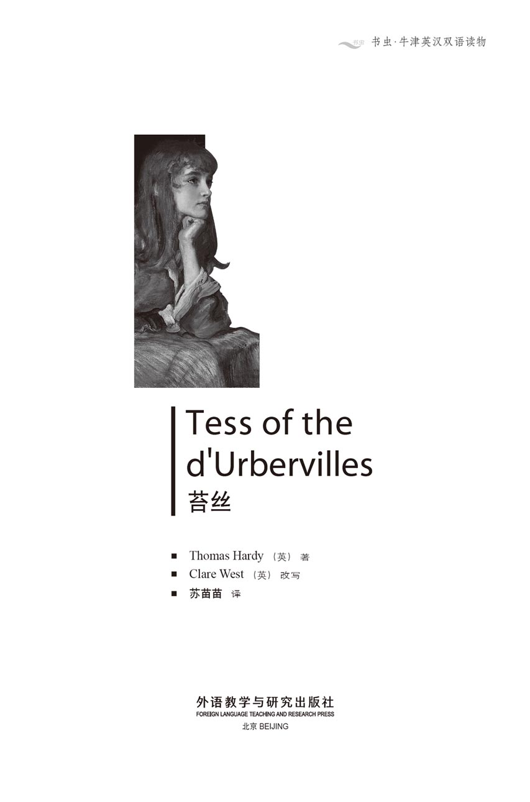
版权页
京权图字01-96-1590
Originally published by Oxford University Press, Great Clarendon Street, Oxford. © 1989
This edition is licensed for sale in the People's Republic of China only and not for export therefrom.
'Oxford' is a registered trademark of Oxford University Press.
图书在版编目（CIP）数据
苔丝 = Tess of the d'Urbervilles／（英）哈代（Hardy, T. ）著；（英）韦斯特（West, C. ）改写；苏苗苗译．—北京：外语教学与研究出版社，1997.4（2014.9 重印）
（书虫·牛津英汉双语读物）
ISBN 978-7-5600-1245-2
Ⅰ．苔… Ⅱ．①哈…②韦…③苏… Ⅲ．小说—对照读物—英、汉 Ⅳ．H319.4：I
中国版本图书馆CIP数据核字（97）第06329号
出版人： 蔡剑峰
责任编辑：王霖霖
出版发行：外语教学与研究出版社
社 址：北京市西三环北路19号（100089）
网 址：http://www.fltrp.com
版 次：1997年5月第1版
书 号：ISBN 978-7-5600-1245-2
* * *
凡侵权、盗版书籍线索，请联系我社法律事务部
举报电话：（010）88817519
电子邮箱：banquan@fltrp.com
法律顾问：立方律师事务所 刘旭东律师
中咨律师事务所 殷 斌律师
简介
简 介
小说问世于1891年，至今依然是刻画女性内心情感的最为细腻动人的小说之一。
这是一本忧伤的书：一位少女的生命被慢慢地、但确确实实地毁了——不是被她的敌人，而是被那些自称爱她的人。这是怎样的爱，何以摧毁自己所爱？
悲哀总是在眼睁睁地目睹错误发生却又无力阻拦之时产生。苔丝是一个快乐的姑娘，她的生活本该十分幸福——但合适的人儿犹豫着，不当的人却捷足先登。“别让她走！”我们不禁要大喊，或者“现在就告诉他，以免悔之太晚！”
然而还是太晚了：故事发生在一百年前——其实每天都在重演。我们无能为力，只有眼看着世界在变幻运转着，毁掉了苔丝，又继续变幻运转……仿佛根本未曾有过她。
托马斯·哈代（1840-1928）是英国最伟大的作家之一。他的大部分作品，包括《苔丝》，都是以他的故乡，英国南海岸的多尔塞特为背景的。
目录
chapter-a135_ 1 The Maiden
The Maiden
Chapter 1
One evening at the end of May a middle-aged man was walking home from Shaston to the village of Marlott in the Vale of Blackmoor. His legs were thin and weak, and he could not walk in a straight line. He had an empty egg-basket on his arm, and his hat was old and worn. After a while he passed an elderly parson riding a grey horse.
'Good night,' said the man with the basket.
'Good night, Sir John,' said the parson.
After another step or two the man stopped and turned round to speak to the parson.
'Now, sir, last market-day we met on this road at the same time, and I said "Good night" and you answered "Good night, Sir John", as you did just now.'
'I did,' said the parson.
'And once before that, almost a month ago.'
'I may have.'
'So why do you call me Sir John, when I am only John Durbeyfield?'
The parson rode nearer, and after a moment's hesitation, explained: 'It was because I've discovered something of historical interest. I am Parson Tringham, the historian. Do you really not know, Durbeyfield, that you are a direct descendant of the ancient and noble family of the d'Urbervilles? They descended from Sir Pagan d'Urberville, who came from Normandy with William the Conqueror in 1066.'
'Never heard that before, sir!'
'Well, it's true. Let me see your face. Yes, you have the d'Urberville nose and chin. D'Urbervilles have owned land and served their King for hundreds of years. There have been many Sir Johns, and you could have been Sir John yourself.'
'Well!' exclaimed the man. 'And how long has this news about me been known, Parson Tringham?'
'Nobody knows about it at all,' said the parson. 'I just happened to discover it last spring, when I was trying to find out more about the d'Urbervilles and noticed your name in the village.'
'I've got an old silver spoon, and an old seal too at home,' said the man, wondering. 'So where do we d'Urbervilles live now, Parson?'
'You don't live anywhere. You have died, as a noble family.'
'That's bad. So where do we lie?'
'In the churchyard at Kingsbere-sub-Greenhill.'
'And where are our family lands?'
'You haven't any.'
John Durbeyfield paused. 'And what should I do about it, sir?'
'Oh, nothing. It's a fact of historical interest, nothing more. Good night.'
'But you'll come and have some beer with me, Parson Tringham?'
'No, thank you, not this evening, Durbeyfield. You've had enough already.' The parson rode away, half regretting that he had told Durbeyfield of his discovery.
Durbeyfield walked on a few steps in a dream, then sat down with his basket. In a few minutes a boy appeared. Durbeyfield called to him.
'Boy! Take this basket! I want you to go and do something for me.'
The boy frowned. 'Who are you, John Durbeyfield, to order me about and call me boy? You know my name as well as I know yours!'
'Do you, do you? That's the secret! Well, Fred, I don't mind telling you that the secret is that I'm one of a noble family.' And Durbeyfield lay back comfortably on the grass. 'Sir John d'Urberville, that's who I am. And I've got the family seal to prove it!'
'Oh?'
'Now take up the basket, and tell them in the village to send a horse and carriage to me immediately. Here's a shilling for you.'
This made a difference to the boy's view of the situation.
'Yes, Sir John. Thank you, Sir John.'
As they spoke, sounds of music came through the evening air from the village.
'What's that?' said Durbeyfield. 'Have they heard my news already?'
'It's the women dancing, Sir John.'
The boy went on his way and Durbeyfield lay waiting in the evening sun. Nobody passed by for a long time, and he could just hear the faint music in the distance.
The village of Marlott lies in the beautiful Vale of Blackmoor. Although this valley is only four hours away from London, it has not yet been discovered by tourists and artists. The best view of the vale is from the hills surrounding it; it looks like a map spread out. It is a quiet, sheltered part of the countryside, where the fields are always green and the rivers never dry up. To the south lies the great dividing line of hills. From here to the coast the hills are open, the sun pours down on the huge dry fields, the atmosphere is colourless. But here in the valley lies a completely different countryside, smaller and more delicate. The fields are tiny, the air makes you sleepy, the sky is of the deepest blue. Everywhere you can see a rich greenery of grass and trees, covering smaller hills and valleys. This is the Vale of Blackmoor.
And in the village of Marlott, following ancient custom, the young women gathered to dance every holiday. For this May Day dance, all wore white dresses. There was a fine, handsome girl among them, with a red ribbon in her hair. As they danced, they noticed a carriage go by. Durbeyfield lay back in it, singing, 'I'm—Sir—John—and—I've—got—a—spoon—and—seal—and—my—family—lies—at—Kingsbere!' The girl with the ribbon, who was called Tess, turned red and said quickly to her friends, 'Father's tired, that's all.' The other girls just laughed but stopped when Tess looked unhappy. The dancing went on.
In the evening the men of the village came to watch and later to join the dancers. Three young strangers, who were passing by, also stopped to look. They explained they were brothers on a walking tour. The older two continued their walk, but the youngest seemed more interested in the girls than his brothers were, and stayed to dance with several of them. As he left the dance, he noticed Tess, who seemed a little sad that he had not chosen her. He looked back from the road, and could still see her in her white dress, standing modestly apart from the dancers. He wished he had danced with her. He wished he had asked her name. But it was too late. He hurried on to join his brothers.
The young stranger had made an impression on Tess. But soon, worried by her father's strange appearance that afternoon, she decided to walk home. After the excitement of the dance, her parents' small cottage was a depressing sight. It was dark inside, as they had only one candle. The furniture was old and worn. There were six children crowded into the tiny space. Their mother was doing the washing at the same time as putting the baby to sleep. Looking after so many children had aged Joan Durbeyfield, but she still showed some of her early prettiness, which Tess had inherited.
'Let me help with the washing, mother,' said Tess gently.
'Oh Tess, I'm glad you've come,' said her mother. 'There's something I must tell you.'
'Is it anything to do with father making such a fool of himself this afternoon?' asked Tess, frowning.
'That's all part of the excitement! They've discovered we're the oldest family in the whole county, going back a long way! And our real name is d'Urberville! Doesn't that make you proud! That's why your father rode home in the carriage, not because he'd been drinking, as people thought.'
'I'm glad of that. Will it do us any good, mother?'
'Oh yes! Great things may come of it. No doubt our noble relations will be arriving in their carriages as soon as they find out.'
'Where is father now?' asked Tess suddenly.
Her mother did not answer directly. 'He saw the doctor today, you know. It's fat round the heart, he says. That's the cause of his illness. He might last ten years... might last ten months or days.'
Tess looked anxious. Her father, suddenly a great man, to die so soon! 'But where is father?' she asked firmly.
'Now don't you get angry!' said Mrs Durbeyfield. 'The poor man was feeling so weak after the news that he went to Rolliver's. He needs to build up his strength to deliver the beehives tomorrow, remember.'
'Oh my God!' cried Tess. 'He went to a public house! And you agreed to it, mother!'
'No, I didn't,' said Mrs Durbeyfield crossly. 'I've been waiting for you to look after the children while I fetch him.'
Tess knew that her mother greatly looked forward to these trips to Rolliver's. There she could sit by her husband's side among the beer-drinkers, and forget that the children existed. It was one of the few bright moments in her hardworking life. Mrs Durbeyfield went out, and Tess was left with the children. They were very young, and totally dependent on the Durbeyfield couple:six helpless creatures who had not asked to be born at all, much less to be part of the irresponsible Durbeyfield family.
maiden n. young unmarried woman. 少女。
parson n. clergyman. 牧师。
hesitation n. state of hesitating. 犹豫。
descendant n. person who is descended from (the person or persons named). 后裔；后代。
conqueror n. one who conquers. 征服者。
serve v. be a servant to (sb); work for (sb). 做（某人）的仆人；为（某人）工作。
discover v. find out. 发现。
pause n. short interval or stop (while doing or saying sth). 中止；暂停。
regret v. be sorry (to say, etc, that...). 懊悔。
appear v. become visible. 出现。
secret n. sth kept from the knowledge or view of others. 秘密。
immediately adv. at once; without delay. 立刻；立即。
in the distance far away. 在远处。
shelter n. condition of being kept safe, for example, from rain, danger. 遮蔽；庇护。
atmosphere n. air in any place.（任何地方之）空气。
custom n. usual and generally accepted behaviour among members of a social group. 风俗；习俗。
ribbon n. (piece or length of) silk or other material woven in a long, narrow strip or band, used for ornamenting, for tying things, etc. 丝质或其他质料的狭长带子（用以作装饰或绑东西等）。
modestly adv. in a manner which cares not to do or say anything impure or improper. 谨慎地；庄重地；有礼貌地。
impression n. effect produced on the mind or feelings. 印象。
furniture n. all those movable things needed in a house. 家具。
inherit v. derive (qualities, etc) from ancestors. 由遗传而得。
carriage n. vehicle, especially one with four wheels, pulled by a horses or horse, for carrying people. 四轮马车。
noble adj. of high rank, title or birth. 贵族的；高贵的。
anxious adj. feeling anxiety; troubled. 忧虑的；担心的。
fetch v. go for and bring back. 接来（人）。
irresponsible adj. (doing things) without a proper sense of responsibility.（做事）无责任感的。
第一章 处女
第一章 处女
5月末的一天傍晚，有个中年汉子正从夏斯顿回家到黑荒野山谷的马勒特村去。他双腿瘦弱，一路东倒西歪。他手挽一个盛鸡蛋用的空篮子，帽子又旧又破。走了一会儿，他遇见了一位骑匹灰马的老牧师。
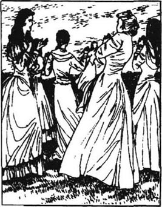
“晚安。”挽着篮子的人说。
“晚安，约翰爵士，”牧师说道。
刚走出一两步，这人停了下来，转过身对牧师说：
“嗯，先生，上次赶集那天，大约也是这个时候，我们在这条路上碰到过的。当时我向您道声‘晚安’，您也和刚才一样回答说‘晚安，约翰爵士’。”
“我是那么说的，”牧师说道。
“而且更早以前还曾有过一回——将近一个月以前吧。”
“我也许是说过的。”
“那么您为什么要称呼我‘约翰爵士’呢？我只不过是约翰·德北呀。”
牧师拍马走近，略一犹豫，便解释道：“那是因为最近我发现了一些史实。我是特林厄姆牧师，历史学家。德北呀，难道你真的不知道自己是那古老而高贵的德伯家族的一支直系后裔吗？这个家族起始于培根·德伯爵士，他是在1066年随同征服者威廉国王从诺曼底来到英格兰的。”
“这事我以前可从没听说过，先生！”
“哟，这可是千真万确的。让我看看你的脸。没错，你有德伯家的鼻子和下巴。德伯家族拥有大片土地，而且数百年来效忠于国王。哦，对啦，你们家族中有过好多个约翰爵士呐，而你自己就可能是一个。”
“哦！”这人惊呼道，“特林厄姆先生，有关我的事情，被发现有多久了？”
“根本没有人知道，”牧师说，“我是去年春天碰巧发现的，那时我正在努力发掘有关德伯家族的更多情况，于是在村子里注意到了你的姓氏。”
“我家里倒是有一把银匙和一枚旧印。”这人思忖道，“那么你说，我们德伯家族的人现在住在哪儿呢？”
“你们家族的人哪儿都没有了。你们这个豪门望族，算是已经完结了。”
“真可悲呀。那么，我们家族埋在哪儿？”
“绿山底王陴那儿的教堂墓地。”
“我们家族的田地在哪儿呢？”
“你们什么都没有了。”
过了一会儿，约翰·德北又问：“那这事我该怎么办呢，先生？”
“哦，说说而已。这只是有关历史的一桩事实，别无他意。告辞了。”
“特林厄姆牧师，您愿意来同我一起喝杯啤酒吗？”
“不，谢谢你啦，今晚不喝了，德北。你已经喝得够多了。”牧师拍马离去，有些后悔对德北说了他的发现。
德北走了几步，做梦一般。随后，他就挎着篮子坐了下来。过了几分钟，来了一个男孩，德北朝他喊道：
“小家伙，拎着我的篮子！我想要你替我办点事儿。”
男孩皱起眉头：“你是谁哟，约翰·德北，对我这么吆三喝四的，还叫我‘小家伙’？咱们俩谁还不知道谁叫什么呀！”
“你知道？你知道我的名字？这可是秘密。嗯，弗雷德，我不妨告诉你吧。这个秘密就是我是贵族人家的一员。”德北美滋滋地在草地上躺下来。“约翰·德伯爵士——那便是我，我有家族的印章可以证明！”
“哦？”
“现在，你拎上篮子，告诉村里的人立即给我派一辆单马马车来。这是给你的一先令。”
有了这钱，小伙子对这事儿的想法就不同了。
“遵命，约翰爵士。谢谢您啦，约翰爵士。”
他们正说着话，一阵音乐声穿过夜空从村头传来。
“怎么回事？”德北说，“他们已经得知我的新闻了吗？”
“那是妇女舞会，约翰爵士。”
男孩上路走了，德北躺在夕阳下等着。好长一段时间，没有人路过那儿，他只听到那悠远的音乐。
马勒特村坐落在美丽的黑荒野山谷。虽然山谷距伦敦只有四小时的路程，却尚未被游客和艺术家们发现。眺望山谷的最好视角是在环绕的山峦上；从那儿看过去，它宛如一幅平展的地图。这是一片峦嶂掩蔽的宁静乡村，田地总是郁郁葱葱的，溪流从不干涸。往南是耸立的山脉。由此往海岸去，山峦平缓开阔，阳光倾射在大片干涸的土地上，空气了无色彩。但在这里的山谷间，却是一派迥异的乡村景致，更小更精巧。田地不大，空气催人入梦，天空是最深最深的湛蓝。处处可见那树木草地的欲滴翠绿，覆盖了满山遍谷。这就是黑荒野山谷。
马勒特村有个古老的习俗，每到假日，年轻妇女们都聚在一起跳舞。为这一次五月节，妇女们都身穿白衣裳。其中有一位纤秀好看的姑娘，头戴红色的发带。就在她们跳着舞时，她们看到一辆马车驰过。德北正仰身坐靠其中，唱道：“我是约翰爵士，我有银匙和印章，我的家庭埋在王陴那里。”那个头戴红发带、名叫苔丝的姑娘脸都涨红了，赶忙对伙伴们说：“父亲累了，就这么回事。”其他的姑娘全都大笑起来，但当她们察觉到苔丝的不悦时便停住了。舞会仍在继续进行着。
傍晚，村里的男人们赶来观看，并跟着跳了起来。还有三个路过的陌生人也停下来看了一会儿。他们解释说，他们兄弟三人正在远足旅行的途中。后来两个哥哥继续赶路了，而老三似乎比哥哥们对姑娘更感兴趣。他待了会儿，并和几个姑娘跳了舞。就在他离开舞会时，他注意到了苔丝。她看起来有点儿伤心，因为他没有邀她跳舞。当他在路上回头张望时，仍能见到穿着一身白色衣裙的她，优雅端庄地站在一群跳舞者的旁边。他真希望自己当初请她跳了舞，还想问问她的芳名，但现在已经来不及了。他要尽快赶上他的哥哥们。
陌生的年轻人给苔丝留下了印象，但很快苔丝想起了父亲下午古怪的模样，有些担心。于是她决定走回家去。她刚刚走出舞会，有些兴奋，她们家的小屋便显得有些抑郁。因为只有一根蜡烛，屋子里很昏暗。家具都是又旧又破的，还有六个孩子挤在这么一个小地方。苔丝的母亲一边在哄小宝宝入睡，一边洗着衣服。一个人要照料这么多孩子，这加速了琼·德北的衰老，但从她身上仍不难看出几分年轻时的姿色。苔丝承袭了母亲的美貌。
“让我帮你洗吧，妈，”苔丝温柔地说。
“哟，苔丝，你回来了我真高兴，”她母亲说，“我正有事儿要跟你说呢。”
“是关于爸爸下午出丑的事儿吗？”苔丝皱着眉头问道。
“就是那件让人激动的事儿！有人发现我们是整个郡里最古老的家族。有好长的历史哩！我们的真实姓氏是德伯！这不让你觉得骄傲吗？你爸爸就是因为这个才乘着马车回家的，可不像人家想的那样，是因为喝醉了酒。”
“我很高兴有这么回事儿。这对我们有什么好处吗，妈？”
“哦，当然！没准儿能由此产生一些大好事儿呢！毫无疑问，我们那些高贵的亲戚一旦得知此事，就会乘坐马车来看望我们的。”
“现在爸爸在哪儿？”苔丝突然问道。
母亲没有直接回答：“你知道他今天去看医生了。说病因是心脏周围堆了脂肪。也许他能再活十年……再活十个月或者十天。”
苔丝愁容满面。她的父亲，一个突然间变得如此伟大的人物，会这么快就死去！“但爸爸在哪儿啊？”她加重语气问道。
“嗯，你可别生气，”德北夫人说，“这可怜的人儿在听说了那则特大消息后，就浑身酥软啦，他只好去了罗里弗酒店。他需要积蓄点儿力气，要知道，明早他还得赶运那些蜂箱呢。”
“哦，天哪！”苔丝叫了起来，“他上酒店了！而你却同意了，妈！”
“不，我没有同意。”德北夫人生气地说。“我一直在等着你回来照看孩子们，这样我就可以去接他了。”
苔丝知道母亲非常希望到罗里弗酒店去。在那儿，她可以挨着丈夫坐在一群喝啤酒的人当中，忘掉孩子们的存在。这是她繁重的生活中难得的一小段幸福时光。德北夫人出去了，苔丝留下来与弟弟妹妹们在一起。他们都还这么小，还全得依靠德北夫妇：六个无助的小生命，他们自己并没有要求降临到这个世界上，更没有想要成为（这样）不能尽责的德北家庭中的成员。
chapter-a135_ 2
Chapter 2
It was eleven o'clock before all the family were in bed, and two o'clock next morning was the latest time to set off with the beehives. It was a distance of twenty or thirty miles on bad roads to Casterbridge, where the Saturday market was held. At half-past one Mrs Durbeyfield came into the bedroom where Tess and all the children slept.
'The poor man can't go,' she whispered. Tess sat up in bed.
'But it's late for the bees already. We must take them today.'
'Maybe a young man would go?' asked Mrs Durbeyfield doubtfully. 'One of the ones dancing with you yesterday?'
'Oh no, not for the world!' said Tess proudly. 'And let everybody know the reason? I'd be so ashamed! I think I could go if little Abraham came with me.'
Tess and Abraham dressed, led out the old horse Prince with the loaded waggon, and set off in the dark. They cheered themselves up with bread and butter and conversation.
'Tess!' said Abraham, after a silence.
'Yes, Abraham.'
'Aren't you glad that we're a noble family?'
'Not particularly.'
'But you're glad you're going to marry a gentleman?'
'What?' said Tess, lifting her face.
'Our noble relations are going to help you marry a gentleman.'
'Me? Our noble relations? We haven't any. Whatever put that into your head?'
'I heard them talking about it at home. There's a rich lady of our family out at Trantridge, and mother said that if you claimed relationship with her, she'd help you marry a gentleman.'
His sister became suddenly silent. Abraham talked on, not noticing her lack of attention.
'Did you say the stars were worlds, Tess?'
'Yes.'
'All like ours?'
'They seem like our apples—most of them good, a few bad.'
'Which do we live on? A good one or a bad one?'
'A bad one.'
'If we lived on a good one, how would things be different?'
'Well, father wouldn't be ill and cough as he does, and mother wouldn't always be washing.'
'And you would have been a ready-made rich lady, and not have to marry a gentleman.'
'Oh, Aby, don't—don't talk of that any more!'
Abraham finally went to sleep on the waggon. Tess drove the horse. Gradually she fell into a dream. She could see her father, foolish in his pride, and the rich gentleman of her mother's imagination laughing at the poor Durbeyfield family.
Suddenly she awoke from her dream to noise and violent movement. Something terrible had happened. She jumped down and discovered that the post carriage, speeding along the dark road, had driven into her slow and unlighted waggon. Poor Prince was seriously hurt, and as she watched he fell to the ground.
'You were on the wrong side,' said the post driver. 'I must go on with the post, but I'll send somebody to help you as soon as I can. You'd better stay here with your waggon.'
He went on his way, while Tess stood and waited, tears pouring down her cheeks. Daylight came. Prince lay there, unmoving, his eyes half open.
'It's all my fault,' cried Tess. 'What will mother and father live on now? Aby, Aby, wake up! We can't go on with our beehives—Prince is dead!' When Aby realized what had happened, his face looked like an old man's.
'It's because we live on a bad star, isn't it, Tess?' he said through his tears.
Finally a man arrived with a horse, to take the waggon on to Casterbridge to deliver the beehives, and then collect Prince on the way back. When they got home, Tess broke the news to her parents. They were not angry with her, but she blamed herself completely.
When Durbeyfield heard he would only get a few shillings for Prince's dead body, he rose to the occasion.
'We d'Urbervilles don't sell our horses for cat's meat!' he insisted. And the following day he worked harder than usual in digging a grave, where Prince was buried. All the children cried.
'Has he gone to heaven?' asked Abraham in tears. But Tess did not cry. Her face was dry and pale. She felt she had murdered a friend.
beehive n. box for bees to live in. 蜂房。
ashamed adj. feeling shame. 感到羞耻的。
waggon n. four-wheeled vehicle for carrying goods, pulled by horses or oxen. 四轮运货马（牛）车。
relationship n. relative. 亲戚关系。
silent adj. saying little or nothing; giving no answer, views. 沉默的。
gradually adv. by degrees. 逐渐。
foolish adj. silly. 傻的。
violent adj. accompanied by great force. 猛烈的。
seriously adv. severely. 严重地。
realize v. understand. 了解。
occasion n. time at which a particular event takes place.（发生特殊事情的）时机。
grave n. hole dug in the ground for a corpse. 坟墓。
murder v. kill unlawfully and on purpose. 谋杀。
第二章
第二章
过了11点钟，这一家人才全都上了床。要带着这些蜂箱上路，最迟也不能迟于翌晨两点钟出发。由那条糟糕的路去卡斯特桥市有二三十英里的路，那儿星期六有集市。在一点半钟的时候，德北夫人走进苔丝和其他孩子们睡觉的卧室。
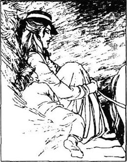
“那个可怜的人儿去不了啦，”她轻轻说道。苔丝从床上坐了起来。
“但是已经迟了，我们必须在今天把蜂箱带到！”
“也许哪个年轻小伙子能去？”德北夫人有些迟疑。“叫个昨天跟你跳舞的小伙子？”
“哦，不，绝对不行！”苔丝自尊地说，“难道要让所有的人都知道缘由吗？我会感到很羞耻的！我想我可以去，如果小亚伯拉罕能陪我的话。”
苔丝和亚伯拉罕穿好了衣服，牵出了那匹名叫“王子”的老马。马车已经上好了货。在黑暗中，他们出发了。他们吃了点儿面包黄油，让自己振奋起精神，还聊起了天。
“苔丝！”一阵沉默之后，亚伯拉罕开口了。
“嗯，亚伯拉罕。”
“我们是贵族家庭，难道你不高兴吗？”
“没有特别高兴。”
“但是，你要同一位先生结婚了，你会高兴吗？”
“什么？”苔丝仰起了脸，问道：
“我们的贵族亲戚会帮助你同一位先生结婚的。”
“我？我们的贵族亲戚？我们没有这样的亲戚呀。是什么让你脑子里有这种想法的？”
“我在家里听到他们谈起这件事。在纯瑞脊那儿，有一位我们家族的有钱太太。妈妈说如果你和她攀上亲，她会帮你嫁给一位先生的。”
他姐姐突然沉默了。亚伯拉罕没有注意到姐姐已无心在听，还在继续说着。
“苔丝，你说过这些星星就是一个个世界吧？”
“是的。”
“全都像我们这儿的世界吗？”
“它们就像我们的苹果一样——大多数是好的，也有一些是坏的。”
“我们住在哪颗星星上呢？好的，还是坏的？”
“坏的。”
“假如我们住在一颗好的星星上，会有什么不同吗？”
“那样，爸爸就不会像现在这样生病，也不会咳嗽，而妈妈也不会总是洗个没完。”
“而你也早是一位有钱的小姐，用不着非得嫁给一位先生不可了。”
“哦，亚比，别说了——别再说这个了！”
亚伯拉罕后来在货车上睡着了。苔丝赶着马，也渐渐地进入了梦乡。在梦里她看见父亲荒唐可笑地沉浸在骄傲中，而那位她母亲想象中的有钱绅士嘲笑着贫穷的德北家。
一阵响声和剧烈的震动突然把苔丝从梦中惊醒。发生了什么可怕的事情。她从车上跳了下来，发现是一辆沿着漆黑的马路急速行驶的邮车撞上了她那辆慢吞吞、没点灯的货车。可怜的“王子”伤势严重，苔丝眼看着它倒在了地上。
“你的车跑错道了，”邮车车夫说道，“我必须继续赶送邮件。不过，我会尽快派人来帮助你。你最好和货车一起在这儿等着。”
邮车驰走了。苔丝站在一旁等着。眼泪不住地从脸颊上流下来。天亮起来了。“王子”躺在那儿，一动不动，半睁着眼睛。
“这全都是我的过错，”苔丝哭着说，“现在爸妈靠什么生活呢？亚比，亚比，快醒醒！我们的蜂箱运不成了——‘王子’死了！”亚比明白了所发生的事情时，露出了饱经沧桑的老人才有的表情。
“这是因为我们生活在一颗坏星星上，是不是，苔丝？”他眼泪汪汪地说道。
终于有人牵着匹马过来了。这匹马拉着货车把蜂箱送到了卡斯特桥，并在返回途中把“王子”的尸体捎了上来。到了家之后，苔丝把这事儿跟父母讲了。他们并没有生她的气，反而是苔丝自己陷入了深深的自责中。
当德北听说“王子”的尸体只能换几个先令时，他改变了主意。
“我们德伯家绝不会把我们的马卖掉换猫食的！”他坚持说。第二天，他比平常更卖劲儿地挖坟墓。“王子”下葬时，孩子们都哭了。
“他会去天堂吗？”亚伯拉罕流着泪问。但苔丝没有哭。她的脸干巴巴的，没有一丝血色。她觉得自己杀死了一个朋友。
chapter-a135_ 3
Chapter 3
Life now became rather difficult for the Durbeyfields. Without Prince to carry loads, John Durbeyfield could not buy and sell as he used to. He had never worked hard or regularly, and now he only occasionally felt like working. Tess wondered how she could help her parents. One day her mother made a suggestion.
'It's lucky we've found out about your noble blood, Tess. Do you know there's a very rich lady called Mrs d'Urberville living on the other side of the wood? She must be our relation. You must go to her and claim relationship with her, and ask for some help in our trouble.'
'I wouldn't like to do that,' said Tess. 'If there is such a lady, it would be enough to be friendly. We can't expect help from her.'
'You could persuade anybody, my dear. Besides, something else might happen. You never know.' And her mother nodded wisely.
'I'd rather try to get work,' said Tess sadly.
'What do you say, Durbeyfield?' said his wife, turning to him.
'I don't like my children asking for help,' said he proudly. 'I'm the head of the oldest branch of the family and a noble family like ours shouldn't have to ask for help.' Tess could not accept his reasons for not going.
'Well, as I killed the horse, mother, I suppose I ought to go. But don't start thinking about her finding a husband for me.'
'Who said I had such an idea?' asked Joan innocently.
'I know you, mother.But I'll go.'
Next morning Tess walked to Shaston, a town she hardly knew, and went on by waggon to Trantridge. The Vale of Blackmoor was her only world, and she had never been far outside the valley. All the knowledge she had came from her lessons in the village school, which she had left a year or two earlier. As soon as she left school she had tried to earn a little money by helping in the fields or milking cows or making butter. She blamed her mother for thoughtlessly producing so many children. Joan Durbeyfield was like a child herself, and never thought about the future. It was Tess who worried and worked and felt responsible for her little brothers and sisters. So naturally it was Tess who should represent her family at the d'Urberville home.
From Trantridge she walked up a hill, and turning a corner, saw the house. She stopped in amazement. It was large and almost new, a rich red against the green of the bushes around it. Behind it lay the woods called The Chase, an ancient forest. There were greenhouses and well-kept gardens. There was no lack of money here. Tess hesitated, almost frightened.
'I thought we were an old family!' she said to herself, 'but this is all new!' She wished she had not come.
She was right in a way. All this was owned by the d'Urbervilles, or the Stoke-d'Urbervilles as they called themselves at first. The Stokes were a northern business family who took an old-sounding name to add to their own when they moved into the south. So Tess was more of a d'Urberville than any of them, but did not know it.
A young man appeared in the garden. He looked about twenty-four, and was tall and dark, with full red lips and a black moustache curled at the ends.
'Well, my beauty, what can I do for you?' he said, looking interestedly at her. 'I'm Mr d'Urberville.'
It needed all Tess's courage to reply. 'I came to see your mother, sir.'
'I'm afraid you can't see her. She's ill. What do you want to see her about?'
'I... I... it seems so foolish!'
'Never mind,' said he kindly. 'I like foolish things. Try again, my dear.'
'I came, sir, to tell you we are of the same family as you.'
'Aha! Poor relations?'
'Yes.'
'Stokes?'
'No, d'Urbervilles.'
'Oh yes, of course, I mean d'Urbervilles.'
'We have several proofs that we are d'Urbervilles. We have an old silver spoon and a seal at home. But mother uses the spoon to stir the soup. Mother said we ought to tell you, as we are the oldest branch of the family and we've lost our horse in an accident.'
'Very kind of your mother,' said Alec d'Urberville, 'and I certainly don't regret it.' He looked admiringly at Tess, whose face blushed a deep pink. 'And so you've come on a friendly visit?'
'I suppose I have,' murmured Tess, looking uncomfortable.
'Let us walk round the gardens until you have to go home, my pretty cousin.' Tess wanted to leave as soon as possible, but the young man insisted. He took her to the greenhouses.
'Do you like strawberries?' he asked.
'Yes,' said Tess, 'when they are ready.'
'These are ready now,' and so saying, d'Urberville picked one and held it to her mouth.
'No, no!' she said. 'I'd rather take it myself.'
But Alec put it into her mouth. He put roses into her hair and filled her basket with strawberries and flowers. He gave her food to eat, and watched her, while he quietly smoked a cigarette. She looked more adult and womanly than she really was. Alec could not take his eyes off her. She did not know as she smiled innocently at the flowers that behind the cigarette smoke was the cause of future sorrow in her life.
'What is your name?' asked Alec.
'Tess Durbeyfield. We live at Marlott.'
'I must see if my mother can find a place for you.' They said goodbye and she set off home carrying her strawberries and flowers.
This then was the beginning. Why did she have to meet the wrong man, and one who was so strongly attracted to her? Yet to the right man, she was only a half-forgotten impression from an evening's dancing in a country field. In life, the right man to love hardly ever comes at the right time for loving. Nature does not often answer a call for love, until the caller is tired of calling. In this case, as in millions, it was not the two halves of a perfect whole who met. A missing half wandered somewhere else, arriving much later. This delay was to have tragic results.
difficult adj. not easy. 困难的。
suggestion n. sth put forward for consideration. 建议。
expect v. think or believe that sth will happen or come, that sb will come. 盼望。
accept v. agree. 同意。
suppose v. let it be thought that. 认定。
innocently adv. in a manner which is not guilty. 无辜地。
knowledge n. familiarity gained by experience. 知识。
amazement n. great surprise or wonder. 愕然。
moustache n. hair allowed to grow on the upper lip. 唇髭。
spoon n. utensil with a shallow bowl on a handle, used for stirring, serving and taking up food. 匙；调羹。
seal n. piece of metal, etc, on which is a design and which is used to stamp on wax, etc. 印章；图章。
accident n. sth that happens without a cause that can be seen at once, usually sth unfortunate and undesirable. 意外事件。
murmur v. utter in a low voice. 低声说。
strawberry n. juicy red fruit with tiny yellow seeds on its surface, eaten raw and in jam. 草莓。
cigarette n. roll of shredded tobacco enclosed in thin paper for smoking. 香烟。
attract v. get the attention of; arouse interest or pleasure in. 引起……之注意或兴趣。
nature n. forces controlling the phenomena of the physical world. 自然力。
tragic adj. of tragedy. 悲惨的。
第三章
第三章
德北一家的生活陷入了困境。没有“王子”运货，约翰·德北就不能像过去那样做买卖了。他从来没有坚持卖力地干过活儿，现在也就偶尔才会想找点活儿干。苔丝琢磨着怎样才能帮上父母的忙。一天，她母亲提出了一个建议。
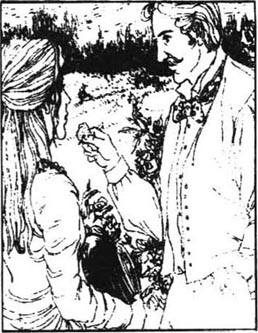
“苔丝，得知你有高贵的血统是件幸运的事。你知道在林子那头儿有位非常有钱的德伯太太吗？她准是我们的亲戚。你应当上她那儿去，说明和她的亲戚关系。就说我们处境困难，请求她帮帮忙。”
“我不愿做这种事，”苔丝说，“如果真有这么一位太太，只要她对我们友善，就足够了。我们不能指望从她那儿得到帮助。”
“你能打动任何人，亲爱的。而且，也许会有别的什么你意想不到的事儿发生呢。”她母亲自作聪明地点着头。
“我宁愿去找工作。”苔丝伤心地说。
“你认为怎样，德北？”妻子转向丈夫，问道。
“我不愿意我的孩子去求别人帮助。”他骄傲地说，“我是这个家族里最古老一支的家长，像我们这样高贵的家庭是不应该求助于人的。”他的这些不让去的理由让苔丝无法接受。
“好吧，妈，是我害死了马，我想我该去一趟。不过别指望她会替我找个丈夫。”
“谁说我这么想啦？”琼显得很无辜地问道。
“我知道你怎么想，妈。不过，我会去的。”
第二天早晨，苔丝步行到夏斯顿，一个她很陌生的城镇，然后搭上一辆马车前往纯瑞脊。黑荒野山谷是苔丝生活的整个世界，她从来没有远离过那个山谷。她一两年前离开了村里的学校，她所有的知识就是从那儿的课上学来的。一离开学校，她就在地里帮着干活，挤牛奶或是做黄油，靠这些来挣点小钱。她责怪母亲不加考虑地生了那么多孩子。而琼·德北自己还像个孩子似的，从不为将来打算。倒是苔丝又操心又干活，觉得对弟弟妹妹们负有责任。因此，很自然地，她就要作为家庭代表前往德伯家。
到了纯瑞脊，苔丝爬上了一个小山坡，拐过一个弯后，就看到了一座房子。她诧异地停住了脚步。这是一座很大而且几乎全新的艳红色房子，被绿色灌木围绕着。在它后面是一片叫做逐猎林的树林，这是一片原始森林。还有温室花房和保养得很好的花园。这里是不会缺钱的。苔丝踌躇着，几乎有些惊恐不安了。
“我还以为我们是古老的家族呢，”她自言自语道，“但这儿都是全新的！”她真希望她没来。
在某些方面她是想对了。这一切都归德伯，或如他们最初称呼自己的那样，归斯托克—德伯家所有。斯托克是北部一个经商的家庭，当他们迁居到南方时，就给自己加了一个听起来古老高贵的姓氏。因此，比起他们中的任何人来，苔丝都更有资格是德伯家族的一员，但对此她一无所知。
一个年轻人从花园里走了出来。他看起来有二十四岁左右，高大，黝黑，嘴唇肥厚红润，留着打卷的黑髭须。
“喂，我的美人儿，我能为你效劳吗？”他说道，一边颇有兴趣地看着她。“我是德伯先生。”
苔丝鼓足了所有的勇气，回答道：“我是来看望你母亲的，先生。”
“恐怕你不能见她，她病了。你见她有什么事儿吗？”
“我……我……这事显得太傻了！”
“不要紧，”他温和地说，“我就爱听傻事儿。说吧，亲爱的。”
“我来这儿是想告诉你们，我们是同族的亲戚，先生。”
“啊，穷亲戚吧？”
“是的。”
“斯托克家的人吗？”
“不是，是德伯家的。”
“哦，对，当然，我指的是德伯家。”
“我们有根据说自己是德伯家的人。我们家有个旧银匙，还有个印章。但我母亲用那个银匙搅汤。母亲说我们应该来告诉你们，因为我们是这个家族最古老的一支。还有，在一次事故中，我们连马都失去了。”
“你母亲可真是一片好意。”亚历克·德伯说，“我当然不会为此感到遗憾。”他倾慕地盯着她，这使苔丝的脸变得绯红。“那么你是来做一次友好访问的喽？”
“我想是的。”苔丝低声说，显得有些局促不安。
“在你必须回家之前，让我们在花园里转转吧，我的漂亮表妹！”虽然苔丝想尽快离开，但这年轻人坚持不让。他带她来到温室。
“你喜欢吃草莓吗？”他问。
“是的！”苔丝说，“等它们熟透了的时候。”
“它们已经熟透了。”说着，德伯就摘了一个，准备塞到苔丝嘴里。
“哦，不！”她说，“我宁愿自己来。”
但是亚历克还是把草莓放进了她嘴里。他还采了玫瑰别在她头上，并在她的篮子里装满了草莓和鲜花。他拿东西给她，自己就静静地抽着烟看她吃。苔丝看起来比实际上的她更成熟也更具有女人味儿。亚历克无法将视线从她身上移开。她不会想到，就在她天真无邪地对着那些鲜花微笑时，坐在雪茄烟雾后面的，正是会给她未来生活带来痛苦的冤家对头。
“你叫什么名字？”亚历克问道。
“苔丝·德北。我家在马勒特村。”
“我一定留意看看我母亲是否能给你找份工作。”他们告别之后，苔丝带着一篮子草莓和鲜花回去了。
事情就这样开了头。为什么她一定要遇上这个不合适却如此垂涎于她的男人？而对那个适合于她的男人，留下的只不过是一个来自乡间黄昏舞会的已经模糊了的印象。在生活中，适合于爱的男人很少在适合于爱的时间出现。上天总是无视人们对爱的呼唤，直至人们呼唤得精疲力竭。这只不过是无数个阴差阳错的故事中的一个。两个无法完美结合的一半相遇了，而丢失的另一半还在别处徘徊，姗姗来迟。这样的延误即将导致悲剧的结局。
chapter-a135_ 4
Chapter 4
When Tess arrived home the following afternoon a letter had already been received by her mother. It appeared to come from Mrs d'Urberville, and offered Tess work looking after chickens. Joan Durbeyfield was delighted.
'It's just a way of getting you there without raising your hopes. She's going to recognize you as family, I'm sure of it.'
'I would rather stay here with father and you,' said Tess, looking out of the window.
'But why?'
'I'd rather not tell you, mother. I don't really know.'
A few days later when Tess came back from looking for work, the children came running out and danced round her.
'The gentleman's been here!' they shouted.
Joan was full of smiles. Mrs d'Urberville's son had called, and asked if Tess could come or not.
'He's a very handsome man!' said Mrs Durbeyfield.
'I don't think so,' said Tess coldly. 'I'll think it over.' She left the room.
'He's in love with her, you can see that,' said Mrs Durbeyfield to her husband. 'No doubt he'll marry her and she'll be a fine lady.'
John Durbeyfield had more pride in his new-found blood than energy or health. 'That's what young Mr d'Urberville is trying to do! Improve his blood by marrying into the old line!'
Persuaded by her mother and the children, Tess finally agreed to go. Mrs Durbeyfield secretly made wedding plans. Then the day came when Tess, wearing her best Sunday clothes on her mother's orders, said goodbye to her family.
'Goodbye, my girl,' said Sir John, waking from a short sleep. 'Tell young d'Urberville I'll sell him the title, yes, sell it, at a reasonable price.'
'Not for less than a thousand pounds!' cried Lady Durbeyfield.
'No, tell him he can have it for a hundred! No, fifty, no—twenty! Yes, twenty pounds, that's the lowest. Family honour is family honour and I won't take any less!'
Tess felt like crying but turned quickly and went out. Her mother went with her to the edge of the village. There she stopped and stood waving goodbye, and watched her daughter walking away into the distance. A waggon came to take her bags, and then a fashionable little carriage appeared. It was driven by a well-dressed young man smoking a cigar. After a moment's hesitation, Tess stepped in.
Joan Durbeyfield, watching, wondered for the first time if she had been right in encouraging Tess to go. That night she said to her husband, 'Perhaps I should have found out how the gentleman really feels about her.'
'Yes, perhaps you ought,' murmured John, half asleep. Joan's natural trust in the future came back to her.
'Well, if he doesn t marry her before, he'll marry her after. If she plays her cards right.'
'If he knows about her d'Urberville blood, you mean?'
'No, stupid, if she shows him her pretty face.'
Meanwhile Alec d'Urberville was whipping his horse and driving the carriage faster and faster downhill. The trees rushed past at great speed. Tess was feeling thoroughly frightened. He took no notice when she asked him to slow down. She cried out and held on to his arm in fear.
'Don't touch my arm, hold on to my waist!' he shouted. At the top of another hill he said, laughing, 'Put your arms around me again, my beauty!'
'Never!' said Tess independently.
'Let me give you one little kiss, Tess, and I'll stop!'
'Will nothing else do?' cried Tess in despair. 'Oh, very well!'
As they raced on, he was on the point of kissing her, when she suddenly moved aside, so that he almost fell off.
'I'll break both our necks!' he swore passionately.
'I thought you would be kind to me,' said Tess, her eyes filling with tears. 'I don't want to kiss anybody!'
But he insisted, so in the end she sat still and d'Urberville kissed her. No sooner had he done so than she wiped the place on her cheek with her handkerchief.Just then her hat blew off into the road and d'Urberville stopped the horse. Tess jumped down to get it, then turned triumphantly to Alec.
'I shall walk from here,' she said firmly.
'But it's five or six miles more.'
'I don't care.'
'You made that hat blow off on purpose! You did, didn't you?'
She was silent. He swore angrily at her.
'Don't use such bad words!' cried Tess. 'I shall go back to mother! I hate you!'
D'Urberville suddenly started laughing.
'Look, I promise never to do that again,' he said. 'Come, let me take you in the carriage.'
But she refused, and began to walk in the direction of Trantridge. So they progressed slowly, d'Urberville driving the carriage beside Tess.
delight v. give great pleasure to. 使非常高兴。
recognize v. be willing to accept (sb or sth) as what he or it claims to be or has been in the part. 承认；认可。
handsome adj. (of men) good-looking, having virile beauty. （指男子）漂亮的；英俊的。
energy n. force, vigour. 精力；活力。
persuade v. cause (sb) by reasoning (to do sth). 说服。
reasonable adj. neither more nor less than seems right or acceptable. 公道的。
fashionable adj. following the fashion. 时髦的。
encourage v. give hope, courage or confidence to. 鼓励。
meanwhile adv. in or during the time between. 其时；此际。
thoroughly adv. completely. 完全地。
frightened v. filled with fright or terror. 使惊骇。
passionate adj. filled with, showing passion. 热情的；多情的。
on purpose by intention, not by chance. 故意地；不是偶然地。
refuse v. say "no" to (a request or offer). 拒绝。
第四章
第四章
第二天下午，没等苔丝回到家，她母亲就先收到了一封信。信像是德伯夫人写来的，她给苔丝提供了一份养鸡的差事。琼·德北非常高兴。
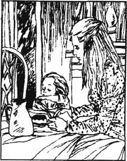
“这是让你去他们那里，同时不要抱太大希望。我相信她一定会把你当做一家人看待的。”
“我宁愿留在家里跟你和爸爸在一起。”苔丝看着窗外说。
“那又为什么？”
“还是别对你说的好，妈妈，我也不太清楚。”
几天过后，当苔丝外出找工作回来时，孩子们都跑了出来，围着她手舞足蹈。
“有位先生来过这儿！”他们嚷嚷道。
琼笑意盎然。德伯夫人的儿子来拜访过，他问苔丝还能否去他那儿。
“他很英俊！”德北夫人说。
“我可不觉得。”苔丝冷漠地说，“我会仔细考虑的。”说完，她离开了房间。
“看得出来，他爱上她了。”德北夫人对她丈夫说，“毫无疑问，他会跟她结婚的，她就快是一个贵妇人啦。”
与体力或健康相比，约翰·德北更为他那新发现的血统感到自豪。“跟古老的家族联姻，使自己的血统变得更高贵，这就是年轻的德伯先生想要做的事！”
经过母亲和孩子们的劝说，苔丝终于决定去了。德北夫人则暗自筹划着婚礼。到了要走的那天，苔丝依照母亲的吩咐穿上了最好的节日礼服，跟家人告别了。
“再见，我的孩子。”约翰爵士说道，他刚刚睡了一小觉。“告诉年轻的德伯，我愿意把爵士头衔卖给他。对，卖给他，如果价钱合理的话。”
“少于一千英镑就不卖！”德北夫人喊道。
“不，告诉他一百也行！不，五十，不，二十！对，二十英镑是最低价了。家族荣誉到底是家族荣誉，再少我就不干了！”
苔丝直觉得想哭，但她还是迅速转身走了。她母亲陪她走到了村头。在那儿停住，挥手道别后，母亲就看着女儿渐渐走远了。一辆货车驶过来，装上了苔丝的行李，然后又有一辆时髦的小马车出现在她面前。驾车的是一个抽着雪茄、穿着讲究的年轻人。苔丝犹豫了一下，然后上了车。
琼·德北瞪大了眼睛，头一次怀疑起她鼓励苔丝去到底正确与否。那天晚上，她对丈夫说：“也许我应该先弄清楚那位先生对她的真实感情才对。”
“是的，也许你该这样。”约翰嘀咕着，半睡半醒。琼那对未来充满信心的天性又恢复了。
“嗯，就算他早不娶她，他晚也会娶她。要是苔丝有点儿心计的话。”
“你是说如果他知道了她的德伯家血统？”
“不，傻瓜，如果她向他展示她的漂亮脸蛋儿。”
就在这时，亚历克·德伯正鞭打着马，驾驭着他的马车以越来越快的速度下山。树木在飞快地倒退着。苔丝觉得自己简直要被吓蒙了。她请求他放慢速度，他根本不予理睬。苔丝尖叫着，恐惧中她抓住了他的手臂。
“别碰我的手臂，抱着我的腰！”他叫道。又到了另一座山头，他笑着说道：“伸出你的手抱着我吧，我的美人儿！”
“决不！”苔丝的语气表明她不愿再求助于他。
“苔丝，让我轻轻地吻你一下，我就停下来！”
“非这样做不可吗？”苔丝绝望地哭了。“哦，那好吧！”
马车还在急驶着。当他正准备吻她时，苔丝突然躲开了，以至于他几乎摔了下去。
“我会让我们俩的脖子一起摔断的！”他暴躁地咒骂道。
“我原以为你不会欺侮我的。”苔丝说，她的眼眶盈满了泪水。“我不想亲任何人！”
但是他坚持要这样。因此，最后她只好坐着不动，让德伯吻了她一下，但她立即就用手帕擦拭脸上被吻过的地方。就在这时，她的帽子被风吹到了地上。德伯停住了车，苔丝跳下车捡起了帽子，然后带着胜利的神情转向亚历克。
“我从这儿走着去。”苔丝说得很坚决。
“但还有五六英里路呢！”
“我不在乎。”
“你是故意让帽子被风吹掉的！肯定是这样的，对吗？”
她没做声，他怒气冲冲地对她破口大骂开了。
“请不要说这么脏的话！”苔丝叫道，“我要回到妈妈那儿去，我恨你！”
德伯突然间大笑起来。
“好了，我保证再也不这样了。”他说，“上来吧，让我用车载你去。”
但她拒绝了，并朝纯瑞脊方向走去。因此，德伯只好驾着车跟在她身旁。两个人就这样缓缓前行着。
chapter-a135_ 5
Chapter 5
The chickens for which Tess was responsible lived in an old cottage on Mrs d'Urberville's land. On her first day Tess had to take some of the chickens to show to their owner. She immediately realized the old lady was blind. Mrs d'Urberville held each bird and felt it carefully to see that it was in good health. At the end she suddenly asked Tess a question.
'Can you whistle?'
'Whistle, Ma'am?'
'Yes, whistle tunes. I want you to practise and whistle to my birds every day.'
'Yes, Ma'am.'
Tess was not surprised at Mrs d'Urberville's cold manner, and did not expect any more of such a great lady. However, she did not realize that the old lady had never even heard about the family connection.
Tess began to enjoy her new work with the chickens, and the next day in the cottage garden she decided to practise whistling as instructed. She was shocked to find that she had completely forgotten how to whistle. Suddenly she noticed a movement behind a tree near the wall. It was Alec d'Urberville.
'Well, cousin Tess,' he said, 'I've never seen such a beautiful thing as you! I've been watching you from over the wall. Look, I can give you a lesson or two.'
'Oh no you won't!' cried Tess, going back towards the door.
'Don't worry, I won't touch you. Just look...' and he showed her how to whistle. From that moment Tess found she could whistle tunes to the birds just as Mrs d'Urberville wanted. And as the weeks passed, she often met d'Urberville in the garden and began to lose her shyness of him.
Every Saturday night the other farm workers from the surrounding area used to go to drink and dance in the market town two or three miles away. On Sundays they would sleep late. For a long time Tess did not go with them. But after a while she wanted a change from her routine and began to go on the weekly trips regularly. She always came home with the others at night, preferring the protection of being in a group. One Saturday night she was in the town looking for her companions as it was time to go home, when she met Alec d'Urberville.
'What, my beauty? Here so late?' he said, smiling at her.
'I'm just waiting for my friends,' she answered.
'I'll see you again,' he said as she moved away.
She became worried when she realized the workers were still dancing wildly and would not be going home soon. Again she caught sight of Alec, waiting in a doorway, his cigar glowing red in the dark. Eventually she joined a group wandering home. They had all been drinking, but she felt safer with them than alone. But after a while she became involved in a quarrel with them, and was trying to get away from the angry group, when Alec d'Urberville rode by. He offered to take her home on the back of his horse. She hesitated, then accepted.
Together they rode along in the dark, Tess holding on to Alec. She was very tired: every day that week she had got up at five. So she did not notice that they were riding off the main road and into The Chase, the oldest wood in England. It began to get foggy, and finally Alec admitted honestly that he was lost.
'Put me down here, sir,' cried Tess at once. 'Let me walk home from here. How wrong of you to bring me away from the main road! I knew I shouldn't trust you!'
'Don't worry, my beauty,' laughed Alec. 'I thought you would enjoy a longer ride on such a lovely night. But I can't let you go. The fog is so bad now that you couldn't possibly find your way. I'll leave you here and go to find out where we are. When I come back, I'll tell you, and you can come with me on horseback or go alone on foot—just as you like.'
She agreed to this. 'Shall I hold the horse?' she asked.
'No, he'll stay quiet,' answered Alec. 'By the way, your father has a new horse today. And the children have some new toys.'
'Was it... was it you who gave them? Oh, how good of you!' murmured Tess with a heavy heart. 'I almost wish you hadn't!'
'Tessy, don't you love me just a little now?'
'I'm grateful,' she admitted, 'but I'm afraid I don't...' and slowly she started to cry.
'Now don't cry, my dear. Sit here and wait for me.' He made a bed for the tired girl among the dead leaves, and covered her with his coat. He set off into the fog to find out where he was, and came back to find Tess fast asleep. He saw her in her white dress among the leaves, a pale, shining figure in the dark. He bent down and touched her cheek with his. Everywhere there was darkness and silence. The birds and animals slept, safe in and under the trees. But who was looking after Tess? Who was protecting her innocence?
'Tess!' said d'Urberville, and lay down beside her. The girl was not strong enough to resist him.
Why was Tess's girlish purity lost? Why does the wrong man take the wrong woman? Why do the bad so often ruin the good? Why is beauty damaged by ugliness? Thousands of years of philosophy cannot give us the answers to these questions. These things happen, and have always happened. Perhaps in the past, rolling home after a battle, Tess's ancestors, the real d'Urbervilles, had done the same, even more cruelly, to young country girls. But we cannot accept that that is Tess's fault, and should happen to her. As the people of her village say, 'It was to be.' And from now on, Tess's life was to be completely different.
cottage n. small house, especially in the country. 茅舍；农舍。
blind adj. without the power to see. 瞎的。
practise v. do sth repeatedly or regularly in order to become skilful. 练习。
whistle v. make a signal (to) by blowing through the rounded lips. 吹口哨。
tune n. succession of notes forming a melody. 曲；调子。
routine n. fixed and regular way of doing things. 例行手续；常规。
protection n. protecting or being protected. 保护。
wander v. go from place to place without any special purpose or destination. 漫步；徘徊。
foggy adj. dense, not clear, because of fog. 有浓雾的。
honestly adv. in an honest manner. 诚实地。
trust v. believe in the honesty and reliability of. 信赖。
possibly adv. in accordance with what is possible. 可能地。
grateful adj. feeling or showing thanks. 感激的。
cover v. place (one substance or thing) over or in front of (another). 用东西盖住。
purity n. state or quality of being pure. 纯净。
第五章
第五章
苔丝要养的鸡关在德伯夫人庄园的一间旧茅舍里。第一天她就要带着几只鸡去见它们的主人。她马上就意识到这个老妇人已经双目失明。德伯夫人一只只地抱过她的鸡，仔细地抚摩着，以便确认它们全都很好。之后，她突然向苔丝问道：
“你会吹口哨吗？”
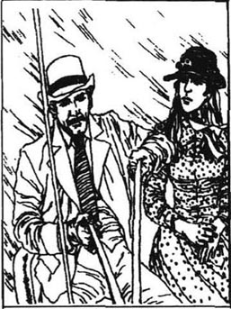
“吹口哨，夫人？”
“对，吹点儿曲调。我要你练习每天给我的鸡儿们吹口哨。”
“是，夫人。”
苔丝对德伯夫人的冷漠并不感到惊讶，她本来就没对这样一位贵妇人抱更多的期望。然而她并不了解，这个老妇人根本就没听人说起过她们的亲戚关系。
苔丝开始喜欢上了这份养鸡的差事。第二天，在鸡舍的院子里，她决定奉命练习吹口哨，但她震惊地发现她把怎么吹口哨全给忘光了。突然，她发觉围墙附近一棵树后有响动，是亚历克·德伯在那儿。
“喂，苔丝表妹，”他说，“我从来没见过像你这么漂亮的姑娘！我一直在墙这边观察你。瞧，我可以教你一两下。”
“哦，不，你不能这样。”苔丝叫道，转身朝房门走去。
“别担心，我不会碰你的。看着……”他开始给她示范如何吹口哨。从那以后，苔丝发现自己可以按照德伯夫人的心意对着那些鸡儿吹调子了。几个星期来，她经常在花园里遇见德伯，渐渐地在他面前也就不再感到害羞了。
每个星期六晚上，附近地区的农民们都会到两三英里以外的镇上喝酒、跳舞，然后在星期天睡个懒觉。很长一段时间，苔丝都没有跟他们去。但过了一阵子，苔丝想改变一下原来一成不变的生活，就开始有规律地去参加这一周一次的活动。夜里她总是和大伙儿结伴回来，在一群人当中，她可以寻得保护。一个周六的晚上，她正在镇上寻找同伴儿，因为到该回去的时候了。这时，她遇上了亚历克·德伯。
“怎么了，我的美人儿？这么晚了还在这儿？”他笑着对她说。
“我只不过在等我的朋友们。”她回答道。
“我会再找你的，”当她走开时他说道。
她看到那些人还在疯狂地跳着舞，不像就要回去的样子，于是变得焦急起来。她又一次看到了亚历克，他正等在门口，雪茄烟在黑暗中闪烁着红光。最后她还是跟着一群人逛着回去，他们全都喝了酒，但是她觉得这样也比孤身一人安全些。但是过了一会儿，她卷入了一场争吵中，正极力想从愤怒的人群中脱开身时，亚历克骑着马过来了。他叫她坐在他的马背上，要带她回去。她犹豫了一下，同意了。
他们在黑暗中往前骑着，苔丝紧紧抓着亚历克。她太累了，那个星期她每天都5点钟起床。因此，她没有注意到他们已经偏离了大道，进入逐猎林，那片英格兰最古老的森林。空气中开始弥漫着雾霭。终于，亚历克老实地承认他迷路了。
“放我下马吧，先生。”苔丝立即哭叫道，“让我从这儿走回去！你不该把我从大道带到这儿来，这太过分了！我早知道不该相信你的！”
“别着急，我的美人儿，”亚历克笑着说，“我以为你会喜欢在这样美丽的夜晚多骑一会儿的。但我不能让你走。现在雾这么大，你是根本找不着路的。我把你放在这儿等着，我去看看我们现在到了哪儿。我回来以后就告诉你。那时，你可以跟我骑马回去，也可以一个人走回去——随你的便。”
这么一说她便同意了。“我需要牵着马吗？”她问。
“不，它会乖乖地待着的，”亚历克回答道，“顺便告诉你，你父亲今天有匹新马了，孩子们也得到了一些新玩具。”
“是……是你送给他们的吗？哦，真得谢谢你的一片好心！”苔丝心情沉重地嘀咕着，“我真有点儿希望你没这么做！”
“苔丝，现在你会爱我一点了吧？”
“我很感激你，”她承认道，“但是，恐怕我并不……”她开始哭了起来。
“别哭，我的宝贝儿。现在你就坐在这儿，等我回来吧！”他用枯叶给这疲倦的女孩儿铺了张床，还给她披上了自己的衣服。然后他离开了她，走入大雾中，试图辨别他所在的地方。回来时他发现苔丝早已熟睡。他看到了在一堆树叶中穿着白色衣裙的她，黑暗中一个柔弱、美丽的身影。他俯下身来，用自己的脸颊贴着她的。这儿到处都那么漆黑、静谧。鸟兽们都安全地在树上或树下睡着了。但是有谁会来照料苔丝？又有谁会来保护她的贞节呢？
“苔丝！”德伯唤道，并在她身边躺了下来。这个柔弱的女子是无力抵挡他的。
为什么苔丝会失去少女的贞操？为什么不合适的男人要与不合适的女人结合？为什么坏人总是毁灭好人？为什么美丽总被邪恶践踏？数千年来的哲理无法给予我们这些问题的答案。这些事情发生着，总在发生着。也许过去，苔丝的祖先们，那些真正的德伯家的人，在经历了一场战斗返回时，曾对乡村的姑娘们做过同样的事，甚至更残酷的事。但我们不能认为这是苔丝的过错，应由她来偿还。也许就像她村子里的人们说的那样：“这一切都是命中注定的。”从这以后，苔丝的生活就截然不同了。
chapter-a135_ 6 Maiden No More
Maiden No More
Chapter 6
It was a Sunday morning in late October about four months after Tess's arrival at Trantridge, and a few weeks after the night ride in The Chase. Carrying a heavy basket and bundle, Tess was walking towards the hills which divided her from the Vale, her place of birth. The scenery and people on this side were very different from those in her village. Marlott people mainly thought and travelled northward and westward, while on this side people were interested in the east and the south. She walked up the same hill which d'Urberville had driven down so wildly that June day. On reaching the top of the hill, Tess paused and looked for a long time at the familiar green world of home. It was always beautiful from here, but since she had last seen it, her view of life had changed. She had learnt that wickedness exists, even where there is beauty, and now she could hardly bear to look down into the Vale.
Then she looked behind her and saw a carriage coming up the same hill that she had just climbed, with a man leading the horse. Soon he caught up with her.
'Why did you slip away in secret like that?' asked d'Urberville breathlessly. 'I've been driving like mad to catch up with you. Just look at my horse! You know nobody would have prevented you from going. I'm going to drive you the rest of the way, if you won't come back with me.'
'I won't come back,' she said quietly.
'I thought so! Well, let me help you up. Give me your basket.'
She stepped up into the carriage and sat beside him. She had no fear of him now. The reason for this was also the reason for her sorrow. They drove along, d'Urberville making conversation and Tess thinking her own thoughts. When they approached the village of Marlott a tear rolled down her cheek.
'Why are you crying?' he asked coldly.
'I was only thinking I was born over there.'
'Well, we must all be born somewhere.'
'I wish I had never been born, there or anywhere else!' she said quietly.
'Well, you shouldn't have come to Trantridge if you didn't want to. You didn't come for love of me, anyway.'
'That's quite true. If I had ever loved you, if I loved you still, I could not hate myself for my weakness as much as I do now.'
He did not look at her.
She added, 'I didn't understand your intention until it was too late.'
'That's what every woman says.'
'How dare you say that!' she cried angrily, her eyes flashing at him. 'My God! I could hit you! Did you never think that some women may not only say but feel it?'
'All right,' he said laughing, 'I am sorry to hurt you. I did wrong—I admit it. Only don't keep accusing me. I am ready to pay for it. You need never work on the farms again.'
Her lip lifted slightly as she replied, 'I will not take anything from you! I cannot!'
'One would think you were a queen as well as being one of the real d'Urbervilles! Well, Tess dear, I suppose I'm a bad sort of man. I've always been one, and I always will be one. But I promise I won't be bad to you again. And if anything should happen—you understand—if you are in any trouble or need anything, just drop me a line and I'll send by return whatever you want.'
She stepped down from the carriage and was going to leave him, when he stopped her and said, 'You're not going to turn away from me like that, dear? Come, let me kiss you!'
'If you wish,' she answered coldly. She offered her cool cheek to him, but her eyes rested on a distant tree as if the kiss had nothing to do with her.
'You don't give me your lips, Tess. I'm afraid you'll never love me.'
'It's true. I have never loved you, and I never can.' She added sadly, 'Perhaps I should tell a lie and then I could lead a comfortable life. But I have enough honour not to tell that lie. If I loved you, I might have a very good reason to tell you so. But I don't.'
Alec sighed heavily, as if this scene were depressing him.
'Well, you're very sad, Tess, and you have no reason to be. You're still the prettiest girl for miles around. Will you come back with me? Say you will!'
'Never, never! I've made up my mind, and I won't come.'
'Then goodbye!' and Alec jumped up into his carriage and drove off.
Tess did not watch him go, but continued her walk alone. It was still early in the day and the sun was not yet giving any warmth. Tess felt even sadder than the autumn sadness which surrounded her.
But soon a man came up behind her, a man with a pot of red paint in his hand.
'Good morning,' he said, and offered to carry her basket. 'You're up early on a Sunday,' he continued.
'Yes,' said Tess.
'A day of rest for most people, although I do more real work today than in the rest of the week put together.'
'Do you?'
'In the week I work for man, but on Sunday I work for God. That's better work, don't you think? Wait a moment, I have something to do here.' He stopped at a gate, and in large red letters on the middle bar of the gate he painted some words from the Bible:
PUNISHMENT AWAITS YOU
In the soft air, against the gentle green of the trees and the peaceful fields, these great red words stared at Tess. They pointed a finger at her. This man was a stranger and could not know her story, but the words accused her.
'Do you believe what you paint?' she asked in a low voice.
'Do I believe those words? Do I believe I am alive!'
'But,' she whispered, trembling, 'suppose you were forced to do wrong?'
He shook his head. 'I can't answer that question. I paint the words and leave others to think about them in their own hearts.'
'I think they are horrible words!' cried Tess. 'I'll take my basket and go now,' and she walked away from him, her heart beating fast. 'I don't believe God said those things!' she thought, as she reached her village.
There was smoke coming from her father's chimney, but seeing the inside of the cottage made her heart ache. It was as poor as ever. Her mother jumped up, surprised to see her.
'Well, my dear Tess!' she said, kissing her. 'How are you? Have you come home to be married?'
'No, not for that, mother.'
'What, isn't your cousin going to marry you?'
'He's not my cousin, and he's not going to marry me.'
Her mother looked at her closely. 'Come, you haven't told me everything.'
Then Tess went up to her mother, put her head on Joan's shoulder, and told her the whole story.
'And you haven't persuaded him to marry you!' cried Joan. 'What's the good of going there? Why didn't you think of doing some good for your family instead of thinking only of yourself?'
Tess was confused. Alec had never mentioned marriage to her. But even if he had, she would never have accepted him, because she did not love him. This made her hate herself for what she had done. She would certainly never love him in the future. She did not quite hate him, but did not wish to marry him, even to remain respectable.
'You ought to have been more careful if you didn't want to marry him!'
'Oh mother!' cried the poor girl, her heart breaking. 'Why didn't you warn me about men? I was a child when I left home! I didn't know how dangerous they can be, and you didn't tell me!'
'Well, we must make the best of it,' said her mother. 'It's only human nature, after all.'
That afternoon the little cottage was full of Tess's friends, girls who lived in the village and who had missed her while she had been away. They whispered to each other that Tess was sure to marry that handsome gentleman. Fortunately Tess did not hear them. She joined in their laughing and talking, and for a short time almost forgot her shame.
But the next day was Monday, the beginning of the working week, when there were no best clothes and no visitors. She awoke with the innocent children asleep around her, she who had lost her innocence. She looked into her future, and grew very depressed. She knew she had to travel on a long, stony road, without help or sympathy. She had nothing to look forward to, and she wanted to die.
In the next few weeks, however, she became more cheerful, and went to church one Sunday morning. She loved listening to the well-known tunes, and gave herself up to the beauty of the music. She wondered at the composer's power. From the grave he could make a girl like her, who had never known him, feel extremes of emotion. She sat in a quiet, dark corner listening to the service. But when the village people arrived at church they noticed her and started whispering to each other. She knew what they were saying and realized she could come to church no more.
So she spent almost all her time in her bedroom, which she shared with the children. From here she watched the wind, the snow, the rain, beautiful sunsets and full moons, one after another. People began to think she had gone away. She only went out after dark, to walk in the woods and the fields. She was not afraid of the dark or the shadows; it was people she was anxious to avoid. She was at home on the lonely hills, but she felt guilty surrounded by innocent nature. When it rained, she thought nature was crying at her weakness, and when the midnight wind blew she thought nature was angry with her. But she did not realize that although she had broken an accepted social rule, she had done nothing against nature. She was as innocent as the sleeping birds in the trees, or the small field animals in the hedges.
bundle n. number of articles fastened, tied, or wrapped together. 包裹。
scenery n. general natural features of a district. 风景。
familiar adj. having a good knowledge of. 熟悉。
prevent v. stop or hinder. 阻止。
conversation n. talking. 谈话。
approach v. come near(er) (to). 接近。
intention n. aim. 目的。
flash v. send, give out, a sudden bright light. 闪光；闪烁。
accuse v. say that (sb) has done wrong, broken the law, is to be blamed. 控诉；谴责。
slightly adv. to a slight degree; somewhat. 些许；稍稍。
promise v. make written or spoken undertakings to do, or not to do, sth. 答应；允诺。
comfortable adj. giving comfort to the body. 安逸的。
continue v. go on (doing). 继续。
warmth n. state of being warm. 温暖。
punishment n. punishing or being punished. 处罚；被处罚。
await v. be waiting for. 等待。
peaceful adj. calm; quiet. 宁静的。
tremble v. shake involuntarily (as from fear, anger, cold, physical weakness, etc). 发抖。
chimney n. structure through which smoke from a fire is carried away through the wall or proof of a building. 烟筒。
shoulder n. part of the body of a human being where an arm is joined to the trunk. 肩。
mention v. refer to. 提及。
future n. coming after the present. 将来。
respectable adj. (of clothes, appearance, behaviour, etc) suitable for such persons. 体面的。
dangerous adj. likely to cause danger or be a danger. 可能引起危险的；（对……）有危险的。
depress v. make sad, low in spirits. 使愁苦；使沮丧。
sympathy n. sharing the feelings of others, feeling pity and tenderness. 同情。
extreme n. highest degree. 极端。
emotion n. strong feeling of any kind. 激情。
hedge n. row of bushes, shrubs or tall plants, etc, usually cut level at the top, forming a boundary for a field, garden, etc.（围于田地，花园等周围之）树篱。
第六章 不再是处女
第六章 不再是处女
这是10月末的一个星期天的上午，苔丝来到纯瑞脊已有四个来月，距离骑马到逐猎林那个晚上也有几个星期了。挎着一个沉重的篮子和包袱，苔丝正朝那些把她与她出生所在的山谷分开的山峦走去。这边的风土人情与她村里的大不相同。马勒特村的人们主要想着往北部和西部迁移，而这边的人们感兴趣的是东部和南部。她正向一个山头爬去，6月的一天，就是在这座山头，德伯曾疯狂地急驰而下。到达山顶后，苔丝停下了脚步，久久地凝望着家乡熟悉的绿色世界。从这儿看上去，它总是那么美，但是自从她上次见到它以后，她对生活的看法已经改变了。她已经懂得邪恶是存在的，哪怕是在很美的地方。现在她几乎无法再往下看山谷了。
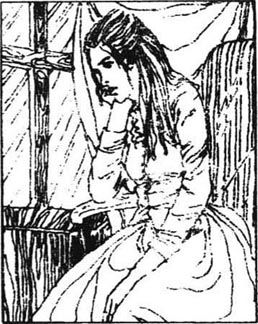
她往身后看了看，发现一辆马车正朝着她爬过的同一座山驶上来，车上有一个人在赶着马。很快他就赶上了她。
“为什么你要这样偷偷地溜走？”德伯上气不接下气地问道，“为了追上你，我像疯了似地赶车。看看我的马吧！你知道没有人会阻止你走的。如果你不愿和我回去的话，剩下的路让我送你走。”
“我不愿回去。”她轻轻地说。
“我知道你会这么说的！那好，让我帮你上车吧，把篮子递给我。”
她登上马车，坐在他身旁。现在她已经不怕他了。不怕的原因也正是她痛苦的原因。车子往前驶着，德伯说着话，苔丝想着自己的心事。当他们临近马勒特村时，一滴泪珠从她的面颊上滚落下来。
“为什么要哭？”他冷冷地问道。
“我只是在想，我出生在那儿。”
“嗯，我们都是在某个地方出生的。”
“我希望我从没出生过，不论是在那儿还是在别的任何地方！”她轻声说。
“哦，如果你不愿意你就不应该到纯瑞脊来。反正，你也不是因为爱我才来的。”
“一点儿不错。如果我曾经爱过你，如果我仍然爱着你，我就不会像现在这么恨自己的软弱无能了。”
他没有看她。
她继续说道：“当我明白了你的企图时，已经太晚了。”
“每个女人都这么说。”
“你怎么敢这么说！”她愤怒地叫道，眼冒怒火地瞪着他。“天哪，我会揍你的！难道你从没想过，有些女人不仅这么说，还真地这样感觉吗？”
“好吧，”他笑着说，“伤害了你我很抱歉。我做错了事——我承认。只是不要再没完没了地谴责我了。我是准备付出代价的，你再也不用到农场干活了。”
她的嘴唇稍稍撅起，回答道：“我不会从你那儿拿任何东西的！我不会的！”
“人们会认为你是个王后，就像认为你是一个真正的德伯家族的人一样！哦，亲爱的苔丝，我想我大概是个坏人。我一直是个坏人，将来也一直会是。但是我保证再也不对你做什么坏事了。如果有任何事情发生——你明白——如果你遇到任何麻烦或需要任何东西，来封短信就行了，我会送来你想要的任何东西。”
她从车上迈下来，正准备离他而去，他拦住了她，说道：“亲爱的，你不会就这样离开我了，是吗？来，让我吻你一下！”
“如果你想这样的话，”她漠然地答道。她向他仰起了冰凉的脸颊，目光却停留在远处的一棵树上，仿佛这亲吻跟她丝毫不相干似的。
“你没有把你的唇递过来，苔丝。恐怕你永远不会爱上我。”
“是的，我从来没有爱过你，也永远不会爱上你。”她又伤心地加上一句：“也许我该撒个谎，这样我的日子就会好过了。但是我还有足够的自尊，不撒那个谎。如果我爱过你，我会有很好的理由告诉你，但是我没有。”
亚历克沉重地叹了口气，好像这一席话令他很沮丧。
“嗨，苔丝，你很伤心。你这样是没有理由的。你仍是方圆数里内最漂亮的姑娘。你愿意回到我身边吗？说你愿意！”
“不，不愿！我已经下定决心了，永远不会回去的。”
“那么，再见！”亚历克跳上马车，驾车走了。
苔丝没有看着他离开，只管一个人继续走着。现在还很早，太阳射出的光芒尚未有一丝暖意。悲凉的秋意笼罩着她，而她觉得自己的内心更加哀伤。
但很快有个人从她后面赶了上来，手里提着一罐红色的颜料。
“早上好！”他说，并提出帮她提篮子。“你在星期天起得可够早的。”他继续说道。
“是啊，”苔丝说。
“这是大多数人休息的日子。但我在这一天做的真正工作，比一星期的其余六天加在一块儿还多。”
“是吗？”
“别的日子我为人们工作，但星期天我为上帝工作。这是一种更好的工作，你不觉得吗？等一下，在这儿我有点儿事要做。”他在一个大门前停了下来，并用很大的红字在门中间的栏杆上刷上《圣经》中的几个字：
惩罚等着你
在柔和的空气里，在嫩绿的树木和宁静的田野的包围中，这些大红字在盯着苔丝，它们在指责她。刷字的只不过是个陌生人，他并不知道她的经历，但这些红字在谴责她。
“你相信你刷的那些话吗？”苔丝轻轻地问道。
“你问我相信那些话吗？就跟相信我活着一样！”
“但是，”她的声音很低，有些发颤，“假如你是被迫做错了事呢？”
他摇了摇头：“我无法回答这个问题。我刷写这些话是留给人们用他们自己的心灵去思考的。”
“我认为这些话很可怕！”苔丝喊道。“给我篮子吧，我要走了。”她从他身边走开了，心在剧烈地跳动着。当她到达村子时，她想：“我相信上帝是不会那样说的！”
家里的烟囱冒着烟，但屋子里面的情景让她觉得心痛。这儿还像过去一样贫穷。见到她，母亲觉得很奇怪，急忙站了起来。
“哦，我亲爱的苔丝！”她一边说，一边吻着她。“你好吗？你是要回来结婚的吗？”
“不，不是为那个，妈。”
“什么，难道你表哥不打算跟你结婚吗？”
“他不是我的表哥，他也不会跟我结婚的。”
她的母亲关切地看着她。“过来，你还什么都没跟我说呢。”
苔丝走近母亲，把自己的头靠在琼的肩上，把事情的来龙去脉都告诉了她。
“而你没有说服他跟你结婚！”琼叫道，“那去那儿有什么好处？你为什么不能想想为家里做点儿好事，而不是只考虑你自己呢？”
苔丝很迷惑。亚历克从来没有提过要跟她结婚。而即便他提过，她也永远不会接受他的，因为她不爱他。这一点让她为自己所做的事而恨自己。将来她当然也不会爱上他的。她并不十分痛恨他，但她不想跟他结婚，哪怕是为了维护自己的尊严。
“如果你不愿嫁给他，你就应该更小心才是！”
“哦，妈妈！”可怜的女孩哭道，她的心碎了。“为什么以前你没警告我要提防男人？我离开家的时候还只是一个孩子！我不知道他们会有多危险，你并没有告诉我！”
“嗯，我们必须尽量往好处想。”她母亲说，“毕竟，这只不过是人类的天性。”
那天下午，小屋里坐满了苔丝的朋友。她不在的时候，这些村里的姑娘们都非常想她。她们在私下里互相说，苔丝一定会嫁给那位英俊的先生的。很幸运，苔丝没有听到她们说的话。她加入到她们的欢声笑语中，在这段短暂的时间里，她几乎忘却了自己的耻辱。
但第二天就是星期一了，一周的工作又开始了。这天人们不会穿最好的衣服，也不会有人拜访。苔丝在一群睡在她身边的天真无邪的孩子们中醒来，她自己却已失去了贞节。想到今后的日子，她变得非常忧郁。她知道她要走上一段漫长、坎坷的旅程，得不到帮助也得不到同情。她对未来心灰意冷，她想死去。
然而接下来的几个星期，她变得稍稍振作一点了。一个星期天的上午，她去了教堂。她喜欢听那些熟悉的旋律，沉浸在那美妙的音乐中。她对作曲家的力量感到惊叹。他虽已在坟墓当中，却能让一个像她这样与他素不相识的姑娘感受无限的激情。她坐在一个安静、黑暗的角落里，倾听基督仪式和音乐。但是当村子里的人们来到教堂后，他们注意到了她并窃窃私语起来。她知道他们在说什么，同时知道自己今后再也不能来教堂了。
因此，她把自己整天关在这间与其他孩子们共有的卧室里。在这儿，她看刮风，看下雪，看雨点飘洒，看美丽的日落，还有一轮又一轮的满月。人们渐渐以为她外出了。只有在天黑以后，她才会出来，到树林里和田野上走走。她不怕黑暗和阴影，她极力想避开的只是人群。在孤寂的山上她感到自在，但被纯净的大自然包围时，她又有一种负罪感。下雨时，她会想到是大自然在为她的软弱而哭泣；而午夜的狂风又让她觉得大自然在生她的气。她没有意识到，虽然她触犯了一条公认的社会戒律，但她却从没违反过自然。她就像树林里熟睡的鸟儿或树篱下的田间小动物一样清白无辜。
chapter-a135_ 7
Chapter 7
One day in August the sun was rising through the mist. In a yellow cornfield near Marlott village it shone on two large arms of painted wood. These, with two others below, formed the turning cross of the reaping-machine. It was ready for today's harvest. A group of men and a group of women came down the road at sunrise. As they walked along, their heads were in the sun while their feet were in the shadow of the hedge. They went into the field.
Soon there came a sound like the love-making of the grasshopper. The machine had begun, and three horses pulled it slowly along the field. Its arms turned, bright in the sunlight. Gradually the area of standing corn was reduced. So was the living space of the small field animals, who crowded together, not knowing that they could not escape the machine in the end.
The harvesters followed the machine, picking and tying up bundles of corn. The girls were perhaps more interesting to look at. They wore large cotton hats to keep off the sun, and gloves to protect their hands from the corn. The prettiest was the one in the pale pink jacket, who never looked around her as she worked. She moved forward, bending and tying like a machine. Occasionally she stood up to rest. Then her face could be seen: a lovely young face, with deep dark eyes and long heavy curling hair. Her cheeks were paler, her teeth more regular, and her red lips thinner than most country girls.
It was Tess Durbeyfield, or d'Urberville, rather changed, living as a stranger in her home village. She had decided to do outdoor work and earn a little money in the harvest.
The work continued all morning, and Tess began to glance towards the hill. At eleven o'clock a group of children came over the hill. Tess blushed a little, but still did not pause in her work. The eldest child carried in her arms a baby in long clothes. Another brought some lunch. The harvesters stopped work, sat down and started to eat and drink.
Tess also sat down, some way from the others. She called the girl, her sister, and took the baby from her. Unfastening her dress, and still blushing, she began feeding her child. The men kindly turned away, some of them beginning to smoke. All the other women started to talk and rearrange their hair. When the baby had finished Tess played with him without showing much enthusiasm. Then suddenly she kissed him again and again, as if she could not stop. The baby cried out at the violence of her kisses.
'She loves that child, though she says she hates him and wishes they were both dead,' said one of the women, watching the young mother.
'She'll soon stop saying that,' replied another. 'She'll get used to it. It happens to lots of girls.'
'Well, it wasn't her fault. She was forced into it that night in The Chase. People heard her sobbing. A certain gentleman might have been punished if somebody had passed by and seen them.'
'It was a pity it happened to her, the prettiest in the village. But that's how it happens! The ugly ones are as safe as houses, aren't they, Jenny?' and the speaker turned to one who was certainly not beautiful.
Tess sat there, unaware of their conversation. Her mouth was like a flower, and her eyes were large and soft, sometimes black, blue or grey, sometimes all three colours together. She had spent months regretting her experience and crying over it, but suddenly decided that the past was the past. In a few years her shame, and she herself, would be forgotten. Meanwhile the trees were just as green, and the sun shone just as brightly, as before. Life went on.
She most feared what people thought of her, and imagined that they talked constantly about her behind her back. In fact she was not often discussed, and even her friends only thought about her occasionally. Other things of more importance took up their time. If there had been no people around her, Tess would not have made herself so unhappy. She would have accepted the situation as it was. She was miserable, not because she felt unhappy, but because she imagined herself rejected by society.
Now she wanted to be useful again, and to work. So she dressed neatly, and helped in the harvest, and looked people calmly in the face, even when holding her baby in her arms.
Having eaten her lunch quickly, Tess went back to work with the harvesters in the cornfield until it was dark. They all came home on one of the largest waggons, singing and laughing together.
But when Tess reached home, she discovered that the baby had fallen ill that afternoon. He was so small and weak that illness was to be expected, but this still came as a shock to Tess. She forgot the shame surrounding his birth, and only wished passionately to keep him alive. However, it became clear that he was dying. Now Tess had a greater problem. Her baby had not been baptized.
Her ideas on religion were not very developed. She had more or less accepted that she would go to hell for her crime, and did not much care what would happen to her after death. But for her baby it was different. He was dying, and must be saved from hell.
It was nearly bedtime, but she rushed downstairs and asked if she could send for the parson. Her father had just returned from the public house, and was at his most sensitive to the shame brought upon his noble name by Tess. He refused to allow the parson in, and locked the door.
The family went to sleep. As the night passed, Tess realized, in great misery, that the baby was close to death. She walked feverishly up and down the room, until an idea came to her.
'Ah! Perhaps baby can be saved! Perhaps it will be just the same!'
She lit a candle, and woke her young brothers and sisters. Having poured some water into a bowl, she made them kneel around, with their hands together as in church. The children were hardly awake and watched Tess with big round eyes.
She looked tall in her long white nightdress, her long dark hair hanging down her back to her waist. Her enthusiasm lit up her face, giving it a beautiful purity—the face which had caused her shame.
She picked up the baby. One of the children asked, 'Are you really going to baptize him, Tess? What's his name going to be?'
She had not thought of that, but remembered the story of Adam and Eve in the Bible. Because they did wrong together, God said they would live in sorrow for the rest of their lives.
She said firmly, 'SORROW, I baptize you in the name of the Father, and of the Son, and of the Holy Ghost.'
She splashed some water on the child, and there was silence.
'Say Amen, children.'
'Amen,' they replied.
Tess put her hand into the water, and drew a huge cross upon the baby with her finger. She continued the service in the well-known words, asking for the baby to be protected against the world and against wickedness. Her belief gave her hope; her sweet warm voice rang out the thanks that follow the baptism. The single candle was reflected in her shining eyes like a diamond. The children asked no more questions, but looked up at her in amazement. She seemed almost like a god to them.
Poor Sorrow's fight against the world and wickedness was a short one, fortunately perhaps, taking into account his situation. In the blue light of the morning he breathed his last. Tess had been calm since the baptism and she remained calm. She was no longer worried about Sorrow's afterlife. If God did not accept the baptism, she did not value His Heaven, either for herself or for her child.
Tess thought a good deal about the baptism, however, and wondered if it might mean that Sorrow could be buried in the churchyard, with a church service. She went to the parson's house after dark, and met him near his gate.
'I should like to ask you something, sir. My baby was very ill, and I wanted you to baptize him, but my father refused to allow it. So I baptized him myself. Now sir, can you tell me this,' and she looked him straight in the eyes, 'will it be just the same for him as if you had baptized him?'
The parson wanted to say no. She had done what should have been his job. But the girl's strong feeling impressed him. The man and the parson fought inside him, and the man won.
'My dear girl,' he said, 'it will be just the same.'
'Then will you bury him in the churchyard?' she asked quickly.
The parson felt trapped. It was a difficult question to answer. 'Ah, that's a different matter,' he said. 'I'm sorry, I cannot.'
'Oh sir!' She took his hand as she spoke.
He took it away, shaking his head.
'Then I'll never come to church again!' she cried. 'But perhaps it will be the same for him? Tell me, have pity on me, poor me, tell me what you really think!'
The parson was deeply touched by her emotion. For a surprising moment he forgot the strict rules of his church.
'It will be just the same,' he answered kindly.
So the baby was carried in a cheap wooden box to the churchyard at night. There is a corner of the churchyard where the grass grows long, and where the suicides, drunks, unbaptized babies and other supposed criminals are laid. Sorrow was buried here, at the cost of a shilling and a pint of beer for the gravedigger. Tess bravely made a little cross and put it at the head of the grave one evening, when she could enter the churchyard without being seen.
It is all very well saying that we learn from experience. Tess had certainly learnt from experience, but could not see how to use her knowledge, so painfully gained.
So she stayed in her parents' home during the winter, helping to look after the children, making clothes for them and earning a little money whenever she could. Important dates came round again: the night of her shame in The Chase, the baby's birth and death, her own birthday. One day when she was looking at her pretty face in the mirror, she thought of another date, even more important—her own death. When it came it would swallow up all her prettiness and everything that had happened to her. When was it? It was a day lying hidden among all the other days of the year, so that she noticed nothing when it came round, and did not know what week, month, season or year it would be.
In a flash Tess changed from simple girl to complicated woman. Her face was often thoughtful, and there was sometimes a tragic note in her voice. Her eyes grew larger and more expressive. She became a beautiful woman. She had suffered, but had gained a certain self-confidence from her experiences.
Although the village people had almost forgotten her trouble, she decided she could never be really happy in Marlott. Trying to claim relationship with the rich d'Urbervilles seemed so foolish and shameful to her. She thought her family would never be respected there again. Even now she felt hope rise within her, hope of finding a place with no family connections and no memories. In escaping from Marlott she intended to destroy the past. Perhaps now she could make up for her crime against society.
Consequently she looked hard for work away from Marlott. She finally heard that a dairyman some miles to the south needed a good milkmaid for the summer. Having decided to go there, she promised herself there would be no more hopeless dreams. She would simply be the dairymaid Tess, and nothing more. Even her mother no longer talked about their connection with the noble d'Urbervilles.
But in spite of Tess's decision to forget her ancestors, the dairy, called Talbothays, especially attracted her because it was near the former lands of the old d'Urberville family. She would be able to look at them, and not only observe that the noble d'Urberville family had lost its greatness, but also remember that a poor descendant had lost her innocence. She wondered if some good might come of being in the land of her ancestors. Hope and youthful energy rose up in her again, like leaves on a young tree in spring.
mist n. water vapour in the air. 雾。
shadow n. area of shade thrown on the ground by sth which cuts off the direct rays of light. 阴影。
bend v. bow. 弯腰。
rather adv. in a certain degree or measure. 相当地。
harvest n. (season for) cutting and gathering in of grain and other food crops. 收获季。
unfasten v. untie or not join together. 松开。
safe adj. free from danger. 安全的。
experience n. event that affects one in some way. 经历；阅历。
constantly adv. continuously; frequently. 经常地；不断地。
miserable adj. very unhappy. 愁苦的。
problem n. question to be solved or decided, especially sth difficult. 难题。
baptize v. give baptism to (sb). 给（某人）施洗礼。
religion n. belief in the existence of a supernatural ruling power. 宗教信仰。
feverish adj. having symptoms of fever. 发烧的。
enthusiasm n. strong feeling of admiration or interest. 热心。
sorrow n. (cause of) grief or sadness; regret. 悲哀；悔恨。
splash v. cause (a liquid) to fly about in drops. 溅（水等）。
wickedness n. sth bad, wrong, immoral. 邪恶。
diamond n. brilliant precious stone of pure carbon in crystallized form, the hardest substance known. 钻石。
fortunate adj. lucky. 运气好的。
remain v. continue to be. 依然。
allow v. permit. 允许。
trap v. capture by a trick. 使落入圈套。
strict adj. demanding obedience or exact observance. 严格的。
criminal n. person who commits a crime or crimes. 罪犯。
painful adj. causing pain. 痛的。
mirror n. polished surface that reflects images. 镜子。
swallow v. take in. 吞没。
complicated adj. made up of many parts. 复杂的。
escape v. get free. 逃脱。
connection n. connecting or being connected. 连接。
第七章
第七章
8月的一天，太阳正从薄雾中缓缓升起。在马勒特村附近的一片金黄的麦地上，阳光正照射着两根漆过的木头。这两根，加上下面的两根，就组成了割麦机上转动的十字形曲柄。这是在为今天的收割做准备。日出时分，一群男人和女人沿着大路走来了。他们的脸沐浴在阳光中，脚则落在了树篱的阴影里。他们走进了麦地。
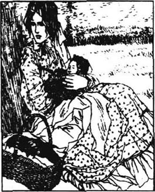
很快传来一种蚱蜢求爱时发出的声音。机器开始运转了。有三匹马拉着它慢慢地往前开。机器的曲柄转动着，在阳光下闪闪发光。渐渐地，麦地里竖着麦子的部分减少了。田间小动物们的生存空间同样也就减少了。它们簇拥在一起，并不知道它们终究是无法从机器下逃生的。
收割者们跟着机器走，把麦子拾起并扎成一捆一捆。也许姑娘们看起来更有趣了。她们戴着宽边的棉布帽子以免阳光灼伤了脸，还戴着手套以防麦子刮破了手。其中最漂亮的要数那位穿着浅粉色短外套的姑娘。她干活时从不四处张望。她朝前面移动着，俯身捆扎，就像一台机器。偶尔她站直身子歇一会儿，这时你就可以看见她的脸了：这是一张年轻可爱的脸庞，嵌着一双幽深的眼睛。她还有一头又长又密的卷发。比起大多数乡下姑娘来，她的脸色更白晰，她的牙齿更整齐，她的红唇也更薄一些。
这就是已经有了很大变化的苔丝·德北或德伯。在家乡的村子里，她就像一个陌生人一样生活着。她已决定到户外干点活儿，在收割季节挣一点微薄的收入。
整个上午活儿就没停过，苔丝开始朝山那边不时地瞅上一眼。11点钟的时候，一群孩子翻山过来了。苔丝微微有些脸红，但仍没有停下手里的活计。最大的孩子怀里抱着一个裹着长衣服的婴儿，另一个提着午饭。人们停止了收割，坐下来，开始吃饭喝酒。
苔丝也在距人们有点远的地方坐了下来。她唤来那个女孩，她的妹妹，从她手中抱过来婴儿。她仍然有些脸红，解开衣服开始给孩子喂奶。男人们都善意地转过脸去，有些人开始抽起了烟。其他的女人都开始聊天，一边重新梳理她们的头发。把孩子喂饱了以后，苔丝逗着孩子玩，显露不出什么热情。然后她突然一遍又一遍地亲吻孩子，仿佛停不下来似的。孩子被她猛烈的亲吻吓得大哭起来。
“她爱那个孩子，尽管她说她恨他，希望他们娘俩都死了算了。”一个女人望着这个年轻的母亲，说道。
“她很快就会不再这么说啦。”另一个回答道，“她会习惯的，很多姑娘都有过这种经历。”
“但这不是她的错。那天晚上在逐猎林，她是被迫的。有人听到她哭诉过。如果那晚有人经过看到他们的话，某位先生是要遭到惩罚的。”
“这事儿发生在她身上真可惜了，她是村子里最漂亮的姑娘。不过正因为如此，才会发生这种事情！那些难看的姑娘就跟房子一样安全，是吗，珍妮？”说话的人朝一位显然不漂亮的姑娘问道。
苔丝坐在那儿，不知道她们在谈什么。她的小嘴像鲜花一般可人，她的大眼睛充满了柔情。那眼睛有时是黑的、蓝的或是灰的，有时就是这三种颜色的混合体。她花了几个月的时间为自己的经历悔恨哭泣，但突然间她决定让过去的事情成为过去。用不了几年，她的耻辱连同她本人就会被人们遗忘。树木仍像过去一样翠绿，阳光还同从前一样明媚。生活继续着。
她最怕人们会想起她，还想象他们会在背后不停地谈论她。事实上，她并没有经常被议论，就连她的朋友，也不过偶尔才会想起她。其他一些更重要的事情占据着他们的生活。如果她周围没有人，苔丝也就不会把自己弄得这么不快乐了。她会现实地接受她的处境。她很不幸，不是因为她觉得不快乐，而是因为她总想象自己被社会抛弃了。
现在，她想让自己重新变得有用，想去工作。所以她穿戴整齐，在收割季节来帮忙。她以平静的表情面对其他人，即便怀里抱着孩子也一样。
迅速地吃完午饭后，苔丝又回到地里和其他收割者们一块儿干起活儿来，一直干到天黑。他们都坐上一辆最大的马车，一路笑着唱着回去了。
但是当苔丝回到家以后，她发现孩子在那天下午生病了。他是那么地弱小，注定逃不过病魔之手，但这仍然震动了苔丝。她忘记了关于他出生的种种耻辱，只是满心希望他能活下来。然而很明显，他就要死了。现在苔丝遇到了一个更大的麻烦，她的孩子还没受过洗礼呢。
她的宗教信条没有多大的变化。她或多或少地接受了这样一个事实：因为她的罪过她将进地狱。她对自己死后会怎样并不太在意，但是对孩子来说，就不同了。他就要死去，她要把他从地狱中拯救出来。
已经到了快睡觉的时候，但她冲到了楼下问自己是否可以去请一位牧师来。她的父亲刚从酒店回来，正处在对苔丝给他高贵的姓氏带来的耻辱最敏感的时候。他拒绝让牧师到他们家来，还把门给锁上了。
家人都去睡觉了。夜晚一点点地流逝着。在极大的痛苦中，苔丝意识到孩子已离死神不远了。她焦躁不安地在房间里踱来踱去，最后她突然想出了一个主意。
“啊！也许孩子可以得救！也许这也是一样的！”
她点燃了一支蜡烛，唤醒了弟妹。她在一个碗里倒了些水，让他们跪成一圈，像在教堂里那样手牵着手。孩子们还没有完全清醒过来，只是瞪圆了眼睛看着苔丝。
穿着长长的白色睡裙，她看起来很高，黑色的长发从背后一直垂到腰际。她的热情使她的面孔焕发着光彩，透出一种美丽的圣洁——就是这张脸给她招来耻辱。
她抱起了婴儿。一个孩子问：“你真要给他施洗礼吗，苔丝？那他叫什么名字呀？”
她还没想过这个，但她记起了《圣经》里亚当和夏娃的故事。因为他们在一起做错了事，上帝说他们余下的日子会生活在悲哀之中。
她坚定地说：“‘悲哀’，我以上帝、以耶稣、以圣灵的名义给你施洗。”
她把一些水洒在孩子身上，四周悄无声息。
“说阿门，孩子们。”
“阿门。”他们说道。
苔丝把手伸进水里，然后用手指在婴儿身上画了一个大大的十字：她用一些熟悉的话语继续进行着这个仪式。她请求让孩子免受尘世和邪恶的侵扰。她的信念给了她希望；她用甜美温和的声音做感恩祷告，结束了洗礼。那枝仅有的蜡烛在她闪烁的眼睛中放射出钻石般的光芒。孩子们没再问什么，只是诧异地抬头望着她。对他们来说，她看起来就像一位女神。
可怜的“悲哀”只对这个世界和邪恶做了一次小小的抗争，考虑到他的处境，也许他这样是幸运的。在蓝色的晨光中，他停止了呼吸。做完洗礼后，苔丝平静下来，而且一直保持着平静。她再也不用为“悲哀”死后担心了。如果上帝不接受这个洗礼，那她就不会珍视他的天堂，不论是为自己还是为孩子。
但是苔丝还是对这个洗礼考虑了很多，她想知道这是否意味着“悲哀”可以按照教堂的仪式安葬在教堂墓地。天黑以后，她就到牧师家去了，在大门附近她遇见了牧师。
“先生，我想请教您一件事情。我的孩子病得很重，我想让您给他施洗，但是我的父亲不让我这么做。于是我自己给他施了洗。现在，先生，您是否能告诉我，”她两眼直直地看着他，“对他来说，这么做跟您给他施洗是一样的吗？”
牧师想说不一样。她做了他份内的事。但是这姑娘炽烈的感情让他感动。在他内心，作为人和作为牧师的两种角色在斗争着，最后，人取得了胜利。
“我亲爱的姑娘，”他说，“这会是一样的。”
“那你会将他安葬在教堂墓地吗？”她迅速问道。
牧师觉得陷入了圈套。这是一个很难回答的问题。“哦，那是另外一回事，”他说，“抱歉，我不能。”
“哦，先生！”她抓住他的手，说道。
他把手拿开了，摇了摇头。
“那么，我再也不去教堂了！”她哭道，“但也许对他来说是一样的？告诉我，可怜可怜我，告诉我您真实的想法！”
牧师被她的情绪深深地感染了。有一刻，他竟然忘记了教堂里那些严格的戒律。
“会是一样的。”他善意地回答道。
因此，当晚孩子被装在一个廉价的木制箱子里，运到了教堂墓地。这是一个杂草丛生的墓地角落，埋葬着那些自杀的人，饮酒过度的人，没有施过洗的婴儿，还有其他被认为有罪的人。她花了一个先令，给了掘墓人一品脱啤酒，“悲哀”便被葬在了这里。一天晚上，当她可以不被人看到地进入墓地时，苔丝做了一个小小的十字架，并把它竖在了坟头。
有句话说得好，叫“吃一堑，长一智。”苔丝当然从她的经历中学到了东西，只是不知道该怎样运用这些经历了如此之大的痛苦才懂得的道理。
于是，整个冬天她都住在父母家里，帮着照看孩子，给他们缝制衣服，并力所能及地挣点钱。一些重要的日子又转回来了：逐猎林受辱的那晚，孩子的生日和忌日，还有她自己的生日。一天，当她对着镜子看自己那张漂亮的脸孔时，她想到了另外一个甚至更重要的日子——她自己死去的日子。当它来临时，它会吞噬掉她的全部美丽和发生在她身上的一切事情。它会是什么时候呢？它偷偷地藏在一年中其他日子的背后，因此当它再度来临时，她无从察觉。她不知道它将出现在哪个星期，哪个月，哪个季节或者哪一年。
几乎仅在一瞬之间，苔丝就由纯朴的姑娘变成了成熟的女人。她经常带着一副沉思的表情，声音有时透着悲凉的语气。她的眼睛更大也更意味深长了。她变成了一个美丽的女人。她经历过痛苦，从经历中她获得了一种自信。
尽管村里的人们几乎已经忘记了她的遭遇，但苔丝觉得自己在马勒特是不会真正快乐的。在她看来，想要与富有的德伯家攀亲是那么地荒唐可耻。她认为她的家庭在那儿再不会受到尊敬了。她现在心里甚至萌生了希望。这希望就是找一个既没有家庭关系也没有回忆的地方。她想逃离马勒特村，企图由此毁灭过去。也许现在她可以弥补她对社会犯下的罪行了。
接下来她就积极地寻找远离马勒特村的工作。终于，她听说往南几英里的一个奶场主这个夏天需要一名熟练的挤奶女工。她决定去那儿，并向自己保证不再做空洞的梦。她将仅仅是挤奶女工苔丝，仅此而已。就连她的母亲也不再谈论他们与高贵的德伯家族的关系了。
但是，尽管苔丝决意忘掉她的祖先，那个叫塔尔勃塞的牛奶场之所以特别吸引她，却正是因为它挨着古老的德伯家族的土地。她可以看到它，这样，她不仅可以看到高贵的德伯家族失去了它的辉煌，还会记起它的一个可怜的后代失去了她的贞操。她想知道，生活在她祖先的土地上是否能给她带来一些好运。新的希望和青春的活力再度在她心中涌起，就像春天小树上的新叶。
chapter-a135_ 8 A New Life
A New Life
Chapter 8
And so it was that on a beautiful morning in May, two to three years after her return from Trantridge, Tess Durbeyfield left home for the second time. She was going in the opposite direction this time. When she reached the first hill, she looked back at Marlott and her father's house with sadness in her heart.
She travelled partly by carriage and partly on foot, carrying her basket. Not far to her left she could see the trees which surrounded Kingsbere, with its church where her ancestors lay in their tombs. She could no longer admire or respect them. She almost hated them for ruining her life. Nothing of theirs was left except the old seal and spoon.
'Huh! I have as much of mother as father in me!' she said. 'All my prettiness comes from her, and she was only a dairymaid.'
Her walk took two hours, until she reached the hill overlooking the Valley of the Great Dairies. This valley was watered by the river Froom, and produced huge amounts of milk and butter: more even than Tess's Vale of Blackmoor, which was known as the Vale of Little Dairies.
As she stood and looked, she realized the valleys were quite different. Here the fields and farms were much larger. She saw more cows at a glance than she had ever seen before. The evening sun shone on their red, white and brown bodies. She thought that this view was perhaps not as beautiful as a view of Blackmoor Vale, which she knew so well. There the sky was deep blue, the smell of the earth was heavy in the air, the streams ran slowly and silently. But this view was more cheerful. Here the air was clear and light, and the river Froom rushed as fast as the shadow of a cloud.
Either the change in the quality of the air, or the feeling that she was going to start a new life here, made her feel much happier. She ran along, her hopes and the sunshine warming her.
She looked at her best as she ran laughing into the warm wind. The desire for pleasure, which is in every living thing, had finally won over Tess. She was, after all, only a young woman of twenty, who had not finished growing up. No event, however unpleasant, could have marked her for ever. She was young and strong and beautiful, and could not remain sad for long.
Her hopes rose higher than ever. She wanted to show how grateful she was for this second chance. She started singing love songs, but found they were not enough to express her feelings. She remembered the Sunday mornings of her girlhood, and sang: 'Oh sun and moon... Oh stars... Oh children of men... Praise the Lord! Praise Him for ever!' until she stopped suddenly and murmured, 'But perhaps I don't quite know the Lord yet.'
This was probably a pagan feeling in a religious form. People who live in the country and are close to nature, like Tess, keep many of the pagan ideas of their ancestors in their souls. Religion learned in church comes much later, and does not touch them deeply.
Tess was happy to be making her way independently in life. She really wanted to live honestly and work hard, unlike her father. Tess had her mother's energy and the energy of her youth to help her recover from her experience. Women do usually live through such experiences. 'Where there's life, there's hope' is still true for most 'betrayed' women.
As Tess, full of enthusiasm, came downhill towards the dairy, she suddenly heard the milking call, again and again, from all parts of the valley. It was half-past four, when the dairy people brought in the cows. Tess followed the red and white animals, with their great bags of milk under them, into the farmyard. She saw the long sheds, and the wooden posts, shining and smooth where the cows had rubbed against them over the years. She saw the cows between the posts, the sun throwing their shadows on the wall as carefully as a painter paints a beautiful king or queen. As the cows waited for their turn, the milk fell in drops on the ground.
The dairymaids and men had come from their cottages as they saw the cows arriving from the fields. Each girl sat on her three-legged stool as she milked, her right cheek resting on the cow's body, watching Tess arrive. The men milked with their hats low over their eyes and did not see her. One of them was a middle-aged man, the head-dairyman she was looking for. He worked six days a week in his white milking clothes, milking and butter-making, and on the seventh he wore his best suit to take his family proudly to church. Because of this people nearby used to say:
Dairyman Dick
All the week,
On Sundays Mister Richard Crick.
Most dairymen are usually bad-tempered at milking time, but Mr Crick was glad to get a new dairymaid at this busy time of the year. So he received Tess warmly and asked her how her family were.
'When I was a boy I knew your part of the country very well,' he said. 'An old woman of ninety—she's dead now but she used to live near here—she once told me there was an ancient noble family of a name like yours, who came from here originally. But I didn't take any notice of an old woman like that.'
'Oh no, that's just a story,' said Tess.
Then Mr Crick turned to business. 'You can milk well, my girl? I don't want my cows drying up, especially just now.'
'Oh yes, I can,' answered Tess.
He Looked at her delicate hands and pale face.
'Quite sure you're strong enough for this sort of life? It's comfortable enough here for rough country people but it's hard work.'
'Oh yes, I'm strong enough. I'm used to hard work,' Tess insisted.
'Well, have some tea and something to eat. You've had a long journey,' he said kindly.
'No, I'd rather begin milking straight away,' said Tess. 'I'll just drink a little milk first.'
This surprised Dairyman Crick, who appeared never to have thought of milk as a drink.
'Oh, if you can swallow it, have some,' he said, holding the bucket for her to drink from. 'I haven't touched any for years. It would lie in my stomach like a stone, so it would. Now, try that one and see how you get on.' And he pointed to the nearest cow.
As soon as Tess was on her stool under the cow, and the milk was pouring between her fingers into the bucket, she really felt that her new life was beginning. As she relaxed, she looked around her.
It was a large dairy. There were nearly a hundred milking cows. Dairyman Crick milked six or eight of the difficult ones with his own hands. He could not trust them to the dairymaids, because if the cows were badly milked their milk would simply dry up.
For a while there was no more talk among the milkers. Suddenly Mr Crick got up from his stool.
'We're not getting as much milk from them as usual,' he said. 'We'd better sing them a song, friends, that's the only thing to do.' So the group of milkers started singing, to encourage the cows to give more.
Mr Crick went on, 'But I think bulls like music better than cows. Did I tell you all about William Dewy? On his way home after a wedding he found himself in a field with an angry bull. He took his violin and played some Christmas church music and down went the bull on his knees! Just like the animals around baby Jesus! And so William was able to escape.'
'It's a curious story. It takes us back to the past, when belief in God was a living thing.' This unusual remark came from under a cow.
'Well, it's quite true, sir, believe it or not. I knew the man well,' said Mr Crick.
'Oh yes, I'm sure it's true,' said the man behind the brown cow. Tess could not see his face, and could not understand why the head-dairyman himself should call him sir. The man stayed under the cow long enough to milk three, at times saying something angrily to himself. Then he stood up, stretching his arms. Tess could now see him clearly. He wore the clothes of a dairyman but underneath he was quite different. He looked educated and gentlemanly.
But now she realized that she had seen him before. He was one of the three walking brothers who had stopped their walk to admire the May-Day dance in Marlott a few years before. He had danced with some of the other girls but not with her. He had not noticed her and had gone on his way. For a moment she was worried that if he recognized her he might discover her story. But she soon saw he did not remember her at all. Since she had seen him in Marlott, his face had grown more thoughtful. He now had a young man s moustache and beard. From the time he had spent milking one cow, he was clearly a beginner at dairy work.
Tess discovered that only two or three of the dairymaids slept in the house, besides herself. They all shared a big bedroom near the cheese room. That night one of the girls insisted on telling Tess about all the people at the dairy. To Tess, half asleep, the whispers seemed to be floating in the air.
'Mr Angel Clare—he's the one who's learning milking—he's a parson's son and thinks a lot and doesn't notice girls. His father is parson at Emminster, some way from here. His sons, except Mr Clare, are going to be parsons too.'
Tess gradually fell asleep.
opposite adj. entirely different; contrary. 完全不同的；相反的。
direction n. course taken by a moving person or thing. 方向。
glance n. quick look. 一瞥。
cheerful adj. bringing or suggesting happiness. 令人高兴的。
desire n. strong longing. 渴望。
pleasure n. feeling of being happy or satisfied. 快乐。
express v. make known, show by words, looks, actions. 表示；表达。
pagan adj. (person who is) not a believer in any of the chief religions of the world. 异教徒的。
betray v. be disloyal to. 不忠于。
shed n. building, roughly made structure, used for storing things, sheltering animals, etc. 棚；小屋。
stool n. seat without a back or arms, usually for one person. 凳子。
tempered adj. having, or showing a certain kind of temper. 有某种心情的。
ancient adj. belonging to times long past. 古代的。
originally adv. from or in the beginning. 原先。
delicate adj. tender. 细嫩的。
rough adj. not calm or gentle. 粗鲁的。
insist v. urge with emphasis, against opposition or disbelief. 坚持。
journey n. going to a place, especially a distant place. 旅行。
relax v. cause or allow to become less tight. 放松。
violin n. four-stringed musical instrument played with a bow. 小提琴。
curious adj. strange. 古怪的。
stretch v. make wider, longer or tighter, by pulling. 伸展。
share v. have or use (with). 共用。
float v. be held up in air. 漂浮。
第八章 新生活
第八章 新生活
因此，从纯瑞脊回来两三年后，苔丝·德北在5月的一个美丽的清晨，第二次离开了家。这一次她是朝相反的方向走去。当她爬上第一座小山时，她满怀忧伤地回头看了看马勒特村和她父亲的房子。
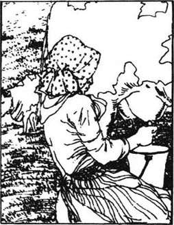
她挎着篮子坐了一段马车，又走了一段路。在她左边不远的地方，她可以看到环绕王陴的树木，她的祖先就被安放在那儿的教堂墓地里。她不再倾慕，也不再尊敬他们了。她甚至有些恨他们，因为他们毁掉了她的生活。除了印章和银匙，他们什么也没留下。
“嘿！妈妈给予我的同爸爸给予我的一样多！”她说道，“我的美貌都是从她身上继承下来的，而她只不过是个挤奶女工。”
她步行了两个小时，才来到了可以俯视大牛奶场的山头。福鲁姆河灌溉着这个山谷，这儿生产着大量的牛奶和黄油，甚至比苔丝家那边的黑荒野山谷还多。
她站定远眺，发现这儿的山谷截然不同。这里的田地和农场更广阔，而且她以前从来没有一眼望见过这么多的奶牛。夕阳照在它们红色、白色还有棕色的皮毛上。她觉得这儿的风景也许并没有黑荒野山谷美丽，她对那个山谷太熟悉了。那儿的天空湛蓝无比，空气中充满了泥土的气息，溪水总是寂静缓慢地流淌着。但是这儿的景致更让人欢欣鼓舞。这儿的空气清新怡人，福鲁姆河水流湍急，就像一片白云的影子匆匆掠过。
不管是空气质量的改变，还是她即将在此开始一种全新生活的感觉，都使她感到更加欢欣愉悦。她朝前跑去，她的希望和这儿的阳光温暖着她。
当她大笑着跑进柔和的微风时，她的样子呈现出前所未有的神采。那种对幸福的渴望，那种存在于每一个有生命的物体中的渴望，终于重新赢得了苔丝。毕竟，她还只是一个20岁的年轻女子，还没有完全长大成人。任何事情，不管它有多么不幸，都不会永远在她身上留下伤痕。她年轻健康、精力充沛而且美丽动人，她可以不再长久地悲伤了。
她从来没有像现在这样满怀希望。她想表达出自己对第二次机会的到来是如何地充满感激之情。她放声唱起了爱情歌曲，但觉得它们不足以表达她的感情。她回想起了少女时代礼拜日上午的情景，于是唱道：“哦，太阳和月亮……哦星星……哦，人类的孩子们……赞美上帝吧！永远地赞美他！”唱着唱着，她突然停下并自言自语道：“但也许我对上帝了解得还不够。”
这也许只是用宗教形式表现的非基督教的感情。像苔丝这样生活在乡村、贴近自然的人，在心灵里保留了许多源于他们的祖先的非基督教思想。而从教堂得来的宗教信仰要迟得多，并没有多么深刻地影响他们。
可以按自己的方式独立地生活让苔丝感到高兴。她真心愿意实实在在地生活并勤勤恳恳地工作，而不是像她父亲那样。苔丝有从母亲那儿获得的力量和自己年轻生命的力量来帮助她从过去的经历中恢复过来。女人们通常要经历这种生活。对多数被生活玩弄过的女人们来说，“哪儿有生活，哪儿就有希望”仍是一条不变的真理。
当苔丝热情洋溢地朝着牛奶场跑下山时，她突然听到了挤奶的号令，一遍又一遍地在山谷各个角落响起。现在是四点半，到了牛奶场的人们把牛赶回来的时候了。苔丝跟着这些红色或白色、身下垂着硕大乳房的动物，跑进了场院。她看见了一排长长的屋棚和一根根木桩，由于奶牛长年的摩擦，它们被蹭得油光发亮。她看见了木桩之间的一头头奶牛，阳光把它们的阴影投射到墙上，就像画家精心绘制的一幅美丽的国王或王后的画像。还没有轮到它们呢，有几滴牛奶已滴到了地上。
挤奶女工和男人们看到奶牛从地里回来了，就都从屋子里走了出来。挤奶时，每个女工都坐在一张三条腿的矮凳上，她们把右脸颊靠在牛的身子上，看到苔丝进来了。男人挤奶时压低帽子遮住了眼晴，没有注意到她。其中有一位中年男子，就是苔丝正在寻找的牛奶场主。他一礼拜六天天天穿着白色的挤奶服工作，挤奶，做黄油，到了第七天，他就穿上最好的衣服，带着全家人，体体面面地到教堂去做礼拜。由于这个缘故，附近的人们常说：
整个星期都是奶场工狄克，
星期日是理查德·克里克先生。
大多数挤奶工在挤奶时都脾气暴躁，但克里克先生很高兴在一年中的繁忙季节里迎来了一个新的挤奶女工。他热情地接待苔丝，还问了她家人的情况。
“当我还是一个孩子时，我对你们那个地方就非常熟悉。”他说道，“一位九十岁的老太太——她现在已经死了，但她过去住在这儿附近——曾经告诉过我，有一个同你的姓氏相像的古老高贵的家族，很早以前是这儿的人。可我没理会老太太说的话。”
“哦，不，那不过是一个故事罢了。”苔丝说。
然后克里克先生转到正事上：“你挤奶挤得好吗，我的孩子？我可不想看到我的牛不出奶，特别是在这个时候。”
“哦，是的，我能行，”苔丝回答。
他看了看她那双细嫩的手和有些苍白的脸。
“你确信你有足够的体力过这种生活吗？这儿的生活对强壮的乡下人来说够舒服的了，但活儿很累。”
“哦，是的，我有足够的体力。我已经习惯干重活儿了。”苔丝坚持说。
“那好，去喝杯茶，吃点东西。你刚刚走了这么长的路。”他和善地说。
“不，我宁愿立即开始挤奶，”苔丝说，“我先喝点儿牛奶就可以了。”
这让奶场工克里克感到惊讶，他仿佛从来没想过牛奶也能这么喝似的。
“哦，如果你喝得下，就喝吧，”他说，拿起了一个小桶让她喝。“我好几年没碰过它了。喝了它就像胃里放了块石头似的，是这样的。那么现在，你去挤那头牛，看看你干得怎样。”他指着最近的一头牛说道。
苔丝坐到了奶牛下面的凳子上，牛奶从她的指间流泄到桶里，她真地感觉到她的新生活开始了。在她歇息的空隙，她环顾了一下四周。
这是一个很大的牛奶场。有近一百头待挤的奶牛。奶场主克里克亲自挤六到八头不好挤的牛。他不放心把它们交给挤奶女工去挤，因为如果奶牛没被挤好，它们就会不出奶的。
有一阵子，挤奶工们没有声响。克里克先生突然从凳子上站了起来。
“我们今天挤的奶没有平常的多。”他说道，“我们最好还是给他们唱支歌吧，朋友们，只有这样啦。”于是这群挤奶工开始唱起歌来，想促使奶牛们出更多的奶。
克里克先生继续说道：“但我认为公牛比母牛更喜欢音乐。我跟你们讲过威廉·杜威的事吗？一次婚礼结束后，在回家路上的一块田地上，他遇上了一头愤怒的公牛。他拿出了小提琴，拉起一些圣诞节的教堂音乐，那头公牛居然跪下来了：就像围绕着小耶稣的动物那样！然后威廉就得以逃脱了。”
“这是一个奇特的故事。它把我们带回到过去的年代，那时对上帝的信仰是生动真实的。”有人从一头奶牛身下做出了这个不平常的论断。
“哦，这是完全真实的，先生，信不信由你。我跟那个人相当熟。”克里克先生说。
“哦，是的，我相信它是真实的，”那头棕色奶牛后面的人说道。苔丝无法看见他的脸，也不明白为什么牛奶场场主本人还要称呼他为先生。这人待在一头奶牛下面的时间足够让别人挤三头牛了，他还不时生气地自言自语。然后他站了起来，伸展了一下胳膊。这时苔丝可以清楚地看到他的脸了。他穿着挤奶工的衣服，但他本人显得与众不同。他看起来受过教育，很有教养。
但是她现在想起来，她以前曾见过这张脸庞。几年以前，在马勒特村的五月节舞会上，有三个徒步旅行的兄弟曾驻足观看过，他就是三兄弟之一，那个和其他一些女孩跳过舞但没同她跳的人。他没注意到她，又继续上路了。她一时忐忑不安起来，怕他认出她来后会得知她的经历。但很快，她发现他根本想不起她来了。自从她在马勒特见过他之后，他显得更深沉了。他现在蓄起了青年人的唇髭和络腮胡。从他挤一头牛花费的时间来看，对牛奶场的活儿，他显然是一个新手。
苔丝发现除了她之外，还有两三个挤奶女工和她睡在一间房子里。她们共有的这间大卧室挨着奶酪室。那天晚上，她们中有个姑娘坚持要给苔丝讲牛奶场里所有人的情况。苔丝半睡半醒地听着，这些耳语就像漂浮在空中一样。
“安吉尔·克莱尔先生——就是那个学挤牛奶的人——是一位牧师的儿子，爱思考问题，但对女孩子从不留意。她父亲是爱敏斯特的牧师，离这儿有些距离。他的儿子们，除了克莱尔先生，也都打算当牧师。”
苔丝渐渐地睡着了。
chapter-a135_ 9
Chapter 9
Neither Angel Clare nor his family had originally chosen farming as a profession for him. When he was a boy, people admired his great qualities. Now he was a man, something vague and undecided in his look showed that he had no particular purpose in life. He was the youngest son of a poor parson. One day when he was studying at home, his father discovered that Angel had ordered a book of philosophy, which questioned the Church's teaching. How could his son become a priest if he read such books? Angel explained that he did not in fact wish to enter the Church like his brothers, because the Church's views were too strict and did not allow free thinking. The simple parson was shocked. He was a man of fixed ideas and a firm believer. And if Angel did not want to become a priest, what was the use of sending him to study at Cambridge? For the parson the whole point of going to university was to become a minister of God.
'I want to use my mind,' Angel insisted. 'I want to read philosophy. I want to question my belief, so that what is left after I have questioned it, will be even stronger.'
'But Angel, your mother and I have saved and saved to send you to university like your brothers. But how can we send you there if it is not in the service of God?'
So Angel did not have the advantage of a university education. After some years studying at home he decided to learn farming. He thought this kind of work could give him what he most valued, independence and freedom to think. So he came to Talbothays at twenty-six, as a student.
At first he stayed up in his room most of the time in the evenings, reading and playing his harp. But he soon preferred to read human nature by taking his meals in the general dining-room with the dairy people. The longer he stayed, the more Clare liked living with these simple country people. No longer did he see them as lacking in intelligence. He realized they were no different from him: he and they were all people walking on the dusty road which ends in death. He began to like working outside. He was learning about nature and about life. He came to know the changing seasons, morning and evening, different winds, waters and mists, shade and silence, and the voices of nature. All this he had never known before.
For several days after Tess's arrival, Clare, sitting reading a book, hardly noticed she was there. But one morning at breakfast he was reading music and listening to the tune in his head, when he heard a musical voice which seemed to become part of his tune. He looked round at Tess, seated at the table.
'What a fresh and pure daughter of nature that dairymaid is!' thought Angel. He seemed to remember something about her, something which took him back into a happy past, before decision made his life difficult. This memory made him look more often at Tess than the other dairymaids.
admire v. look at with pleasure or satisfaction. 赞赏。
quality n. goodness or worth. 品质。
vague adj. not clear or distinct. 不清楚的。
philosophy n. the search for knowledge, especially the nature and meaning of existence. 哲学。
independence n. the state of being independent. 独立。
freedom n. condition of being free. 自由。
intelligence n. mental ability. 智力。
memory n. preservation of past experience for future use. 记忆。
第九章
第九章
无论安吉尔还是他的家人，最初都没有选择务农作为他的职业。当他还是个孩子时，他就有令人羡慕的聪颖天资。现在他长大成人了，但神情里有一种模糊不定的东西显示出他在生活中还没有特定的目标。他是一位穷牧师的最小的孩子。有一天，当安吉尔在家里学习时，他父亲发现他订购了一本哲学书，该书对教会的教育提出了质疑。如果他的儿子读这种书，他还怎么做一名牧师呢？安吉尔解释说他实际上并不想像哥哥们那样从事神职工作，因为教会的观念太刻板，没有自由思想的余地。这让虔诚的牧师感到震惊。他是一个顽固、执着而又坚定的信仰者。如果安吉尔不打算成为一名牧师，那送他到剑桥读书又有什么意义呢？对这位牧师而言，上大学的唯一目的，就是将来从事神职，成为一名牧师。
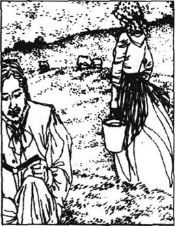
“我想发挥自己的才智，”安吉尔坚定地说道，“我想研读哲学。我想对自己的信仰提出质疑，这样经过质疑留下的东西，会更加坚定有力。”
“但是，安吉尔，你的母亲和我一省再省，想供你念大学，就像对你的哥哥们那样。但是如果不是为上帝服务，我们怎能送你去呢？”
因此安吉尔失去了进大学接受教育的机会。在家自学了几年后，他决心去学习务农，他认为这种工作能给予他最最宝贵的东西，那就是独立思考的自由。于是在26岁时，他作为一名学徒来到了塔尔勃塞。
起先，到了晚上他就待在自己的房间里，靠读读书、弹弹竖琴度过大部分时间。可是不久，他更愿意到公共餐室和奶场其他人一道吃饭，来体会人类的天性。和大家在一起的时间越长，克莱尔就越喜欢和这些淳朴的乡下人生活在一起。他不再把他们看做缺乏智慧、没有见她的人了。他领悟到他们跟他没有什么不同：他和他们一样都是风尘仆仆的赶路人，他们的最终归宿都是死亡。他开始喜欢上户外的工作了。他在学习更多关于自然和关于生活的知识。他渐渐感悟到了变化的四季，清晨和黄昏，各种各样的风，水域和云雾，阴影和沉寂，以及自然界发出的种种声音。对这一切，他过去是一无所知的。
苔丝到来后的头几天，克莱尔总是坐着看他的书，几乎没有注意到她在那儿。但是一天早上吃早饭时，他正在看一本乐谱，并沉浸在头脑里出现的旋律中，这时他听到了一个悦耳动听的嗓音，听起来就像他旋律中的一部分。他掉头看到了苔丝，坐在餐桌旁。
“那个女工多么娇嫩纯洁，真是大自然的女儿啊！”他思忖道。他像是记起了关于她的什么事情，记忆把他带回到过去的一段快乐时光。那时，他还没有做出让生活变得困难的抉择。这种回忆也让他更加关注苔丝，而不是其他女工。
chapter-a135_ 10
Chapter 10
Dairyman Crick insisted that all the dairy people should milk different cows every day, not just their favourites. He was worried that a dairymaid might leave the dairy, and then her cows would not like being milked by a stranger. However, Tess began to find that the cows which came to her usually happened to be her favourites. This made her milking much easier. But she soon realized that it was not by chance, as it was Angel Clare who sent the cows in for milking.
'Mr Clare, you have sent me my favourite cows!' she accused him one morning, blushing.
'Well, it doesn't matter,' said he. 'You will always be here to milk them.'
'Do you think so? I hope I shall. But I don't know.' Afterwards she was angry with herself. She had spoken too seriously to him, as if he were involved in her staying or leaving. In the evening after milking she walked in the garden alone, thinking about it.
It was a typical summer evening in June. The air was delicate and there was a complete, absolute silence. It was broken by the sound of a harp. The notes floated in the still air, strong and clear. Tess listened like a fascinated bird. She drew near to Clare, who still had not seen her. She was conscious of neither time nor space. The tune moved through her mind and body, bringing tears to her eyes. The waves of colour of the wild flowers mixed with the waves of sound. Angel finished playing, and caught sight of her. She blushed and moved away.
'Why are you going, Tess?' he asked. 'Are you afraid?'
'Oh no, sir, not of outdoor things.'
'But indoors?'
'Well, yes, sir.'
'Life in general?'
'Yes, sir.'
'Ah, so am I, very often. Being alive is rather serious, don't you think so?'
'It is, now you put it like that.'
'All the same, I wouldn't expect a young girl like you to feel that. Why? Come, tell me.'
After a moment's hesitation she answered, 'The trees ask questions with their eyes, don't they? And you seem to see hundreds of tomorrows all in a line, the first big and clear, the others getting smaller. But they all look fierce and cruel. But you can drive away all these ideas with your music, sir!'
He was surprised to find that this dairymaid had such sad thoughts. She was expressing in her own words the ache of modern life. This sadness made her more interesting to him. He did not know that her experience had given her great strength of feeling. Tess, on the other hand, could not understand why a man of religious family, good education and financial independence should feel sorry to be alive. How could this admirable and poetic man have felt, as she did two or three years ago, that he would rather die? It was true that he was not at present living among gentlemen. But he was studying what he wanted to know, and would become a rich farmer in time. So, as they neither understood each other's secrets, they were both puzzled and waited to find out more.
At first Tess regarded Angel as an intelligence rather than a man. She became quite depressed as she realized the distance between her own knowledge and his. One day he asked her why she looked so sad.
'Oh, it's only that I feel I've been wasting my life! When I see what you know, I feel what a nothing I am!'
'Well, my dear Tess,' said Angel with some enthusiasm, 'I shall be only too glad to help you study history, for example...'
'I don't know. What's the use of learning that I'm one of a long row, and that my past and future are like thousands of other people's? But there's one thing I'd like to know—why the sun shines on the good and the bad just the same,' she said, her voice trembling.
'Oh, Tess, don't be bitter!' Of course he had wondered this himself in the past. But as he looked at her innocent lips, he thought this pure child of nature could only have picked up the question from others. She could not possibly have any guilt in her past.
When he had gone, Tess felt again how stupid she must appear to him. She wondered whether she could gain his respect by telling him of her d'Urberville blood. She first asked the dairyman if Mr Clare was interested in old families who had lost their money and land.
'No,' said Mr Crick firmly. 'He's a rebel, and the one thing he hates is an old family.' After hearing this not very accurate view of Clare's opinions, poor Tess was glad she had not mentioned her ancestors.
That summer, Tess and Clare unconsciously studied each other, balanced on the edge of a passion, yet just keeping out of it. But all the time, like two streams in a valley, they were destined to join. Tess had never been so happy as she was now, and perhaps never would be so again. They met continually. They could not help it. They met daily in the half-light, at three o'clock in the morning, just before milking. They felt they were the first two up in the whole world, like Adam and Eve. Tess seemed like a queen to Clare, perhaps because he knew that she was the most beautiful woman walking about at this time of day. Lovely women are usually asleep at midsummer sunrise. But Tess was near, and the rest were nowhere. In the strange light she was no longer a milkmaid, but a vision of woman, the whole of womanhood in one form.
One day just after breakfast they all gathered in the milkhouse. The milk was turning in the churn, but the butter would not come. Dairyman Crick was worried.
'Maybe someone in the house is in love,' suggested his wife. 'That sometimes causes it. D'you remember that maid years ago, and the butter didn't come...?'
'Ah yes, but that wasn't being in love,' replied Mr Crick. 'That was damage to the churn.' He turned to Clare to tell the story.
'Jack Dollop, one of our milkers, got a girl into trouble. One day her mother came looking for him with a great heavy umbrella in her hand. Jack hid in the churn, but she found him and turned it round and round. "Stop, stop!" cried Jack. "If you promise to marry my daughter!" shouted the mother. And so he did.'
Tess, very pale, had gone to the door for some fresh air. Fortunately the butter suddenly came. But Tess remained depressed all afternoon. To the others the story was funny. She alone could see the sorrow in it, and it reminded her of her experience.
Tess was first in bed that night, and was half asleep as the other girls undressed. She saw them standing at the window looking at someone in the garden with great interest.
'It's no use you being in love with him any more than me, Retty Priddle,' said Marian, the eldest.
'There he is again!' cried Izz Huett, a pale girl with dark hair. 'I would just marry him tomorrow if he asked me,' said Marian, blushing.
'So would I, and more,' murmured Izz.
'And I too,' whispered Retty shyly.
'We can't all marry him,' said Izz.
'We can't anyway,' said Marian. 'He likes Tess Durbeyfield best. I've watched him every day and found it out.'
There was a thoughtful silence.
'How silly this all is!' said Izz impatiently. 'He's a gentleman's son. He won't marry any of us or Tess either!' They all sighed, and crept into their beds, and fell asleep. But Tess, with her deeper feelings, could not sleep. She knew Angel Clare preferred her to the others. She was more attractive, better educated and more womanly. She could keep his affection for her. But should she? Perhaps the others should have a chance of attracting his attention, and even of marrying him. She had heard from Mrs Crick that Mr Clare had spoken of marrying a country girl to help him farm, milk cows and reap corn. Tess had promised herself she would never marry and would never be tempted to do so. She ought to leave the field open for the other girls.
Next morning Dairyman Crick sent all the dairy people out into a field to search for garlic plants. One bite by one cow was enough to make the whole day's butter taste of garlic. It was not by accident that Clare walked next to Tess.
'Don't they look pretty?' she said to him.
'Who?'
'Izzy Huett and Retty.' She had decided that either would make a good farmer's wife.
'Pretty? Well, yes, I have often thought so.'
'They are excellent dairywomen.'
'Yes, though not better than you.' Clare observed them.
'She is blushing,' continued Tess bravely, 'because you are looking at her.' She could hardly say: 'Marry one of them if you really don't want a fine lady! Don't think of marrying me!' From now on she tried to avoid spending time with Angel. She gave the other three every chance.
favourite n. person or thing preferred above all others. 最受喜爱的人或物。
involve v. have as a necessary consequence. 牵涉。
typical adj. serving as a type. 代表性的。
absolute adj. complete. 完全的。
wave n. wave-like motion by which heat, sound, light, radio, magnetism, etc is spread or carried. 波。
blush v. become red (in the face) from shame or confusion. 脸红；赧颜。
fierce adj. violent and angry. 凶猛的。
ache n. dull continuous pain. 疼痛。
poetic adj. of poets and poetry. 诗意的。
puzzle v. cause (sb) to be perplexed. 使困惑。
waste v. make no use of. 浪费。
stupid adj. foolish. 愚蠢的。
rebel n. person who resists authority or control. 抗拒权威或控制的人。
unconscious adj. not conscious (all senses). 无意识的。
balance v. keep or put (sth, oneself) in a state of balance. 保持平衡。
damage n. harm or injury that causes loss of value. 损害。
churn n. tub in which cream is shaken or beaten to make butter. 搅乳器。
trouble n. unhappiness. 不幸。
thoughtful adj. full of thought. 深思的。
impatiently adv. in a manner which shows that sb is annoyed because of a situation he cannot control. 不耐烦地。
affection n. kindly feeling; love. 爱。
garlic n. onion-like plant with strong taste and smell, used in cooking. 蒜。
observe v. see and notice. 看。
avoid v. keep or get away from. 避免。
第十章
第十章
奶场主克里克坚持让所有奶场的工人每天挤不同的奶牛，而不是只挤他们最喜欢的那几头。他担心一旦哪个挤奶女工离开奶场后，她的奶牛会不喜欢被一个陌生人挤奶。然而，苔丝渐渐发现，分配给她的奶牛碰巧总是她最喜欢的几头。这让她挤起来更加轻松。但她很快发现这不是什么凑巧的事儿，因为是安吉尔·克莱尔分派待挤的奶牛。
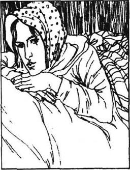
“克莱尔先生，你总是把我最喜欢的奶牛分给我！”一天早上，她红着脸指责他说。
“啊，这不要紧，”他说，“你反正会一直在这儿挤它们的。”
“你这么以为吗？我希望如此，但我不知道。”说完之后，她对自己有些恼火。她刚才对他说话时太严肃了，好像把他牵扯进了她的去留问题。傍晚挤完奶后，她独自到园子里漫步，心里还想着这件事。
这是6月间一个典型的夏日傍晚。空气柔和清新，四周静悄悄的，没有一丝声响。这份静谧被一阵竖琴声划破了。旋律在静止的空气中流动着，清晰有力。苔丝就像一只着了魔的鸟儿一般倾听着。她走近克莱尔，但克莱尔仍没注意到她。这时，苔丝心中已没有了时间和空间的感觉。这旋律流进了她的心田，流遍了她的全身，令她热泪盈眶。野花的各种色彩摇摆着，与音乐声的波动混合在一起。一曲终了，安吉尔看见了她。她脸刷地红了，赶紧走开了。
“为什么要走开呢，苔丝？”他问，“是害怕吗？”
“噢，不是的，先生，不是怕野外的东西。”
“那么，是屋里的什么喽？”
“嗯，是的，先生。”
“概括地说，是人生？”
“是的，先生。”
“啊，我也害怕这个，常常害怕。生活是相当严酷的，你是不是这样认为？”
“是吧，既然你这么说了。”
“虽然如此，我还是没有料到一个像你这样的年轻姑娘会有这种感觉，为什么？来，跟我说说吧。”
她踌躇了一会儿，回答道：“这些树都长着眼睛，它们用眼睛问问题，是不是？你仿佛看见许许多多的明天全都排成一行。最先的这个明天是最大、最清晰的，而后面的那些就变得越来越小了。但是，它们看起来都那么凶暴、残酷。不过你可以用你的音乐把所有这些想法都驱散，先生！”
他吃惊地发现这个挤奶女工竟如此地愁绪满怀。她用自己的话表达着现代生活的痛苦。这种忧郁让他更加关注她了。他并不知道她的经历给予了她如此强烈的感受。而另一方面，苔丝也不明白为什么像他这样一个出身于宗教家庭、受过良好教育、经济独立的人会对生活感到不幸。像他这样令人羡慕、才华横溢的人，怎么可能与她在两三年前感觉的一样，情愿死去呢？他目前并没有生活在绅士们当中，这是事实，但是他正在学习他想要了解的知识，而且很快，他就会成为一个有钱的农场主的。正因为他们对彼此的内心世界都不了解，他们才都感到迷惑，并期待着进一步了解对方。
起初，苔丝把安吉尔·克莱尔看成是智慧的化身，而不是一个凡人。当她发现自己的知识和他的相比存在着如此之大的差距时，她感到非常抑郁。有一天他问她，为什么她看起来闷闷不乐。
“哦，这只是因为我感到自己一直在浪费自己的生命！当我了解到你所懂的知识，我觉得自己真是太渺小了！”
“噢，亲爱的苔丝，”安吉尔充满热情地说道，“我非常乐意教你，比如说，历史……”
“我不知道。学习又有什么用呢？我只不过是长长一列队伍中的一员，自己的过去和未来与成千上万个别人没有什么区别。但是有一件事我想要弄清楚——为什么太阳一视同仁地照在好人和坏人身上呢？”她说道，声音有些颤抖。
“哦，苔丝，不要这么愤世嫉俗！”他自己过去对此也困惑不解过。但是当他看到她那天真无邪的嘴唇时，他认为这个大自然的纯洁的孩子只不过从别人那里得到了这个问题。在她的过去，是不可能有什么罪孽的。
当他离开以后，苔丝又觉得自己在他面前一定表现得十分愚蠢可笑。她在考虑如果告诉他自己的德伯家血统，是否会赢得他的尊敬。她先到奶场主那儿打听克莱尔先生是否会对一个失去了财富和土地的古老家族有好感。
“不，”克里克先生肯定地说，“他是一个叛逆者，他痛恨古老的家族。”听完这番对克莱尔的观点并不十分准确的见解，苔丝庆幸自己没有提起她的祖先们。
那个夏天，苔丝和克莱尔都在无意中探究着对方，在感情的边缘徘徊，并试图避免陷入其中。但是在这整段时间里，他们就像山谷中的两条溪流，终究是要汇合在一起的。苔丝从来没有像现在这样快乐过，也许将来也不会再有。他们频频相会，一天不见面心里就受不了。每天凌晨3点钟，在开始挤奶之前，天还没有全亮呢，他们就在一起了。他们觉得自己是整个世界上起得最早的一对，就如同亚当和夏娃。在克莱尔眼里，苔丝就像一个王后，也许是因为他知道她是一天中在这个时候走动的最美丽的女人。漂亮可爱的女人在盛夏太阳初升时，通常还在睡觉。但是苔丝就在身边，其他人却了无影踪。在这种特别的光线中，她不再是一个挤奶女工，而是一个女人的幻象，她集所有女性气质于一身。
一天，刚刚吃过早饭，他们都聚集到牛奶贮藏室里。牛奶倒进了黄油制造器，但是黄油却出不来。奶场主克里克很焦急。
“也许房子里有人恋爱了。”他的妻子提示道，“这种事情有时会导致这种后果的。你还记得多年以前的那个女工吗？那一次黄油就出不来……”
“哦，想起来了，但那不是恋爱。”克里克先生回答道。“那是把机器搞坏了。”他转向克莱尔讲起了这个故事。
“我们的一个牛奶工，杰克·多洛，让一个女孩子出了麻烦。一天，姑娘的母亲手里拿着一把又大又重的雨伞找他来了。杰克就藏到黄油机里去了，但她发现了，就一圈一圈地转机器。‘停下，停下！’杰克哭叫道。‘如果你答应跟我女儿结婚的话！’母亲喊道。于是他跟她女儿结婚了。”
苔丝面色惨白地走到了门口，她需要一些新鲜空气。幸好，黄油突然出来了。但是，那一下午苔丝都郁郁寡欢。对其他人来说，故事只是好笑而已，而她却独自体会到了其中的悲伤，这让她重新想起了她的遭遇。
那晚，苔丝第一个上床睡觉了。当别的姑娘们在脱衣服时，她已经快要睡着了。她发现她们站在窗前，兴致勃勃地看着园子里的某个人。
“蕾蒂·普里德尔，你爱上他也没有用，这一点跟我一样，”年龄最大的玛丽安说道。
“他又来啦！”伊茨·休爱特叫道，她是一个皮肤白、头发黑的姑娘。
“如果他向我求婚的话，我愿意明天就嫁给他。”玛丽安红着脸说道。
“我也是，而且更愿意。”伊茨轻轻说道。
“我也愿意，”蕾蒂羞涩地细声说。
“我们不能都嫁给他。”伊茨说。
“我们都不可能，”玛丽安说道，“他喜欢苔丝·德北。我一直天天观察他，我看出来的。”
大家都默不作声地想着什么。
“这一切都太可笑了！”伊茨忍不住说道，“他是个绅士的儿子，他是不会娶我们中间任何一个的，包括苔丝在内！”一阵叹息之后，她们都爬上床，睡着了。但是苔丝，怀着更深的感情，却无法入睡了。她知道，安吉尔·克莱尔喜欢她胜过其他姑娘。她更富有魅力，更有教养也更有女人味儿。她可以让他继续对她怀有爱慕之情。但是，她应该吗？也许其他人也应该有机会吸引他的注意，甚至与他结婚。她曾从克里克夫人那儿听说，克莱尔先生说起过要娶一个乡下姑娘帮他经营农场，挤牛奶、割庄稼什么的。苔丝曾向自己保证过，永远不结婚，也永远不被人引诱结婚。她应该敞开这块天地，把机会留给别的姑娘们。
第二天早上，奶场主克里克派全奶场的人到地里寻找大蒜类的植物。只要有一头牛咬了一口这种东西，就足以使一天的黄油都带上一股蒜味。克莱尔走在苔丝的旁边，这绝非偶然。
“她们看起来很漂亮，不是吗？”苔丝对他说。
“谁？”
“伊茨·休爱特和蕾蒂。”她觉得她们无论哪一个都能成为一名称职的农场主夫人。
“你说漂亮？噢，是的，我一直这么觉得。”
“她们是很出色的挤奶女工。”
“是啊，尽管没有你出色。”克莱尔观察着她们。
“她脸红了。”苔丝鼓足了勇气继续说道，“因为你在看着她。”她差点要说：“跟她们中的一个结婚吧，如果你真的不想娶一个高贵小姐的话！不要考虑跟我结婚！”从现在起，她就尽力避免和安吉尔在一起。她把每一个机会都留给了另外三个姑娘。
chapter-a135_ 11
Chapter 11
It was July and very hot. The atmosphere of the flat valley hung like a drug over the dairy people, the cows and the trees. It was Sunday morning after milking. Tess and the other three girls dressed quickly to go to Mellstock Church, which was three or four miles away from Talbothays. Heavy thunderstorms had poured down the day before, but today the sun shone brightly and the air was warm and clear. When the girls reached the lowest part of the road to Mellstock, they found it was flooded. In working clothes and boots they would have walked through, but they were wearing Sunday white stockings and thin shoes which they did not want to ruin. The church bell was calling, still a mile away.
Suddenly they saw Angel Clare approaching. He had seen them from far away, and had come to help them, one of them in particular.
'I'll carry you through the water, all of you,' he offered. All four blushed as if they had one heart.
'Now, Marian, put your arms round my shoulders. Hold on!' and Angel walked off with her in his arms. Next was Izz Huett. Her lips were dry with emotion. Angel returned for Retty. While he was picking her up, he glanced at Tess. He could not have said more plainly, 'It will soon be you and I.' There was an understanding between them.
It was now Tess's turn. He picked her up. She was embarrassed to discover her excitement at his nearness.
'Three plain girls to get one beauty,' he whispered.
'They are better women than I,' she said bravely.
'Not to me,' said Angel. She blushed. There was silence. Clare stood still and bent his face to hers.
'Oh Tessy!' he said. Her cheeks were pink and she could not look into his eyes. But he respected her modesty and did nothing more. He walked slowly, however, to make the journey as long as possible, and put her down on dry land. Her friends were looking with round thoughtful eyes at them. He said goodbye and went back by the road.
The four walked on together. Marian broke the silence by saying, 'No, we have no chance against her!' She looked joylessly at Tess.
'What do you mean?' asked Tess.
'He likes you best, the very best! We saw as he brought you over. He'd have kissed you if you had encouraged him, only a little.'
They were no longer cheerful but they were not bitter. They were generous country girls who accept that such things happen. Tess's heart ached. She knew that she loved Angel Clare, perhaps all the more passionately because the others also loved him. And yet that same hungry heart of hers pitied her friends.
'I will never stand in your way!' she cried to them that evening in the bedroom. 'I don't think he's thinking of marrying, but even if he asked me, I'd refuse him, as I'd refuse any man.'
'Oh why?' they asked.
'I cannot marry! But I don't think he will choose any of you.'
So the girls remained friends. They all shared each other's secret. The air in their bedroom was full of their hopeless passion. There was a flame burning the inside of their hearts out. But because they had no hope, they were not jealous of each other. They had even heard that Angel's family were planning for him to marry a neighbour's daughter. Tess no longer attached any importance to Clare's interest in her. It was a passing summer attraction, nothing more.
The heat grew steadily greater. In this stormy atmosphere even a passing attraction would deepen into love. Everything in nature was ready for love. Clare became gradually more passionately in love with the soft and silent Tess. The fields were dry. Waggons threw up clouds of dust on the road. Cows jumped over gates, chased by flies. Dairyman Crick's sleeves were rolled up from Monday to Saturday, and the milkers milked in the fields for coolness.
On one of these afternoons Tess and Angel were milking near each other. Tess used to rest her head on the cow's body, her eyes fixed on a distant field. The sun shone on the beautiful lines of her face. She did not know that Clare had followed her round and sat watching her. How very lovable her face was to him. He had never seen such beautiful lips and teeth, like roses filled with snow.
Suddenly Clare jumped up, leaving his bucket to be kicked over by the cow, went quickly towards her, and, kneeling down beside her, took her in his arms. Tess let herself relax in his arms in a moment of joyful surprise. He was on the point of kissing that tempting mouth, but stopped himself.
'Forgive me, Tess dear!' he whispered. 'I ought to have asked. I love you, Tess, really!'
Tess tried to free herself and her eyes began to fill with tears.
'Why are you crying, my darling?' he asked.
'Oh I don't know!' she murmured, trying to pull away.
'Well, I've shown my feeling at last, Tess,' he said with a curious sigh, showing that his heart had overcome his reason. 'I do love you dearly and truly. But I shall go no further now. I have surprised you.'
She freed herself and they went on milking. Nobody had noticed, and when Dairyman Crick came round there was no sign to show that there was any connection between them. Yet something had happened which was to change their whole world. As a practical man, the dairyman might laugh at love, but love has a habit of changing people's lives. It is a force to be respected.
thunderstorm n. storm of thunder and lightning, usually with heavy rain. （大）雷雨。
in particular especially. 特别地；尤其。
plainly adv. clearly. 清楚地。
embarrass v. make to feel awkward or ashamed. 使困窘。
brave adj. ready to face danger, pain or suffering. 勇敢的。
bitter adj. filled with, showing, caused by, envy, hate, remorse, or disappointment. 充满或显示妒忌、憎恨、懊悔或失望之情绪的。
generous adj. given freely. 宽大的。
flame n. burning gas. 火焰。
jealous adj. feeling or showing fear or ill will because of possible or actual loss of rights or love. 嫉妒的。
steadily adv. in a steady manner. 稳定地。
sleeve n. part of a garment that covers all or part of the arm. 衣袖。
bucket n. vessel of wood, metal, canvas, etc for holding or carrying water, milk, etc. 水桶。
forgive v. say that one no longer has the wish to punish sb. 宽恕。
sigh n. act of sighing. 叹息。
overcome v. get the better of. 胜过。
第十一章
第十一章
到了7月，天气非常炎热。悬浮在平坦的山谷中的大气就像麻醉剂一般，笼罩着奶场的人们、奶牛和树木。这是挤完奶后的一个星期天的早晨。苔丝和另外三个姑娘急匆匆地换上衣服，准备到梅尔斯托克教堂去，那儿距塔尔勃塞有三四英里远。前一天刚下过很大的暴雨，今天却阳光明媚，空气温和清新。当姑娘们走到通向梅尔斯托克那条路的最低的一段时，发现这一段路被洪水淹没了。平时穿着工作服和靴子，她们走过去就行了。但今天她们穿着做礼拜才穿的白袜子和薄鞋子，她们可不想把它们都毁了。还有一英里路，教堂的钟声已经响了。
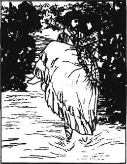
突然，她们看到安吉尔·克莱尔正朝这边走近。他远远就看见她们了，是过来帮助她们的，特别是她们中的某一个。
“我把你们都抱过水去，你们所有人。”他开口提供帮助。四个人的脸不约而同地全红了，好像心有灵犀。
“现在，玛丽安，用你的手臂抱住我的肩膀，抱紧点！”然后安吉尔抱起她走了。下一个是伊茨·休爱特。她激动得嘴唇都干了。然后安吉尔又回来接蕾蒂。当他抱起她时，他瞥了一眼苔丝。他用不着更直接了当地说：“很快就到你和我了。”他们之间存在着一种默契。
这下轮到苔丝了。他把她抱了起来。当她发现自己因他的贴近而激动时，她有些局促不安。
“抱过三个相貌平平的姑娘，就为了抱一个漂亮的。”他轻轻说道。
“她们是比我更好的姑娘，”她勇敢地说。
“对我来说不是，”安吉尔说道。她的脸又红了。一阵沉默后，克莱尔站住了，低下头，把自己的脸靠近苔丝的脸。
“哦，苔丝！”他轻唤道。她的脸颊微微红着，不能直视他的眼睛。出于对她的端庄的尊重，他没有再做出什么。然而，他走得很慢，尽可能地延长这段行程。然后他把她放在了干地上。她的朋友们都瞪圆了眼睛，关切地注视着他们。他说了声再见就沿原路返回了。
四个人继续往前走着。玛丽安打破了沉默，说道：“不，在她面前我们没有机会！”她闷闷不乐地看着苔丝。
“你这是什么意思？”苔丝问道。
“他最喜欢你！最最喜欢！当他抱你过来时，我们都看到了。如果你鼓励他的话，哪怕只有一点点鼓励，他就会吻你的。”
她们的愉快心情一扫而光，但她们也并不怀恨在心。她们都是宽厚的乡下姑娘，能够接受这种事情的发生。苔丝的心在作痛。她知道她爱安吉尔·克莱尔，也许这种爱变得更强烈了，因为其他姑娘也在爱着他。然而，正是她那颗充满渴望的心，对她的朋友们产生了同情。
“我将永远不会妨碍你们的！”那天晚上在卧室里，她向她们宣布，“我认为他并没有在考虑结婚，但是即使他向我求婚，我也会拒绝他的，就像拒绝任何其他男人一样。”
“哦，为什么？”她们问。
“我不能结婚！但是我认为他不会选择你们中任何一个的。”
这样，姑娘们还是朋友。她们互相分享彼此的秘密。她们卧室的空气中充斥着没有希望的热情。她们的心被激情燃烧着。但是因为她们不抱任何希望，她们之间也就没有妒忌。他们甚至还听说，安吉尔的家人正打算让他娶一个邻居的女儿。克莱尔对她的关注对苔丝来说，已不再有任何重要性。这只是一次夏天的、转瞬即逝的吸引，仅此而已。
气温不断地升高。在这多风暴的空气中，甚至短暂的吸引都会成为深深的爱慕。自然中的一切事物都为爱做好了准备。克莱尔对温柔沉静的苔丝的爱也越来越炽烈了。地是干的，马车驶过，扬起一片尘烟。奶牛跳过栅门，被一群苍蝇追逐着。奶场主克里克卷起袖子从星期一干到星期六，为了图凉快，工人们都在地里挤奶。
就在这样的一个下午，苔丝和安吉尔在相距不远的地方挤着奶。苔丝习惯于把头靠在奶牛的身上休息，眼睛注视着远方的田野。阳光照在她脸庞秀美的轮廓上。她不知道克莱尔已经跟着她过来了，正坐着观看她。那是张多么讨人喜欢的脸啊！他从来没有见过如此美丽动人的唇齿，恰如含雪的玫瑰一般。
突然，克莱尔从坐的地方一跃而起，顾不上奶牛是否会把奶桶踢翻，快速地向她跑去。他跪在她身旁，把她搂进了怀里。那一刻，苔丝又惊又喜，她让自己依顺地偎在了他的怀里。他差点就要亲吻那张充满诱惑的小嘴了，但他抑制住了自己。
“请原谅我，苔丝，我亲爱的！”他轻声说道，“我本来应该问问你的。我爱你，苔丝，真的！”
苔丝想从他怀里挣脱出来，她的眼里开始噙满泪水。
“为什么哭，亲爱的？”他问。
“哦，我不知道！”她轻声说道，试图脱身走开。
“嗯，我终于向你表露了我的真情，苔丝，”他有些奇怪地叹了口气，说道。这表明他的情感战胜了他的理智。“我真的爱你，真心诚意地爱你，但是现在我不该有过分的表示，我吓着你了。”
她从他怀里挣脱出来，他们又开始挤奶了。没有人注意到他们，当奶场主克里克走过来时，没有任何迹象表明他们之间有什么瓜葛。然而，事情已经发生了，并将改变他们的整个世界。作为一个讲究实际的人，这位奶场主可能会嘲笑爱情，但是爱情惯于改变人们的生活。这是一种应该受到尊敬的力量。
chapter-a135_ 12 The Result
The Result
Chapter 12
The nights were as hot as the days. Angel Clare could not sleep. He went out into the darkness to think over what had happened that afternoon. He had come as a student of farming to this dairy, thinking he would be here only a short time. He thought it would be a quiet place. From here he could observe the great world outside, before plunging back into it. But the world outside had lost its interest, and the quiet place was now the centre of all feeling.
Clare was a thoughtful, honest man. He knew Tess was not a toy to play with and throw away when finished with. Her life was as important to her as his was to him. He knew he must treat her affection for him seriously. But if they went on meeting every day, their relationship must develop: he could not stop himself. As he had not decided what purpose their relationship should have, he decided that for the moment they should meet as little as possible. But it was not easy to keep to this decision. He was driven towards her by the heat in his blood.
He thought he would go and see his family. In less than five months he would have finished his studies here. After a few more months on other farms, he would be ready to start farming himself. Shouldn't a farmer's wife be a woman who understood farming?
He rode along the narrow road towards Emminster and his parents' house. His eyes were looking, not at the road, but at next year. He loved her: ought he to marry her? What would his mother and brothers say? What would he himself say two years after the wedding?
As he rode into the village, he saw a group of young girls waiting outside the church. Walking quickly to join them was Miss Mercy Chant, only daughter of his father's neighbour. His parents quietly hoped Angel would marry Mercy one day. She was very good at giving Bible classes, but in Angel's mind was the face of the pretty milkmaid who hardly ever thought of God.
His family were delighted, though surprised, to see him. Angel was glad to be at home, and yet he did not feel so much part of the family as he used to. His father's religious belief was very strict, but he was a kind, honest man, and fond of his sons. However, he would have been shocked to know of the pagan pleasure in nature and pretty womanhood experienced by Angel. His mother shared his father's religious views and helped in his church work. His brothers seemed rather unimaginative and narrow-minded, although they were both well educated: they felt that anybody outside the Church or university could not be respected.
As he walked with his brothers, Angel felt that, however lucky they were to have a university education, neither of them really saw life as it was lived. They thought farming was a poor man's job, not suitable for a gentleman. Angel felt all the more determined to keep to his choice.
In the evening he spoke to his father alone after prayers. Mr Clare told his son he had been saving the money he would have spent on his university education for him. This encouraged Angel to ask his father what sort of wife a farmer needed.
'A really Christian woman. Nothing else matters. For example, my neighbour Dr Chant...'
'But isn't the main thing that she should be able to milk cows, churn good butter, value animals and direct farm workers?'
Mr Clare had clearly never thought of this before.
'Yes, yes, certainly. But I was going to say that you will never find a purer woman than Mercy Chant. Your mother and I would be very happy if you...'
'Yes, yes, Mercy is good, I know. But, father, don't you think that one who is just as good and pure, and who understands farm life as well as the farmer, would be much better?'
After much discussion Angel got down to details. He explained he had met a woman who was ideally suited to be a farmer's wife, who went to church regularly, who was honest, sensitive, intelligent, graceful, pure as snow, and extremely beautiful.
'Is she of a good family, like Mercy?' asked his surprised mother, who had come in during the conversation.
'She is not what we call a lady,' said Angel firmly. 'She is a cottager's daughter. What's the advantage of good family to me? My wife will have to work hard and manage with very little money.'
'Mercy is educated. That has its charm,' said his mother, looking at him through her silver glasses.
'I shall help her with her reading. She will learn fast. She's full of poetry, real poetry. She lives what poets only write. And she is a good Christian girl. I'm sure you'll value her for that.'
His parents already doubted Angel's religious belief, so they were almost relieved to hear this of his future wife. They told him not to act in a hurry, but they would like to see her. Although Angel was free to marry or not as he wished, he did not want to hurt his parents, and he accepted their advice.
As he set off to return to the dairy and Tess, his father rode with him a little way. Mr Clare was telling his son about the new d'Urberville family who had taken the ancient name and lived near Trantridge. There was a young man and his blind mother. Preaching in the church there one day, Mr Clare had spoken out bravely against the well-known wickedness of young d'Urberville, who, after this, had publicly insulted him when they met later.
Angel was angry with d'Urberville. 'Dear father, you should not let yourself be insulted like that!'
'It doesn't matter to me. I have a duty to point out where people go wrong. Often men have hit me, but then at least they haven't hit their families. And they live to thank me, and praise God.'
'I hope this young man does the same!' said Angel warmly. 'But it doesn't seem likely.'
'We'll hope anyway,' said Mr Clare. 'Maybe one of my words may grow like a seed in his heart one day.'
Angel could not accept his father's narrow religious beliefs, but he loved him for his courage. He remembered that his father had not once asked whether Tess had money or not. This lack of interest in money meant that all the brothers would probably be poor for ever, but Angel still admired his father's belief that money was not important.
When he returned to the dairy, in the sleepy afternoon heat, nobody was awake. Getting up so early in the morning meant the milkers really needed a sleep before the afternoon milking. It was three o'clock, time for skimming. There was a slight noise upstairs, then Tess appeared before his eyes. She did not see him, and stretched one arm up above her head. She yawned like a cat and he saw the red inside of her mouth. Her whole soul breathed out physical beauty. Then her eyes flashed as she recognized him.
'Oh Mr Clare! How you frightened me—I...' she said, looking glad, shy and surprised at the same time.
Clare stepped forward to put his arms round her.
'Dear, darling Tessy!' he whispered, putting his face to her warm cheek. 'Don't call me Mr Clare any more! I've hurried back because of you!'
They stood holding each other, the sun warming them through the window. He looked deep into her eyes of blue and black and grey. She looked at him as Eve must have looked at Adam.
'I must go skimming,' she said. Together they went to the milk-house.
Perhaps the Talbothays milk was not very well skimmed that afternoon. Tess was in a dream as she skimmed. The heat of his love made her feel like a plant under a burning sun.
'There's something very practical that I want to ask you,' he said gently. 'I shall soon want to marry. Being a farmer, I need a wife who knows all about farms. Will you be that woman, Tessy?'
She looked quite worried. She. had accepted that she could not help loving him, but she had not expected this result. With bitter pain she replied as she had promised herself she would.
'Oh Mr Clare—I cannot be your wife... I cannot be!' The sound of these words seemed to break her very heart.
'But Tess!' he said, amazed at her answer and holding her still closer. 'Surely you love me?'
'Oh yes, yes! And I would rather be yours than anybody's in the whole world! But I cannot marry you!' cried the sweet and honest voice miserably.
'Tess, have you agreed to marry someone else?'
'No, no!'
'Then why do you refuse me?'
'Your father is a parson, and your mother will want you to marry a lady,' said poor Tess, desperately trying to find an excuse.
'No, certainly not, that's why I went home, to talk to them both.'
'I feel I cannot—never, never!'
'Is it too sudden, my pretty? I'll give you time. I won't mention it again for a while.'
She tried to skim again, but her tears fell so that she could not do it. She could never explain her sadness, even to this her best friend. Clare began to talk more generally, to calm her. He talked about his father's religious views, and the good work he did. He mentioned the insults his father had received from a young man near Trantridge who had a blind mother.
Tess now looked hard and worn, and her mouth was tragic. Clare did not notice. They finished skimming and he said to her softly:
'And my question, Tessy?'
'Oh no—no!' she replied, hopelessly, thinking bitterly of Alec d'Urberville. 'It can't be!'
She went out with the other milkmaids to the cows in the fields. Angel watched her moving freely in the air like a swimmer on a wave. He knew he was right to choose a wife from nature, not from civilization.
plunge v. go suddenly and with force, into. 突入。
decision n. deciding. 决定。
narrow adj. measuring little across in comparison with length. 窄的。
be fond of like. 喜欢。
university n. institution for the promotion and dissemination of advanced learning, conferring degrees and engaging in academic research. 大学。
suitable adj. right for the purpose or occasion. 适宜的。
discussion n. discussing or being discussed. 讨论。
ideally adv. in a manner which satisfies one's idea of what is perfect. 理想地。
advantage n. sth useful or helpful. 益处。
doubt v. feel doubt about. 怀疑。
advice n. opinion about what to do. 建议。
insult v. speak or act in a way that hurts a person's feelings or dignity. 侮辱。
seed n. flowering plant's unit of reproduction, from which another plant can grow. 种子。
yawn v. take a deep breath with the mouth wide open, as when sleepy or bored. 打呵欠。
hurry v. move or do sth quickly or too quickly. 匆忙；赶快。
skim v. remove floating matter from (the surface of a liquid). 撇去（液体表面）之漂浮物。
dream n. sth which one seems to see or experience during sleep. 梦。
heat n. intense feeling. 热烈。
desperately adv. despairingly. 绝望地。
civilization n. civilized states collectively. 文明世界。
第十二章 结果
第十二章 结果
夜晚与白天一样炎热。安吉尔·克莱尔无法入睡，就来到外面漆黑的夜里，他在思考那天下午发生的事情。他是作为一名学习务农的学生来到这个牛奶场的，原以为在这儿只待一小段时间。他原以为这儿会是一个平静的地方。在他重新投入到外面那个伟大的世界中之前，他可以在这儿冷眼旁观它。但是外部的世界已经失去了它的重要性，而这个平静的地方现在却成了他所有喜怒哀乐的中心。
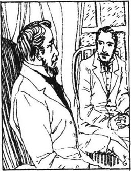
克莱尔是一个善于思考、诚实正直的人。他知道苔丝不是一个用来戏耍的玩偶，在玩过之后就可以丢弃。她的生活对于她与他的生活对于他同等重要。他知道他必须严肃认真地对待她的感情。但是如果他们继续保持天天见面，他们的关系势必会继续发展：他无法阻止自己。因为他还无法断定他们的关系将发展成什么结果，于是他决定在这段时间里，他们应尽量少见面。但执行这样一个决定绝非易事。他沸腾的热血在驱使着他走近她。
他觉得他应该回去见见他的家人。再有不到五个月，他在这儿的学习就要结束了。再到别的农场学习几个月，他就准备开始经营自己的农场了。一个农场主的妻子难道不该是个懂农务的女人吗？
他骑马沿着一条狭长的道路朝爱敏斯特和他父母的房子走去。他的眼睛在展望着什么，不是路面，而是下一个年头。他爱她：他应该娶她吗？他的母亲和哥哥们会怎么说？他自己在结婚两年后又会怎么说？
当他骑马进村时，他看到一群年轻姑娘正等候在教堂外面。默茜·钱特小姐正快步走去加入她们，她是他父亲家邻居的独生女。他的父母都暗暗地希望有一天安吉尔能和默茜结婚。她对于传授《圣经》知识非常在行，但安吉尔的心被一张漂亮的面孔占据了，就是那个几乎从没有想起过上帝的挤奶女工的面孔。
尽管有些惊讶，他的家人见到他还是很高兴。回到家安吉尔也感到很愉快，然而他不再像过去那样觉得自己是这个家庭的重要组成部分了。他父亲恪守宗教信条，非常严格，但他是个和善正直的人，深爱着他的孩子们。然而，他若是知道安吉尔从自然界和漂亮女人身上所获得的非基督教的快乐，一定会感到震惊的。他母亲有着同父亲一样的宗教观念，并帮助父亲从事教堂的工作。他的哥哥们看起来相当枯燥死板，而且心胸狭窄，尽管他们俩都受过良好的教育，但他们觉得任何教堂或大学外的人都不应受到尊敬。
当他和哥哥们走在一起时，安吉尔感觉到，尽管他们俩很幸运地接受了大学教育，但没有一个能实事求是地看待生活。他们认为务农是穷人的职业，对一个绅士来说是不合适的。安吉尔坚持自己选择的决心更坚定了。
晚上做完祷告之后，他和父亲单独谈了谈。克莱尔先生告诉儿子，他一直都在积攒那笔该用来给他支付大学教育费用的钱。这让安吉尔有了勇气，问父亲一个农场主需要什么样的妻子。
“一个虔诚的基督教徒，别的什么都不重要。比如说，我的邻居钱特医生……”
“但是难道这点不重要吗？就是她要会挤牛奶，搅制出上等的黄油，珍惜动物，并指导农场工人？”
很明显，克莱尔先生以前从未想过这个方面。
“是的，是的，当然。但我要说的是，你不可能再遇到一位比默茜·钱特更纯洁的姑娘啦。你母亲和我会非常高兴的，如果你……”
“是的，是的，我知道默茜是个好姑娘。但是，爸爸，难道你不认为一位同样纯洁善良的姑娘，像一个农场主一样了解农场生活的姑娘，会更合适吗？”
商讨了好一阵之后，安吉尔开始细细阐述。他解释道，他遇上了一位非常适合做农场主妻子的姑娘，她经常去教堂，她真诚、聪慧、机智、可爱，雪一般地纯洁，而且极其美丽。
“她是位大家闺秀吗？像默茜一样？”颇感意外的母亲问道，她是在他们谈话时进来的。
“她不是一位我们印象中的小姐，”安吉尔毫不退缩地说道，“她是一个农村人家的姑娘。大家闺秀能给我带来什么好处呢？我的妻子要卖力地工作，还要会安排那点微不足道的收入。”
“默茜受过教育，这是她的迷人之处。”他母亲透过她的银边眼镜看着他，说道。
“我将帮助她读书。她很快就能学会的。她充满了诗意，真正的诗意。她充满诗意地生活着，而诗人们只有在笔下流露这些。而且她还是位虔诚的基督教徒，我相信你们会因为这点珍视她的。”
他的父母已经怀疑安吉尔的宗教信仰了，因此他关于未来妻子的这一番话，倒让他们觉得宽心了。他们叫他别草率行事，表示愿意见见她。尽管安吉尔能够自由地选择结婚或不结婚，但他却不愿伤害他的父母。因此，他接受了他们的建议。
当他起身返回奶场和苔丝身边时，他父亲陪他同骑了一段路。克莱尔先生向儿子讲起了那个住在纯瑞脊附近、袭用了这个古老姓氏的新的德伯家庭。家里有一个年轻小伙子和他的双目失明的母亲。有一天在那儿的教堂布道时，克莱尔先生大胆地谴责了年轻人德伯的那些臭名昭著的恶行。此后，在他们碰面时，德伯公然地对他进行了辱骂。
安吉尔对德伯感到非常生气。“亲爱的爸爸，你不该让自己被这样辱骂！”
“这对我来说不要紧。我有责任指出人们做错的地方。经常会有人攻击我，但是至少，这样，他们就不会攻击家人了。他们在日后会感激我，赞美上帝。”
“我希望这个年轻人也能如此！”安吉尔热心地说，“但是看起来不太可能。”
“不管怎样，我们不要放弃希望。”克莱尔先生说道，“也许我的某一句话有一天会在他心里像种子一样生根发芽的。”
安吉尔无法接受他父亲狭隘的宗教信仰，但他为他的勇气敬爱他。他想起父亲从来没有问过苔丝是否有钱。这种对金钱的淡漠意味着也许他们兄弟几个会永远地一贫如洗，但是安吉尔仍然钦佩父亲关于金钱并不重要的观念。
当他回到牛奶场时，正值叫人昏昏欲睡的炎热下午，没有人醒着。挤奶工们早上起得很早，因此在下午工作之前，他们非常需要睡上一觉。现在是3点钟，到了该撇牛奶的时间了。楼上发出了一阵轻微的响动，然后苔丝出现在他的眼前。她没有看见他，正把一只胳膊举过头顶伸展着。她像猫一样打呵欠，他看到了她嘴里红红的东西。她的整个灵魂呼出了她外在的美丽。她发现他时，眼睛猛地一亮。
“哦，克莱尔先生！你把我吓坏了——我……”她说道，神情里带着喜悦，又带有几分羞涩和惊讶。
克莱尔走上前去，拥抱她。
“亲爱的，宝贝苔丝！”他轻唤道，把自己的脸贴到了她温暖的脸颊上。“不要再称呼我克莱尔先生了！我这么匆忙赶回来，就是为了你！”
他们站立着互相拥抱，阳光透过窗户暖暖地照在他们身上。他深情地注视着她那双又蓝又黑又灰的眼睛，而她看他的眼神尤如夏娃看着亚当。
“我得去撇牛奶了，”她说。于是他们一起去了牛奶贮藏室。
也许那天下午，塔尔勃塞的牛奶撇得质量不太高。苔丝干活的时候，一直神情恍惚。他的爱的热量让她觉得自己像炎炎烈日烘烤下的一株植物。
“我有一个非常实际的问题要问你，”他温柔地说，“我打算不久就结婚。作为一个农场主，我需要一位对农场事务样样通晓的妻子。苔丝，你愿意做这样一位妻子吗？”
她满面愁容。她早就接受了这个事实，她无法抑制地爱上了他，但她并不期待这样的结局。怀着悲痛，她像对自己保证过的那样回答。
“啊，克莱尔先生——我不能成为你的妻子——我不能！”说出这些话时，她的心都要碎了。
“可是，苔丝！”他叫道。对她的回答他大感惊诧，更紧地抱住了她。“想必你是爱我的吧？”
“嗯，是的，爱你！比起世界上任何人来，我都更愿做你的妻子，但是我不能嫁给你！”她难过地用甜蜜而诚实的声音说。
“苔丝，是不是你已经同意嫁给别人了？”
“不，不是的！”
“那么你为什么拒绝我呢？”
“你父亲是位牧师，你母亲会要你娶一位小姐的。”可怜的苔丝说道，迫切地想找一个借口。
“不，当然不会，这次我回家的原因，就是要跟他们俩都谈谈。”
“我觉得自己不能——永远不能，永远不能！”
“是不是太突然了，我的美人儿？我会给你时间的。这会儿，我不再提这件事啦。”
她想接着干活，但是她的眼泪滴落下来，让她无法继续下去。她永远无法解释她的悲伤，哪怕是对这样一个她最亲密的朋友。克莱尔开始用更一般的口气跟她谈话，好让她平静下来。他谈起了他父亲的宗教观念，以及他做的善事。他提起了一个住在纯瑞脊附近的青年辱骂他父亲的事，他有个双目失明的母亲。
现在苔丝的脸变得严峻和焦虑起来，她的嘴显露出了不幸。克莱尔没有注意到。他们撇完牛奶后，他柔声向她问道：
“苔丝，我的问题怎么样了？”
“哦，不——不行！”她绝望地回答道，痛苦地想起了亚历克·德伯。“这绝不可能！”
她和其他挤奶女工一起，朝牧场的牛群走去。安吉尔看着她在户外的空气中自由地移动着步伐，就像水波中的游泳者。他知道他是正确的，他要选择一位来自自然而不是来自文明社会的妻子。
chapter-a135_ 13
Chapter 13
Clare was not depressed by Tess's refusal, feeling sure that she would finally accept him. A few days later he asked her again.
'Tess, why did you say "no" so positively?'
'I'm not good enough.'
'Not enough of a fine lady?'
'Yes. Your family would not respect me.'
'You know, you're wrong. My father and mother would. And I don't care about my brothers.' He held her to stop her slipping away. 'You didn't mean it, did you? I can't work or read or play or anything until I know that you will some day be mine! Say you will, Tess!'
She could only shake her head and look away.
'Then I ought not to hold you, to talk to you like this? Why, Tess?'
'It is for your good, my dearest! I can't give myself the great happiness of promising to be yours—because I am sure I ought not to!'
'But you will make me happy!'
'Ah, you think so, but you don't know!'
After a struggle like this, Tess would go to the fields or her room to cry. Her heart was so strongly on the side of his that she feared she might give way.
'Why doesn't somebody tell him all about me?' she thought. 'It was only forty miles away. Somebody must know!' But nobody knew and nobody told him.
Tess's life now had two parts, positive pleasure and positive pain. Every time she and Angel were alone together he would ask her again, and she would refuse. She was keeping her promise to herself, but in her heart of hearts Tess knew that eventually she would accept him. Love and nature both advised her to have him without thinking of complications, to delight in passion without considering future pain.
'I know I shall say yes—I can't help it!' she cried to herself in bed one night. 'But it may kill him when he knows! Oh, oh!'
'I've got some news for you all,' said Dairyman Crick as they sat down to breakfast one Sunday morning. 'It's that Jack Dollop again.'
'The lover in the butter-churn?' said Angel Clare, looking up from his newspaper. 'And has he married the young milkmaid, as he promised?'
'Not he, sir,' replied the dairyman. 'He's married an older woman who had￡50 a year. They married in a great hurry and then she told him that by marrying she'd lost her￡50 a year! He only married her for her money too. So now they're always quarrelling.'
'She ought to have told him just before they went to church,' said Marian.
'She ought to have seen he only wanted her money, and refused him,' said Retty.
'What do you say, my dear?' the dairyman asked Tess.
'I think she ought... to have told him the truth—or else refused him... I don't know,' replied Tess, who could not swallow her food. She soon left the table and went into the fields, feeling the pain in the story. She had continued to refuse Angel's offers of marriage, but from that Sunday he changed his approach towards her. He looked for her and came to talk to her at every possible moment, at milking, butter-making, cheese-making, among chickens and among pigs. She knew she could not resist much longer. She loved him so passionately, and he was so like a god in her eyes. He treated her as if he would love and defend her under any circumstances. This began to make her feel less afraid about agreeing to marry him, and telling him the truth about herself.
The days were shorter now, and in the mornings the dairy worked by candlelight. One morning between three and four she ran up to Clare's room to wake him, before waking the others. Having dressed, she was about to go downstairs when Angel came out of his room and stopped her.
'Now, miss,' he said firmly. 'You must give me an answer or I shall have to leave the house. You aren't safe with me. I saw you just now in your nightdress. Well? Is it yes at last?'
'I really will think seriously about it, Mr Clare.'
'Call me Angel then, and not Mr Clare. Why not Angel dearest?'
'It would mean I agree, wouldn't it?'
'It would only mean you love me, and you did admit that long ago.'
'Very well then, Angel dearest, if I must,' she murmured, smiling. Clare could not resist kissing her warm cheek.
After milking and skimming, all the dairy people went outside. Tess generously tried for the last time to interest Angel in the other dairymaids.
'There's more in those three than you think,' she said. 'Any of them would make you a better wife than I could. And perhaps they love you as much as I do—almost.'
'Oh Tessy!' he cried impatiently. She was so relieved to hear this that she could not make any further self-sacrifice. She knew that this day would decide it.
In the late afternoon Angel Clare offered to drive the waggon with its buckets of milk to the station. He persuaded Tess to go with him.
At first there was silence as they drove along the quiet road, simply enjoying being close to each other. Soon drops of rain started falling. Tess's cheeks were pink and her long hair was wet. She had no jacket, and crept close to Clare. She held an old piece of cloth over them both to keep the rain off.
'Well, dear,' said Angel, 'what about my question?'
'I'll answer you soon.'
'Before we get home?'
'I'll try.'
They passed an old house. Angel explained that it was an interesting place which belonged to the ancient family of the d'Urbervilles.
'It's very sad when a noble family dies out,' he said.
'Yes,' said Tess.
At last they reached the station and watched the milk being lifted on to the train. Tess was fascinated.
'Londoners will drink it for breakfast, won't they? People who don't know we drove for miles in the rain so that it might reach them in time.'
'That's true, but we drove a little for our own reasons too. Now Tess,' he said anxiously, as they drove away into the night, 'your heart belongs to me. Why can't you give me your hand as well?'
'My only reason is you... I have something to tell you—I must tell you about my past life!'
'Tell me if you want to, dearest. I expect you have had as many experiences as that flower over there!'
'I grew up in Marlott. And at school they said I would make a good teacher. But there was trouble in my family. Father didn't work very hard and he drank a little.'
'Poor child! That's nothing new.' He held her more closely to his side.
'And there is something unusual about me. I... I am not a Durbeyfield, but a d'Urberville. I'm a descendant of the same family who owned that house we passed.'
'A d'Urberville! And is that the whole story, Tess?'
'Yes,' she answered faintly.
'Well, why should I love you less because of that?'
'The dairyman told me you hated old families.'
He laughed. 'Well, I hate the idea that noble blood should be more important than anything else. But I am really very interested in your news. What do you think of it?'
'I think it's sad, especially here, to see the fields which once belonged to my ancestors.'
'So that's the awful secret!'
She had not told him. At the last moment she had not been brave enough.
Angel was delighted. 'You see, Tess, society likes a noble name, and will accept you better as my wife, because you are a d'Urberville. Even my mother will like you better. You must use the name of d'Urberville from this very day.'
'I like the other name best.'
'But you must! By the way, there's someone who has taken the d'Urberville name near The Chase. Yes, he's the man who insulted my father. How strange!'
'Angel, I would rather not take that name!'
'Now then, Teresa d'Urberville, I've got you! Take my name and you will escape yours!'
'If it is sure to make you happy and you do wish to marry me very very much...'
'I do, dearest, of course! Say you will be mine for ever!'
He held her and kissed her.
'Yes!' No sooner had she said it than she burst into a dry hard sobbing. Angel was surprised.
'Why are you crying?'
'I'm crying because I promised I would die unmarried! Oh, I sometimes wish I had never been born!'
'Tess, how could you wish that if you really loved me? I wish you could prove your love in some way.'
'Will this prove it more?' cried Tess desperately, holding him close and kissing him. For the first time Clare learnt what a passionate woman's kisses were like, on the lips of one she loved with all her heart and soul, as Tess loved him.
'There—now do you believe?' she asked, wiping her eyes.
'Yes. I never really doubted—never!'
They drove on in the darkness, forming one bundle under the cloth.
'I must write to my mother,' she said.
'Of course, dear child. Where does she live?'
'In Marlott.'
'Ah, then I have seen you before...'
'Yes, when you would not dance with me. Oh, I hope that doesn't mean bad luck!'
After this decision Tess wrote an urgent letter to her mother. This was the reply she received:
Dear Tess,
I hope you are well, as I am. We are all glad to hear you are going to be married soon. But Tess, in answer to your question, whatever you do, don't tell your future husband anything about your past experience. No girl would be so foolish, especially as it is so long ago, and not your fault at all. Remember you promised me you would never tell anybody. Best wishes to your young man.
Love from your mother
Tess could not accept her mother's view of life, but perhaps Joan was right in this. Silence seemed best for Angel's happiness. So she grew calm, and from October onwards she was completely happy. Clare seemed the perfect guide, thinker, and friend. She saw perfection in his face, his intelligence, and his soul. She dismissed the past from her mind.
They spent all their time together, as country people do once they are engaged. In the wonderful autumn afternoons they walked by streams, crossing on little wooden bridges. They saw tiny blue fogs in the shadows of trees and hedges, and at the same time bright sunshine in the fields. The sun was so near the ground that the shadows of Clare and Tess stretched a quarter of a mile ahead of them, like two long pointing fingers. When Clare talked to Tess of their future, and the farm they would have abroad, she could hardly believe that she would be going through the world by his side. Her feeling for him was now the breath and life of Tess's being. It made her forget her past sorrows, but she knew they were waiting like wolves for their moment to attack.
One day she cried out to Angel: 'Why didn't you stay and love me when I was sixteen... when you danced in Marlott? Oh, why didn't you?'
'Ah yes! If only I had known! But you must not regret so bitterly! Why should you?'
Hiding her feelings quickly, she said, 'I would have had four more years of your love than I can ever have now.'
They had to tell the dairyman and his wife that they were planning to marry. That night as Tess entered the bedroom, all three dairymaids were waiting for her.
'You are going to marry him!' said Marian.
'Yes, some day,' said Tess.
'Going to marry him, a gentleman!' said Izz.
'It's strange,' said Marian, 'to think Tess will be his wife, not a fine lady, but a girl who lives like us.'
'Do you all hate me for it?' asked Tess in a low voice.
'I want to hate you, but I cannot!' said Retty.
'That's how I feel!' said Marian and Izz.
'He ought to marry one of you,' murmured Tess. 'You are all better than I am!'
'No, no, dear Tess,' they all said.
'I think I ought to make him marry one of you even now!' she sobbed. They went up to her and calmed her and helped her to bed. Before they went to sleep, Marian whispered, 'You will think of us when you are his wife, Tess, and how we did not hate you, because we did not expect to be chosen by him.'
The girls did not know that Tess cried even more at this, and that she decided she would tell Angel all her history.
Because of this, she would not set a date for the wedding. She wanted to stay as she was, not move forward into a new life. But soon it was clear that the dairyman did not want so many dairymaids at this time of year. Tess would have to leave the dairy at Christmas.
'I'm afraid I'm glad of it,' said Angel to her, 'because now we must decide when to marry. We can't go on like this for ever.'
'I wish we could. I wish it could be always summer and autumn, with you always loving me!'
'I always shall.'
'Oh, I know you will! Angel, I'll fix the day!'
So they decided on 31st December. The wedding was to take place as privately as possible at the dairy. Tess now felt she could not stop things happening, and agreed passively to whatever Angel suggested. In fact Angel's plans were a little hurried. He had not meant to marry so soon. But he wanted to keep her with him, to help her with her reading and studying, so that he could present her proudly as a lady to his parents. He also planned to spend some time studying work in a flour-mill. They could spend their honeymoon staying in the old farmhouse which had once belonged to the d'Urbervilles, while Angel studied at the mill nearby.
The day, the impossible day of their wedding, came closer. His wife, Tess said to herself. Could it ever be?
Angel and Tess decided to spend a day together shopping on Christmas Eve. They went into town in a borrowed carriage. The town was full of strangers, who stared at Tess, happy and beautiful on Angel's arm. At the end of the day, Tess was waiting for Angel to bring the horse and carriage, when two men passed her in the street.
'She's a lovely maiden,' one said to his friend.
'She's lovely, yes. But she's no maiden,' replied the other.
Angel returned at that moment and heard these words. Wildly angry at this insult to Tess, he hit the man in the face. The man said quickly:
'I'm sorry, sir, I must have made a mistake.'
Angel accepted this, gave the man some money, said goodnight, and drove off with Tess. The two men went in the opposite direction.
'And was it a mistake?' asked the second man.
'Certainly not,' said his friend.
On the way home Tess was very serious. She felt she could not tell him the truth to his face, but there was another way. So she went to her room and wrote a four-page letter describing exactly what had happened three or four years ago. In the night she crept up to Angel's room and pushed the letter under his door.
Next morning she looked anxiously at him, but he kissed her as usual. He said nothing about the letter. Had he read it? Did he forgive her? Every morning and night he was the same, until finally the wedding day came.
Tess had not invited her family from Marlott. Angel had written to his. His brothers had not replied, and his parents wrote that they hoped he was not hurrying into marriage, but that he was old enough to decide for himself. Angel did not mind, because he was planning to introduce Tess to them as a d'Urberville as well as a dairymaid, some months later.
Tess was still worried about her confession, and left the crowd of busy people downstairs to creep silently up to Angel's bedroom. There she found her letter unopened, just under the carpet. He had not seen it. She could not let him read it now, in the middle of the preparations. She found him alone for a moment.
'I must confess all my mistakes to you! ' she said, trying to keep her words light.
'Not today, my sweet! We'll have plenty of time later on! I'll confess mine too.'
'Then you really don't want me to?'
'I don't, Tessy, really.'
From now on, her one desire, to call him husband, and then if necessary to die, carried her on. She moved in a cloud.
There were few people in the church. At one point she let her shoulder touch Clare's arm, to be sure that he was really there. It was only when she came out that she noticed the carriage they were driving back in. She felt she must have seen it in a dream.
'Oh, maybe you know the story of the d'Urberville carriage,' said Angel, 'and this one reminds you of it. In the past a certain d'Urberville committed a crime in his carriage, and since then d'Urbervilles see or hear the old carriage whenever... But it's rather depressing to talk about.'
'Is it when we are going to die, Angel, or is it when we have committed a crime?'
'Now, Tess!' He kissed her. But she had no energy left. She was now Mrs Angel Clare, but wasn't she really Mrs Alexander d'Urberville?
Later that afternoon they left the dairy. All the dairy people watched them leave, and Clare kissed the dairymaids goodbye. As he was thanking the dairyman, a cock crowed just in front of him.
'That's bad!' whispered the dairymen to each other. 'When a cock crows at a husband like that...' and they laughed together behind their hands.
'Go away!' shouted Mr Crick at the cock. Later he said to his wife, 'Why did it have to crow at Mr Clare like that?'
'It only means a change in the weather,' said Mrs Crick, 'not what you think. That's impossible.'
Tess and Angel arrived at the old d'Urberville farmhouse. It was empty, although a woman came to cook and clean for them. They had their tea together, and Clare delighted in eating from the same plate as Tess. Looking at her he thought, 'Do I realize how important I am to this woman? And how I must look after her? I must never forget to think about her feelings!'
It started to rain as it grew dark outside. Finally a man arrived from the dairy with their bags.
'I'm sorry I'm late, sir,' he said, 'but terrible things have been happening at the dairy. You remember the cock crowing? Well, whatever it means, poor little Retty Priddle has tried to drown herself!'
'What happened?' asked Angel.
'Well, after you left, she and Marian walked from one public house to another, drinking. Retty was found in the river, later on. And Marian was found drunk in a field!'
'And Izz?' asked Tess.
'Izz is at home as usual, but very sad and depressed.'
As the man left, Tess sat sadly by the fire, looking into it. They were simple innocent girls who had not been loved. It was wicked of her to take all the love without paying for it. She would pay: she would tell, there and then.
Angel was sitting beside her, holding her hand. Their faces were red in the firelight.
'This morning.' he said suddenly, 'we said we would both confess our mistakes. I must tell you something and you must forgive me. Perhaps I ought to have told you before. I've put off telling you, because I didn't want to lose you.'
'Angel, I'm sure I'll forgive you...' A wild hope was making Tess's heart beat faster.
'Well, wait a minute. You know how much I believe in goodness and purity. But I myself, when I was in London years ago, did wrong with a woman I hardly knew. It lasted two days. I came home and I have never done anything like it since. Do you forgive me?'
'Oh Angel, of course I do! And I am almost glad, because now you can forgive me! I have a confession too.'
'Ah yes, well confess, you wicked little girl! It can hardly be more serious than mine.'
'It can't, no, it can't!' She jumped up joyfully at the hope. 'No, in fact, it is just the same. I will tell you now.'
She sat down again. They held hands. The fire burned like a Judgement Day fire. Her shadow rose high on the wall. Putting her head against his, she bravely told the whole story of her meeting with Alec d'Urberville and its results.
positively adv. definitely; certainly. 确定地。
struggle n. contest. 奋斗。
fear v. feeling caused by the nearness or possibility of danger or evil. 惧怕。
eventually adv. in the end. 最后。
quarrel v. take part in an angry argument. 争吵。
cheese n. solid food made from milk curds. 干酪。
circumstance n. conditions, facts, etc connected with an event or a person. 环境。
perhaps adv. possibly; maybe. 也许；可能。
relieve v. give or bring relief to. 减轻或解除（痛苦或困难）。
station n. stopping-place for railway trains. 火车站。
fascinate v. charm; attract or interest greatly. 着迷。
faintly adv. weakly. 微弱地。
society n. social community. 社会。
sob v. draw in the breath sharply and irregularly from sorrow or pain. 呜咽。
prove v. supply proof of. 证明。
reply n. what is given as an answer to. 回答。
perfection n. best possible state. 完美。
quarter n. one of four equal or corresponding parts. 四分之一。
forget v. fail to keep in the memory. 忘记。
attack v. make a defeat upon. 攻击。
hide v. put or keep out of sight. 隐藏。
wedding n. marriage ceremony (and festivities connected with it). 婚礼。
passively adv. in a manner which acts upon but not acting. 被动地。
honeymoon n. holiday taken by a newly married couple. 蜜月。
belong to be the property of. 属于；为……之财产。
wildly adv. in an excited, distracted manner. 狂野地。
describe v. give a picture of in words. 描述。
creep v. move along with the body close to the ground or floor. 爬行。
invite v. ask (sb to do sth, come somewhere, etc). 邀请。
introduce v. make (persons) known by name (to one another). 介绍相识。
confession n. confessing; instance of this. 自白；供认。
necessary adj. which has to be done. 必须做的。
commit v. perform (a crime, foolish act, etc). 犯（罪、错等）。
crime n. offence for which there is severe punishment by law. 为法律所严惩的罪。
crow v. (of a cock) make a loud, shrill cry.（公鸡）啼。
weather n. conditions over a particular area and at a specific time with reference to sunshine, wind, etc. 天气。
arrive v. come. 到；来。
drown v. (cause sb to) die in water because unable to breathe. 溺死。
mistake n. wrong opinion, idea or act. 错误。
beat v. move up and down regularly. 心跳。
joyful adj. filled with, showing, causing, joy. 充满快乐的。
第十三章
第十三章
克莱尔没有因为苔丝的拒绝而感到沮丧，他相信她最终会接受他的。过了几天，他再度向她问起此事。
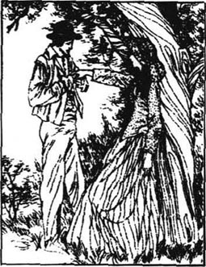
“苔丝，为什么你这么肯定地对我说‘不行’？”
“我不够好。”
“不够一位体面的小姐的标准？”
“是的。你的家庭是不会尊敬我的。”
“你知道，你这么说不对。我的父亲和母亲会尊敬你的，我不在乎我哥哥的看法。”他抱住她，防止她逃开。“你不是当真的，是不是？除非我知道有一天你将属于我，否则我无法工作，无法看书，无法放松或做任何别的事情！苔丝，说你会是我的！”
她只是不断地摇头，看着别处。
“那么，我不应该抱住你，不该这样跟你谈话？为什么，苔丝？”
“我最亲爱的，这是为你好！我不能给予自己这莫大的幸福，答应你我将属于你——因为我确信我不应该！”
“但是那样你会让我幸福的呀！”
“啊，你这样认为，可是你并不知道实情啊！”
这样一番挣扎之后，苔丝会跑到野外或房间里痛哭一场。她的心是如此紧密地和他连在一起，她怕她会屈服的。
“为什么没有人告诉他关于我的事情？”她想，“那儿离这儿只有四十英里远，一定有人知道的！”但是没有人知道，也没有人告诉他。
现在，苔丝的生活包含了两部分，实实在在的快乐和实实在在的痛苦。每当她和安吉尔单独在一起的时候，他都会再问她，而她又会拒绝他。她坚守着自己的承诺，但在内心深处，苔丝知道她终归会接受他的。爱情和自然都劝她去拥有他，而不要想得太复杂，趁着现在的热情享受快乐，而不要考虑将来的痛苦。
“我知道我会答应的——我克制不了！”一天晚上睡觉时，她哭着对自己说，“可是，当他知道那件事情以后，那也许会要他的命的！唉，唉！”
“我给你们大家带来了一些新闻。”星期天上午，当他们坐下吃早饭时，奶场主克里克说道，“还是关于杰克·多洛的事。”
“那个黄油机里的情人？”安吉尔·克莱尔抬起他正在看报纸的眼睛，说道，“他遵守诺言跟那位年轻的挤奶女工结婚了吗？”
“他没有，先生。”奶场主回答道，“他娶了一个比他大的女人，那女人一年有五十英镑收入。他们匆匆忙忙结了婚，然后她告诉他因为结婚，她失去了她的每年五十英镑！他也不过是因为她的钱才娶她的。因此，现在他们一直吵吵闹闹。”
“她应该在他们进教堂之前跟他说。”玛丽安说道。
“她应该看清他只想要她的钱，然后拒绝他，”蕾蒂说道。
“你怎么认为，亲爱的？”奶场主问苔丝。
“我认为她应该……告诉他真相——或者拒绝他……我不知道。”苔丝回答道。她再也咽不下她的饭了。她很快离开了餐桌，跑到了野外，感受着故事中的痛苦。她一直不断地拒绝安吉尔的求婚，但是从星期天开始，他变着法子接近她。他四处寻找她，利用每一个可能的机会跟她说话，不管是挤奶、制黄油还是做奶酪的时候，也不管是在鸡中间还是在猪群里。她知道她抵挡不了多久了。她这么炽烈地爱他，在她眼里，他就是一个神。他对她好得就像不管发生什么情况，他都会爱她、保护她。对于答应嫁给他并告诉他关于自己的事实真相这件事，她的害怕减少了。
现在白天变短了，清晨牛奶场要借助烛光干活。一天凌晨三四点钟之间，在唤醒其他人之前，她跑到楼上克莱尔的房间里，先唤醒他。她正准备下楼，这时安吉尔已经穿好了衣服，从他的房间里走出来，叫住了她。
“小姐，现在，”他的语气很坚决，“你必须给我一个答复，否则我只有离开这个房子。跟我在一起你并不安全。我刚才看到你穿着睡衣。那么，最后你是答应了？”
“我一定会认真考虑的，克莱尔先生。”
“那么叫我安吉尔，而不是克莱尔先生。为什么不叫安吉尔，最亲爱的？”
“那就表明我同意了，不是吗？”
“这只表明你爱我，这是很早以前你就承认过的。”
“那么好吧，如果我必须这么叫的话。安吉尔，最亲爱的。”她微笑着轻声叫道。克莱尔抑制不住要亲吻她那温暖的脸颊。
挤完又撇完牛奶之后，所有奶场的人都出去了。苔丝最后一次慷慨地尝试引起安吉尔对其他挤奶女工的兴趣。
“那里面你可以考虑的远不止三个，”她说，“其中任何一个都比我更适合做你的妻子，而且也许她们和我一样爱你——几乎是一样的。”
“哦，苔丝！”他焦躁地叫道。听到这个，苔丝是那么宽慰，她无法再进一步地作任何自我牺牲了。她知道这天就是作决定的日子。
那天傍晚，安吉尔·克莱尔要赶一辆装着一桶桶牛奶的马车去车站。他说服苔丝跟他一起去。
最初，他们沿着安静的马路赶着车子，谁也没吱声，只是默默地体会着彼此靠近的感觉。不久，开始有雨点滴落下来。苔丝的脸颊微红着，她的长发润湿了。她没有穿外套，不知不觉地偎近了克莱尔。她抓起一块旧布盖在他们身上挡雨。
“嗯，亲爱的，”安吉尔说话了，“我的问题考虑得怎样了？”
“我很快就会答复你的。”
“在我们到家之前？”
“我会尽力。”
他们经过了一座旧房子。安吉尔解释说，这是一个让人好奇的地方，它属于一个叫做德伯的古老家族。
“一个高贵的家族消逝时是会让人伤感的。”他说。
“是啊。”苔丝说。
终于，他们到达了车站，看着牛奶被搬上了火车。苔丝看呆了。
“伦敦人会在早餐时喝到它们，是不是？那些人不知道我们冒着雨赶了这么远的路，就为了让他们能及时喝到牛奶。”
“确实如此，不过，我们赶车还有一点点我们自己的事情。苔丝，现在，”当他们在夜色中驱车离开时，他急切地问道，“你的心是属于我的，为什么不能答应嫁给我呢？”
“我唯一的理由是因为你……我有一些事情要对你说——我必须告诉你我过去的生活！”
“亲爱的，要是你愿意，你就对我说吧。我想你就如那儿的鲜花一样有着丰富的经历！”
“我在马勒特村长大。在学校读书的时候，他们说我会成为一个好老师的，但是我们家有点困难。父亲工作不很勤快，还喝酒。”
“可怜的孩子！这不是什么新鲜事。”他把她更紧地搂在了身边。
“然后，关于我自己有件不寻常的事。我……我不姓德北，而姓德伯。我是那个拥有我们路过的那座房子的家族的后代。”
“德伯家的人！这就是你的所有经历吗？苔丝？”
“是的。”她虚弱地回答说。
“可是因为这个，我为什么就得少爱你一些呢？”
“奶场主对我说过你嫌恶旧家族。”
他大笑了起来。“嗯，我憎恶这种观念，认为高贵的血统比任何其他事情都重要。但是我对你的新闻真的感兴趣。你自己是怎么想的？”
“我觉得这让人伤心，特别是在这儿，看到这些曾经属于我的祖先的土地。”
“所以，这就是那个可怕的秘密喽！”
她还是没有告诉他。在这最后时刻，她失去了足够的勇气。
安吉尔非常高兴。“苔丝，你知道，这个社会喜欢高贵的姓氏。因为你是德伯家的人，作为我的妻子，他们就会更好地接受你。甚至我母亲都会更喜欢你的。从今天开始，你一定要用德伯这个姓氏。”
“我更喜欢另外那个姓。”
“但是你必须这样！顺便提一句，在逐猎林附近已经有人袭用德伯这个姓氏了。是的，就是那个人辱骂了我的父亲。多奇怪啊！”
“安吉尔，我宁愿不要那个姓！”
“喂，苔丽莎·德伯，你是说不过我的。那就用我的姓吧，这样你就可以避开你的姓了！”
“要是你确信这会使你幸福，而且你确实非常非常希望娶我的话……”
“我确实是这样的，最亲爱的，当然是这样！说你将永远属于我！”
他抱住她并亲吻她。
“是的！”她一说出这话，便剧烈地抽噎起来。安吉尔大吃一惊。
“为什么哭了？”
“我哭，是因为我曾发誓我将终生不嫁！唉，有时我真希望自己从没出生过！”
“苔丝，如果你真心爱我的话，你怎么能这样想呢？我希望你能用什么方式来证明你的爱。”
“这样做是不是能更好地证实呢？”苔丝迫切地叫道。她抱紧他，亲吻他。克莱尔第一次感受到一个充满激情的女子亲吻的滋味。苔丝以发自内心的爱，亲吻着她全心全意爱着的男人的双唇。
“你看——现在你可相信了吧？”她抹着眼泪问道。
“相信了。其实，我从来没有怀疑过——从来没有！”
他们在黑夜中继续驱车赶路，在那块布下缩成了一团。
“我必须给我母亲写封信，”她说。
“当然啦，宝贝。她住在哪儿？”
“在马勒特村。”
“啊，那么我以前的确见过你……”
“是的，那时候你不愿和我跳舞。哦，我希望这不意味着什么坏运气！”
在作了这个决定之后，苔丝给她母亲写了一封紧急的信。这是她收到的回信：
亲爱的苔丝：
我希望你和我一样，一切都好。听说你不久就要结婚，我们都很高兴。但是，苔丝，对你提出的问题，回答是，不管怎么样，千万不要告诉你未来的丈夫任何有关你过去的遭遇。没有哪个姑娘会这么傻的，况且这是很久以前的事了，又根本不是你的过错。记住你答应过我，你永远不会告诉任何人的。代我问候那个年轻人。
爱你的妈妈
苔丝不能接受母亲对于人生的看法，但也许在这件事上，琼是正确的。保持沉默看来是让安吉尔快乐的最好办法。因此，她变得平静了，而且从10月以来，她一直沉浸在无比的幸福中。克莱尔像是一位绝好的老师、思想家和朋友。她从他的容貌、他的智慧和他的灵魂中找到了完美。在心里，她摆脱了过去。
像订了婚的乡下人那样，他们在一起度过了所有的时光。在壮丽的秋日午后，他们在小溪旁漫步，从小木桥上走过。他们在树木和篱笆的影子中看到轻薄的蒙蒙烟雾，而与此同时，田野上阳光灿烂、明媚。太阳离地面那么地近，它把克莱尔和苔丝在前面的影子拉到了四分之一英里长，就像伸出了两根长长的手指。当克莱尔对苔丝讲起他们的将来，还有他们将会在国外拥有的农场时，她几乎不能相信自己将会陪伴在他身旁，穿越这个世界。她对他的感情现在就如同维系苔丝身心的呼吸或生命一样。这让她忘记了过去的悲伤，但是她知道这些悲伤就像伺机等候的狼一般，在等待出击的时刻。
有一天，她对克莱尔大声喊道：“为什么当我十六岁的时候，你不留在我身边爱我？当你在马勒特村跳舞的时候？哦，为什么你不那样做？”
“啊，我会的！如果我早知道的话！但是你不必这么哀怨地感到遗憾！为什么你会这样想？”
她迅速地掩饰起她的感情，说道：“那样的话，比起现在来，我就可以多拥有四年你的爱！”
他们有必要把他们准备结婚的事告诉奶场主和他的妻子。那天晚上，当苔丝走进卧室时，另外三个女工都在等着她。
“你就要嫁给他了！”玛丽安说。
“是的，某一天。”苔丝说道。
“嫁给他，嫁给一位绅士！”伊茨说。
“不可思议，”玛丽安说，“想想苔丝要成为他的太太了，她并不是一位体面的小姐，而只是生活得跟我们差不多的一个姑娘。”
“你们都会为此恨我吗？”苔丝轻轻地问道。
“我想要恨你，可是又恨不起来！”蕾蒂说。
“我也是这种感觉！”玛丽安和伊茨说道。
“他应该在你们中间娶一个。”苔丝说，“你们都比我好！”
“不，不，亲爱的苔丝，”她们一起说。
“即使是现在，我想我也应该让他娶你们当中的一个！”她抽泣着说道。她们走到她身边，安抚她，并扶她上了床。在她们入睡之前，玛丽安轻轻说道：“苔丝，你成了他太太之后会想起我们的，想起我们怎么不能恨你，因为我们从没指望过被他看中。”
姑娘们不知道，苔丝听到这些话时，哭得更厉害了。她决定把自己所有的经历都告诉安吉尔。
因为这个，她不想定下婚期。她只想保持现状，不愿继续往前走入新的生活。但是很快，情况变得很明显，那就是奶场主在一年中的这个时候不再需要这么多挤奶女工了。苔丝将不得不在圣诞节的时候离开。
“恐怕对此我感到很高兴，”安吉尔对她说，“因为现在我们必须决定什么时候结婚啦！我们不能永远这样下去。”
“我希望我们能够如此。我希望永远是甜蜜的夏天和悦人的金秋，而且有你永远爱着我！”
“我永远爱你！”
“哦，我知道你会的！安吉尔，我愿意定下那个日子！”
于是，他们把婚期定在了12月31日。婚礼打算在牛奶场举行，尽可能地不张扬。现在，苔丝觉得自己无力阻止事情的进展，只是顺从地听任安吉尔安排。实际上，安吉尔的计划有点仓促，他本来没打算这么快结婚的，但是他想把她留在身边，帮助她读书、学习，以便日后可以自豪地把她像一位小姐似地带到他父母面前。同时，他计划花一段时间到一个面粉加工厂学习作业。他们可以在那座原来属于德伯家的旧农舍里度蜜月，同时，安吉尔可以在附近的面粉厂学习。
那个日子，那个令人无法忍受的婚礼日期，越来越临近了。他的妻子，苔丝自言自语道。这可能吗？
圣诞节的前一天，安吉尔和苔丝决定花一天时间一起去购置一些东西。他们坐着一辆借来的马车来到了镇上。这里到处都是陌生人，他们都盯住挽着安吉尔胳膊、漂亮又快乐的苔丝看。那一天的采购结束时，苔丝正等着安吉尔去牵马拉车，这时，街上有两个男人从她身边经过。
“她真是个讨人喜欢的处女。”其中一个对他的朋友说。
“她讨人喜欢，这没错。但是她可不是什么处女。”另一个回答道。
安吉尔恰好在这时回来，听到了这些话。对苔丝的这种侮辱让他怒不可遏，他对准那人的脸就是一拳。那人赶紧说道：
“对不起，先生。我刚才一定是搞错了。”
安吉尔接受了道歉，给了那人一点儿钱，道了声晚安，就和苔丝驾车离开了。那两人朝相反的方向走去。
“是弄错了吗？”另一个人问道。
“绝对没有。”他的朋友说。
在回家的路上，苔丝非常地严肃。她觉得她不能把事情的真相当面告诉他，不过还有别的办法。于是她回到自己的房间，写了一封四页长的信，信中详实地描述了三四年前所发生的事情。晚上，她蹑手蹑脚地走到安吉尔的房间，把信从门底下塞了进去。
第二天早晨，她焦虑地看着他，但是他亲吻她时和平常没什么两样。关于那封信，他只字未提。他读过信了吗？他宽恕她了吗？每天早晚，他都一如既往，终于，他们结婚的喜日子到了。
苔丝没有邀请她在马勒特的家人。安吉尔给他的家人写了信。他的哥哥们没有答复，他的父母来信说，他们希望他不要草率地结婚，但是他已经足够大了，可以为自己做主。安吉尔并不介意，因为他打算几个月后，把苔丝不仅作为一个挤奶女工，还作为一个德伯家的人介绍给父母。
苔丝还在为她那封自白书忧心忡忡。她悄悄地离开了正在楼下忙碌着的人群，轻手轻脚地来到了安吉尔的卧室。在那儿，她发现她的信原封未动地塞在地毯下。他还没有见到这封信。可现在她不能让他看这封信了，因为婚礼正在准备当中。她找到了与他单独待一会儿的机会。
“我必须向你坦白我所有的过错！”她说道，尽量把话说得柔和一些。
“今天不行，我的宝贝儿！往后我们会有充裕的时间！那时我也要坦白我的过错！”
“那么，你是真地不想让我说喽？”
“是的，苔丝，的确是这样。”
从现在开始，她只有一个渴望，就是称他为丈夫。然后如果需要有人去死的话，那就让她去好了。她像在一片云雾中活动着。
教堂里只有寥寥数人。有一会儿，她用自己的肩膀碰碰他的手臂，好让自己确信他真的在那儿。只是到了她走出教堂时，她才注意到这辆载着他们回去的马车。她觉得她一定是在梦里见过它。
“啊，也许你知道德伯家马车的故事。”安吉尔说，“这辆马车让你想起了它。过去，有一个德伯家的人曾在他的马车里犯下了罪，从那以后，德伯家的人总会看到或听到那辆旧马车，当他们……但是，谈论这个太让人沮丧了。”
“安吉尔，是当我们要死的时候，或是当我们犯了罪的时候吗？”
“别说啦，苔丝！”他亲吻着她。但她已经虚弱不堪了。她现在已成了安吉尔·克莱尔夫人，但实际上，她难道不是亚历山大·德伯夫人吗？
那天傍晚时分，他们离开了牛奶场。牛奶场的所有人都来为他们送行。克莱尔向每一个挤奶女工亲吻告别。当他向奶场主致谢时，一只公鸡恰好在他面前啼叫开了。
“那可不吉利！”奶场工们相互窃窃私语。“当公鸡冲着丈夫那样叫时……”他们在背后取笑起来。
“走开！”克里克先生冲着公鸡喊道。后来他对他的妻子说：“为什么公鸡一定要对着克莱尔先生那样啼叫呢？”
“这只表明天气要变了，”克里克夫人说，“不是你想的那样。那是不可能的。”
苔丝和安吉尔来到这座德伯家的旧农舍。整座房子空无一人。但是，会有一个女人来给他们做饭，打扫房子。他们一起吃茶点，克莱尔能和苔丝用同一个盘子进餐了，他感到非常高兴。他看着她，心想：“我意识到了我对这个女人有多重要吗？我又必须怎样去照顾她？我必须永远不忘考虑她的感受！”
夜幕渐渐降临，外面开始下雨了。终于，从牛奶场来了一个人，送来了他们的包裹。
“先生，很抱歉，我来晚了。”他说，“但是牛奶场刚刚发生了些可怕的事情。你还记得公鸡打鸣吗？唉，不管那预示着什么，可怜的小蕾蒂·普里德尔想淹死自己！”
“出了什么事？”安吉尔问道。
“是这样，在你们离开以后，她和玛丽安从一个酒店走到另一个酒店，不停地喝酒。后来，有人在河里发现了蕾蒂，又有人发现玛丽安醉倒在一块田里！”
“那么伊茨呢？”苔丝问道。
“伊茨还像平常那样待在家里，但是非常伤心沮丧。”
这人离开了，苔丝神色凄怆地坐在壁炉旁，注视着炉火。她们都是从未被人爱过的朴实、纯洁的姑娘。而她没有付出任何代价，就获得了所有的爱，这是不道德的。她会偿付的：就在此时此地，她要把一切都讲出来。
安吉尔坐在她的身旁，握着她的手。在炉火的烘照下，他们的脸红彤彤的，
“今天上午，”他突然说道，“我们说过我们都要坦白自己的过错。有些事情，我必须告诉你，而你一定要宽恕我。也许我应该早些告诉你。我一直拖到现在才告诉你，是因为我不想失去你。”
“安吉尔，我一定会宽恕你……”急切的希望加快了苔丝的心跳。
“不过，先等一等。你知道我对美德和纯洁有多么笃信。可是，我自己，几年前在伦敦时，却糊里糊涂地和一个女人做了坏事。我们在一起度过了两天时间。回到家以后，我再也没干过类似的事情。你会宽恕我吗？”
“哦，安吉尔，当然，我会的！可以说，我的心情倒好些了，因为现在你能宽恕我了！我也有要坦白的事。”
“啊，是的，好好坦白吧，你这个小坏蛋！不会比我的更严重了吧。”
“不会的，是的，不会的！”由于充满了希望，她快乐地跳了起来。“是的，实际上，它们完全一样。我现在就讲给你听。”
她又坐了下来。他们的手握在一起。炉火燃烧得如同末日审判的火焰一般。她的身影被长长地映在了墙上。她把头靠在他的头上，勇敢地把自己与亚历克·德伯的相遇及其结果统统告诉了他。
chapter-a135_ 14 The Woman Pays
The Woman Pays
Chapter 14
Her story came to an end. She had not raised her voice: she had not cried. But things seemed to change as the story progressed. The fire looked as if it was laughing at her troubles. All the objects around her appeared not to care about her tragic history. And yet it was only a short time since he had been kissing her. Everything looked different now.
Clare stirred the fire. It was unnecessary, but he felt he had to do something. He had not really taken in the whole story yet. He stood up. Now as he began to understand the story in its full horror, his face was like an old man's. He made uncertain movements, because everything in his head was vague and uncertain. He could not make himself think clearly.
'Tess! Can I believe this? Are you mad perhaps? My wife, my Tess—you aren't mad, are you?'
'I am not,' she said.
'And yet,' he said, looking strangely at her, 'why didn't you tell me before? Oh yes, you would have told me, in a way, but I stopped you, I remember!'
He was talking but could not think at the same time. His brain seemed to have stopped working. He turned away from her. Tess followed him and stood there staring at him with dry eyes. Then she went down on her knees beside him.
'In the name of our love, forgive me!' she whispered with a dry mouth. 'I have forgiven you for the same!'
And as he did not answer, she said again,
'Forgive me as you are forgiven! I forgive you, Angel!'
'You—yes, you do.'
'But you do not forgive me?'
'Oh, Tess, it's not a question of forgiveness! You were one person, now you are another. How can forgiveness put that right?'
He paused, considering this. Then suddenly he started laughing in an unnatural, horrible way. It was like a laugh out of hell.
'Don't—don't!' she cried, her face dead white. 'It kills me, that laugh! Angel, do you know what you're doing to me? I've been hoping, longing, praying to make you happy!'
'I know that.'
'I thought, Angel, that you loved me—me, my very self! If you do love me, how can you treat me like this? It frightens me! Having begun to love you, I will love you for ever, in all changes, in all troubles, because you are yourself. I ask no more. Then how can you, my husband, stop loving me?'
'I repeat, the woman I have been loving is not you.'
'But who is she?'
'Another woman in your shape.'
Suddenly she realized how he saw her. For him she was a guilty woman pretending to be an innocent one. There was terror in her white face as she saw this. She could not stand, and he stepped forward, thinking she might fall.
'Sit down,' he said gently. 'You are ill, and I am not surprised.'
She sat down, her face still full of fear and her eyes wild.
'I don't belong to you any more then, do I, Angel?' she asked helplessly. And at last the tears came. Clare watched her sobbing, and waited until the first violence of her emotion had passed.
'Angel,' she said suddenly in a normal voice, 'am I too wicked for us to live together?'
'I haven't had time to think what we should do.'
'I won't ask you to let me live with you, Angel, because I have no right to! I won't write to tell my family we are married, as I said I would.'
'Won't you?'
'No, I won't do anything unless you order me to. And if you go away, I won't follow you. And if you never speak to me again, I won't ask why, unless you tell me I can.'
'And if I order you to do anything?'
'I'll obey you, even if I have to lie down and die.'
'How good of you. But it seems you have changed. In the past you were keen to look after yourself. Now you are keen to sacrifice yourself.'
Clare's bitter words, however, were not fully understood by Tess. She only knew that he was angry with her. She stood silent, not knowing that he was struggling with his love for her. She did not observe a large tear rolling slowly down his cheek. He was realizing what a change Tess's confession had made to his whole life. He had to decide on some action.
'Tess,' he said, as gently as he could, 'I can't stay here just now. I'm going out.'
He quietly left the room. Two glasses of wine, ready for their supper, remained untouched on the table. Only two or three hours earlier they had drunk tea from the same cup.
As he closed the door behind him, Tess jumped up. He had gone: she could not stay. She put out the candles and followed him. The rain was over and the night was now clear.
Clare walked slowly and without purpose. His shape was black and frightening. She walked just behind him. There was water on the road, where the stars could be seen reflected. Away from the house the road went through the fields. She followed Clare as a dog follows its owner.
Eventually Tess could not help speaking to him.
'What have I done? Nothing interferes with my love for you. You don't think I planned it, Angel, do you? I would not deceive you like that!'
'H'm, well. No, maybe you would not, but you are not the same. No, not the same. But don't make me blame you.'
She went on begging for forgiveness. Perhaps she said things that would have been better left to silence.
'Angel! Angel! I was a child when it happened. I knew nothing of men.'
'I admit it was not so much your fault as his.'
'Then won't you forgive me?'
'I do forgive you, but forgiveness isn't everything.'
'And do you love me?'
He did not answer this question.
'Oh Angel—my mother says she knows several cases which were worse than mine, and the husband has not minded much... well, he has accepted it at least. And in those cases the woman hasn't loved him as I love you!'
'Don't, Tess, don't argue. Those are just country people's ways. There is a correct way of doing things. I think that parson who discovered you were a d'Urberville should have kept quiet. Perhaps you were weak and could not refuse this man because your ancient noble blood has run thin, because your family is no good any more. I thought you were a child of nature, but you have the worst of your ancient family in you!'
Tess accepted his bitterness, not understanding the details. He did not love her as he had done, and nothing else mattered.
They went on again in silence. They walked slowly for hours, with sad anxious faces, not talking, one behind the other, like a funeral procession.
Tess said to her husband:
'I don't want to cause you sadness all your life. The river is down there. I can put an end to myself in it. I'm not afraid.'
'Don't talk like that. Do what I ask, go back to the house and go to bed.'
'I will,' she said obediently.
When she returned to the house, she found everything as they had left it and the fire still burning. She went to the bedroom. There was a mistletoe branch hanging above the bed. Now she understood why Angel had brought a strange parcel with him. It was to surprise her. He had delightedly hung it there. Now it looked foolish and out of place.
As she had nothing more to fear, and nothing more to hope for, she lay down. In a few moments lonely Tess was asleep, in the bedroom once used by the young wives of her ancestors.
Later on that night Clare also came back to the house. He prepared a bed downstairs, but crept shoeless upstairs to see if Tess was asleep. He was relieved to see her sleeping deeply. And yet he felt he alone had the whole worry of what action to take, and the responsibility for her life as well as his. He turned away from her door, and then turned back again, pulled by his love for her. But his eye was caught by a painting on the wall of one of Tess's ancestors, a proud fierce woman, who looked as if she hated and wanted to deceive all men. He thought she and Tess looked alike. That was enough to stop him, and he went downstairs to his lonely bed.
He looked calm and cold, full of self-control. His face showed he had fought against passion and won, but did not like being the winner. He still found it difficult to accept that Tess, the pure village maiden, was not what she seemed. How unexpected life could be! He put out the candle. The night came in, unconcerned and uninterested, the night which had swallowed up his happiness.
raise v. move from a low(er) to a high(er) level. 提高。
stir the fire use the poker in the fire. 拨火（使旺）。
horror n. (sth that causes a) feeling of extreme fear or dislike. 恐怖。
whisper v. speak, say (sth), using the breath but no vibration of the vocal cords. 低语。
pray v. commune with God. 祈祷。
repeat v. say or do again. 重复。
shape n. outer form. 外形。
guilty adj. having done wrong. 有罪的。
gently adv. in a mild manner. 温和地。
normal adj. in agreement with what is representative, usual, or regular. 正常的。
obey v. do what one is told to do. 服从。
sacrifice v. give up sth of great value to oneself for a special purpose, or to benefit sb else. 牺牲（自己利益）。
roll v. cause to move along on wheels or by turning over and over. 滚动。
reflect v. (of a surface) throw back (light, heat, sound). 反射。
interfere v. hinder or prevent. 妨碍；干扰。
blame v. fix on sb the responsibility for sth done (badly or wrongly). 责备。
admit v. acknowledge. 承认。
weak adj. lacking in strength. 弱的。
funeral n. of or for a burial or cremation of a dead person with the usual ceremonies. 葬礼的。
procession n. number of persons moving forward and following each other in an orderly way. 队伍。
mistletoe n. parasitic evergreen plant (growing on fruit and other trees) with small white sticky berries. 槲寄生。
branch n. arm-like division of a tree, growing out from the trunk, or a bough, or another branch. 树枝。
unconcerned adj. not involved in. 不相干的。
第十四章 吃亏的是女人
第十四章 吃亏的是女人
她的故事叙述完了。她没有提高声调：她没有哭。但是随着故事的发展，事情像是发生了变化，炉火像是正在嘲笑她的遭遇。她周围的一切对她的悲惨遭遇似乎都漠不关心。然而，就在不久以前，他还亲吻着她。现在，一切都显得变了样。
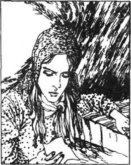
克莱尔拨弄着炉火。虽然没必要，但他觉得他必须做点什么。他还没有完全真正领会这整个故事。他站起来。现在，当他开始体会到这故事全部可怕的内涵时，他的脸变得像一张老人的脸。他茫然地走来走去，因为他脑子里的一切都是模糊而不确定的。他无法让自己冷静、清晰地思考。
“苔丝！我能相信这些吗？也许你是疯了？我的妻子，我的苔丝——你没有疯，是吗？”
“我没有疯，”她说。
“可是，”他神情怪异地看着她，说，“为什么以前你不告诉我？哦，是的，你本来会告诉我的，可以这么说，但是我没让你说，我记起来了！”
他在说话，但与此同时，他仍无法思考。他的头脑好像不听使唤了。他转过身离开她。苔丝跟上去，站在一边用那双无泪的眼睛望着他，然后在他身边跪了下来。
“看在我们相爱的份上，宽恕我吧！”她口干舌燥地喃喃说着，“同样的事情，我可是已经宽恕你了呀！”
他没有回答，因此她又说道：
“像你得到宽恕那样宽恕我吧！我宽恕了你，安吉尔！”
“你——是的，你宽恕了我。”
“可是你不宽恕我吗？”
“啊，苔丝，这不是宽恕不宽恕的问题。你从前是一个人，现在你是另外一个人了。这怎么是宽恕能改变得了的呢？”
他住了口，想了一想。接着，他突然狂笑起来，笑得那么怪异，那么可怕，犹如从地狱里发出的笑声。
“别——别这样！”她叫道，脸色煞白。“你这么笑，会吓死我的！安吉尔，你知道你正在对我做什么吗？我一直期待着、盼望着、祈祷着使你幸福！”
“这我知道。”
“安吉尔，我本来以为，你是爱我的——爱我，就是爱我这个人哪！如果你真的爱我，你怎能这样对我呢？我害怕极了！既然爱上了你，我就会永远爱着你。不论遇到什么变故，不论遭受什么困难，我都会爱你，永远地爱你，因为你就是你呀！我别无他求了。那么，为什么你，我自己的丈夫，会不再爱我了呢？”
“我再说一遍，我一直爱着的女人并不是你。”
“那是谁呢？”
“和你长得一样的另外一个女人。”
她突然意识到他是怎样看待她的。在他看来，她是一个假装清白的罪人。当她明白了这一点时，她惨白的脸上露出了惊恐的神色。她支撑不住了，他走上前去，以为她要跌倒了。
“坐下吧，”他轻声说道，“你病了，这并不让我感到意外。”
她坐了下来，依旧是满脸的恐惧，眼睛里也满是惊恐。
“安吉尔，我不再是你的人了，是吗？”她无可奈何地问道。终于，她的眼泪流了下来。克莱尔看着她啜泣，一直等到她第一次的感情狂澜平息下去。
“安吉尔，”她突然开口了，声音已恢复正常。“我是不是太坏了，使得我们不能生活在一起？”
“我还没有时间考虑我们该怎么办。”
“我不会要求你让我和你一起生活的，安吉尔，因为我没有这样做的权利！我也不会写信给我家里人说我们结婚了，这信我原先说过要写的。”
“你不写了吗？”
“是的，我什么也不做，除非你要我去做。如果你离开我，我不会跟着你。如果你不再对我讲话，我也不会问为什么，除非你说我可以问。”
“那么要是我真的要你做什么呢？”
“我会服从的，即使是你要我躺下死去也行。”
“你真好。但是，你像是已经改变了。过去，你热切地想照料自己；现在，你热切地要牺牲自己。”
然而，苔丝并没有完全领会克莱尔这些酸楚的话语。她只知道他对她生气了。她静静地站着，不知道他正在同他对她的爱作斗争。她没看到一大滴泪珠正顺着他的面颊慢慢滚落下来。他正在逐渐认识到苔丝的坦白给他的整个生活带来的变化。他必须决定采取某种行动。
“苔丝，”他尽可能温和地说，“这一会儿，我在这儿待不下去了，我要出去走走。”
他悄悄地走出房间，为晚餐准备的两杯酒仍然放在桌子上，不曾动过。就在两三个小时前，他们还用同一个茶杯共饮过一杯茶。
当他把门关在了身后时，苔丝跳了起来。他已经走了，她也待不住了。她熄掉蜡烛，跟了出去。雨已停息，夜色现在也晴朗了。
克莱尔漫无目的地缓缓走着，他的身影漆黑吓人。她只是跟在他后面走。路面上积了水，可以看到星星在里面反射的光芒。从房子出来的这条路通向田野。她就像一条跟着主人的家犬一般跟随着克莱尔。
终于，苔丝忍不住跟他说话了。
“我做了什么啊？没有任何事情妨碍我对你的爱。你不会以为我以前是有意那样做的吧，安吉尔，是不是？我不会那样欺骗你的！”
“嗯，好啦。是的，也许你不会，但你不一样了。是的，不一样了。但是，不要逼我责怪你。”
她继续乞求他的宽恕。也许当时她保持沉默比说这些话还好些。
“安吉尔！安吉尔！出那件事的时候，我还是个孩子！我对男人的事儿一点都不懂呀！”
“主要是他的罪过，这我承认。”
“那么，难道你还不宽恕我吗？”
“我是宽恕你了，但是宽恕并不等于一切。”
“那你还爱我吗？”
他没有回答这个问题。
“哦，安吉尔——我母亲说她知道好几件这样的事情，她们的情况比我的更糟，但做丈夫的并不是非常介意……是的，他们至少可以接受它。而那些事例中，女人爱她的丈夫并没有像我爱你这么深！”
“别，苔丝，别争辩了。那些只不过是乡下人的方法。做事情总有一个合乎体统的方法。我认为那个发现了你姓德伯的人应该什么都别说。你柔弱，你无力拒绝那个男人，也许是因为你的古老高贵的血统已经变得稀少，因为你的家族已不再体面堂皇。我原以为你是大自然的孩子，但是你却带有那个古老家族里最坏的东西！”
苔丝接受了他这一番谴责之辞，没有去理解它的细节。他已不像过去那样爱她了，别的一切都无关紧要。
他们继续无言地走着。带着悲哀忧虑的神情，一言不发地，他们就这样一前一后地慢慢走了几个小时，就像一支送葬的队伍。
苔丝对她的丈夫说：
“我不愿让你的一生都这么痛苦。那儿就有一条河，我可以在那里结束我的生命。我不害怕。”
“不要再说这样的话了。我怎么说你就怎么做，现在回到房子里去，上床睡觉。”
“我会的。”她顺从地说道。
返回房子时，她发现一切都同他们离开时一样，炉火还在燃烧着。她径直到了卧室。床上方挂着一束桑寄生藤枝。现在她明白了为什么安吉尔随身带了一个奇怪的包裹。他是要给她一个惊喜。他高高兴兴地把它挂在了那儿，可是现在它看起来又傻气又不合时宜。
因为她已经没有什么可以惧怕，也没有什么可以期待的了，她躺了下来。过了一会儿，寂寞的苔丝睡着了，在那间曾被她的祖先们的年轻妻子使用过的卧室里睡着了。
那晚夜深时，克莱尔也回到了屋里。他在楼下准备了一张床，但他光着脚，蹑手蹑脚地走到楼上看看苔丝是否睡着了。看到她已熟睡，他放宽了心。但是他感到，他一个人要全部承担该采取什么行动的焦虑，并且对她和他自己的生活负责了。他转身离开她的房门，又被他对她的爱给拉了回来。但是，他冷不防看到了墙上一幅苔丝祖先的画像，一个自负凶恶的女人，看起来就像是她憎恨并要欺骗所有的男人。他感到她和苔丝有相像之处。这就足以让他止步了，他到楼下自己那张孤独的床上去了。
他看起来沉静又冷峻，充满了自制力。他的神情显示出他经历了一场与情欲的战斗，而且他赢了，但他却不喜欢成为这样一个胜者。他依然觉得他难以接受这个事实：苔丝，一个纯洁的乡村少女，竟不是她看起来的这样。生活有时是多么出乎意料啊！他熄灭了蜡烛。夜在漫不经心、漠然地一点点降临，就是这夜吞没了他的幸福和快乐。
chapter-a135_ 15
Chapter 15
When Clare woke up the next morning, the sky was grey and the sun was not shining. The fireplace in the room was full of cold ashes. The two full glasses of wine still stood untouched on the table.
When the cleaning woman came, he sent her away, not wanting a third person in the house. He found wood to make a fire, and prepared breakfast. People passing the farmhouse saw the smoke rising from the chimney, and envied the newly-married couple in their happiness.
'Breakfast is ready!' he called upstairs in a normal voice.
Tess came down immediately. She was already dressed, but her hands and face were cold. She had no fire in her bedroom, where she had been sitting waiting for his call, and staring at the dying mistletoe. Clare's polite words gave her a moment of hope, which died, however, when she saw his face.
They were both, in fact, the ashes of their former fires. After last night's passionate sorrow, they both felt heavy and lacking in energy.
Tess went up to Angel, touching him lightly with her fingers. Was this really the man who once loved her? Her eyes were bright, her cheeks still round, but her lips were pale. She looked absolutely pure. Angel looked at her in wonder.
'Tess! Say it isn't true! It can't be true!'
'It is true.'
'Every word?'
'Every word.'
He would almost have preferred her to lie, so that he could believe her blindly, but she repeated, 'It is true.'
'Is he living?' asked Angel.
'The baby died.'
'But the man?'
'He is alive.'
'Is he in England?'
'Yes.'
Despair passed over Clare's face. He moved vaguely around the room.
'Look,' he said, 'I thought—any man would have thought—that if I didn't look for knowledge, good family, and wealth in a wife, if I sacrificed all that, I would be sure of finding a country girl who was at least pure... but... but I should not accuse you.'
Tess understood his feelings perfectly. She saw that he had lost in every way.
'Angel—I would not have married you if I had not known that, after all, there is a way out for you... only I hoped you would never...' She was close to tears.
'A way out?'
'You can divorce me.'
'Good heavens! How can you be so stupid? How can I divorce you?'
'Can't you, now I have told you everything?'
'Oh Tess, you are so childish! You don't understand the law. No, I can't.'
There was shame and misery in Tess's face.
'I thought you could,' she whispered. 'Don't think I planned this! I really believed you could take that way out. Oh, then I ought to have done it last night. But I didn't have the courage. That's just like me!'
'The courage to do what?' he asked.
'To put an end to myself.'
'Where?'
'In the bedroom, under your mistletoe. With the rope from my box. But I couldn't in the end! I was afraid that people would talk and you would suffer from that.'
Clare was shaken by this unexpected confession.
'Now, listen. You must never think of such a wicked thing again. Promise me as your husband never to do anything like that.'
'I promise. I see it was wicked. But, Angel, it was to set you free, and to avoid a divorce, which everyone would talk about. But dying by my own hand is too good for me. You, my husband, should kill me. I think I would love you more, if that were possible, if you could bring yourself to do it. I am so much in your way!'
'Quiet! Don't talk about it.'
'Well, just as you wish. I will do whatever you like.'
They sat down to breakfast, tired and sad. They did not look at each other and they did not eat much. Angel left soon afterwards to start his studies at the flour-mill nearby. Tess cleared the ashes from the fireplace, cleaned the house and prepared the lunch, waiting for his return. At lunch they talked politely of work at the flour-mill and methods of milling. In the afternoon he went back to the mill, and in the evening he studied his books and papers. Tess felt she was in his way and went to the kitchen. He came to find her there.
'Don't work in the kitchen like this,' he said. 'You're not my servant, you're my wife.'
She looked happier. 'You mean, I can think of myself as that?' She asked, trembling.
'What do you mean, Tess? You are my wife, of course.'
'I don't know,' she said, with tears in her eyes. 'I told you long ago I wasn't good enough for you. And I'm not good enough! I was right! But you persuaded me!'
She turned her back on him, sobbing as if her heart would break. It would have won round any man but Angel Clare. Deep in him lay a hard Logic, which had resisted the Church, and now resisted Tess. She accepted his treatment of her as being what she deserved. She would never have thought of criticizing his hardness. To her he was still perfection.
Another day passed by in the same way. Only once did Tess try to get closer to her husband. As he was leaving for the flour-mill, she put up her mouth to be kissed. He ignored the invitation, and said goodbye coldly. She felt as if he had hit her. How often had he wanted to kiss her in those happy days at Talbothays!
But on his way to the mill Angel regretted his coldness. He wished he had been kinder to her and kissed her once at least.
So they lived through another day—together in the same house, but more separately than ever before. Clare was desperately wondering what to do. Tess no longer even hoped for forgiveness. That evening she said bravely:
'I suppose you aren't going to live with me long, are you, Angel?' She found it difficult to control the muscles of her face.
'No. How can we live together as man and wife while that man lives? He is your natural husband, I'm not. If he were dead, that might be different. Anyway, have you thought of the future? Have you thought we might have children? They would find out about this. Everybody would talk about it. Can you imagine them growing up under a cloud like that? They would hate you for it.'
Tess's head was bent. Her eyes felt so heavy they were almost closed. 'No, I can't ask you to stay with me,' she whispered. 'I hadn't thought of it like that.'
She had hoped, as women do, that living together for a time would break down his coldness. Being near him every day was her only hope of winning him back. But she had never imagined she might have children who would reject her. She now remembered how she had criticized her mother for bringing babies into the world without being able to look after them. She realized that she might have made the same mistake as Joan Durbeyfield. She completely accepted Angel's argument.
She could have argued that if they went as planned to farm in another country, nobody would know about her past. But perhaps she was right not to argue. A woman knows not only her own sorrow but also her husband's. He might keep the bitterness alive in his heart, even if nobody knew or talked about it at all. She had lost.
On the third day she said, 'I accept what you say. We must separate.'
'But what can you do?'
'I can go home.'
Clare had not thought of that. 'Can you really?'
'Yes. If I am with you all the time, I may persuade you to stay, against your better judgement. Then you and I would both be sorry. I must go.'
'Right,' said Angel. His face was pale but his voice was determined.
Tess was slightly shocked. He had agreed so quickly to her generous offer!
'I didn't like to suggest it,' he said, 'but as you have, I think it's a good idea to part—at least for a while. God knows, we may come together again one day!'
So they both prepared to leave the following day. That night Tess was woken by a noise in the house. At first she thought Angel was coming to her bedroom, and her heart beat wildly with joy. But then she saw his eyes staring emptily ahead of him, and knew he was walking in his sleep. He came to the middle of her room and said very sadly, 'Dead! Dead! Dead! Poor darling Tess! So sweet, so good, so pure! My wife, dead!'
These words, which he would never say when awake, were very sweet to Tess. She would not have moved to save her life. She lay in absolute stillness, trying not to breathe, wondering what he was going to do with her. Her trust in him was complete.
He picked her up and carried her to the stairs. Was he going to throw her down? She knew he was leaving her the next day, perhaps for ever. She almost hoped they would fall and die together.
He continued downstairs, taking her out of the house towards the river. She had given herself totally up to him, and did not care what happened to her as long as she was with him. They arrived at a place where the river was fast and deep, and Angel started to cross it on the narrow footbridge, still holding Tess. Perhaps he wanted to drown her. Even that would be better than separation.
As they crossed, the water rushed fiercely below them. If Tess had moved in his arms, they would both have fallen into the dangerous water. But she had no right to take his life, although her own was worthless, so she stayed still.
Angel walked purposefully towards a ruined church near the river. Against the old wall was an empty stone tomb. In this he carefully laid Tess, and kissing her lips, sighed deeply and happily. He immediately lay down on the ground next to the tomb, and looked fast asleep.
Tess stepped out of the tomb and managed to persuade Angel to walk back to the house, without waking him. It was very cold outside, and both had only night clothes on. She helped him to his sofa bed in the living room, and he still did not wake up.
Next morning he seemed to remember nothing of the night's experiences, and Tess did not refer to his sleepwalking. They finished packing and left the farmhouse, where they had hoped to be so happy. After driving some distance Angel stopped the carriage to get down and continue on foot. Tess was going further on in the carriage. He spoke seriously to her as they separated.
'Now remember,' he said, 'I am not angry with you, but I cannot bear to live with you at the moment. I will try to accept it. But until I come to you, you should not try to come to me.'
The punishment seemed a heavy one to Tess. Had she really deserved this?
'May I write to you?'
'Oh yes, if you are ill or need anything. You probably won't, so I might be the first to write.'
'I agree to the conditions, Angel, because you know best. Only don't make it too much for me to bear!'
That was all she said. If she had sobbed or fainted or begged him, he would probably have given way. But she made it easy for him. He gave her some money and they said goodbye. He stood on the road watching the carriage continue up the hill, secretly hoping that Tess would look back. But she was lying half dead with misery inside. He turned to walk on alone, not realizing that he still loved her.
grey adj. between black and white, coloured like ashes, or the sky on a dull, cloudy day. 灰色的。
ash n. powder that remains after sth has burnt. 灰烬。
envy v. feel disappointed at another's better fortune. 妒忌。
despair n. the state of having lost all hope. 绝望。
divorce v. put an end to a marriage by law. 使离婚。
wealth n. (possession of a) great amount of property, money, etc. 财富。
childish adj. of, behaving like, suitable for, a child; not suited to an adult. 幼稚的。
rope n. (piece or length of) thick strong cord or wire cable made by twisting finer cords or wires together. （一根或一段）坚牢的粗绳。
suffer v. feel or have pain, loss, etc. 受苦。
flour n. fine meal, powder, made from grain, used for making bread, cakes, pastry, etc. 面粉。
mill n. machinery or apparatus for grinding grain into flour. 磨粉机；磨坊。
kitchen n. room in which meals are cooked or prepared, and for other forms of housework. 厨房。
logic n. science, method, of reasoning. 逻辑。
separately adv. in a divided manner. 分开地；各别地。
control v. have authority, power over. 控制；支配。
muscle n. elastic substance in an animal body that can be tightened or loosened to produce movement. （一束）肌肉。
determine v. decide; fix precisely. 决定。
pale adj. (of a person's face) having little colour; bloodless. 苍白的。
judgement n. process of judging. 判断。
empty adj. having nothing inside. 空的。
awake adj. roused from sleep. 醒着的。
footbridge n. bridge for the use of persons on foot, not vehicles. 人行桥。
ruin v. cause serious damage of. 使毁坏。
tomb n. place dug in the ground, cut out of rock, etc, for a dead body, especially one with a monument over it. 墓。
deserve v. be entitled to (because of actions, conduct, qualities). 应该得到。
beg v. ask earnestly, or with deep feeling. 恳求。
第十五章
第十五章
第二天早晨克莱尔睡醒时，天空灰蒙蒙的，没有阳光照耀。房间的壁炉里堆满了冰冷的柴灰。两杯满满的酒仍旧摆在桌子上，不曾被动过。
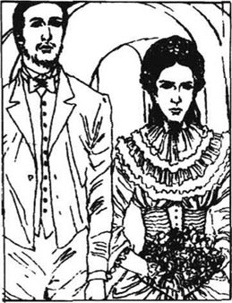
当那个女清洁工到来时，他把她打发走了，他不想房子里有第三个人。他找了些木头，生起了火，开始做早饭。路过这农舍的人看到烟囱里升起炊烟，都羡慕这对幸福的新婚夫妇。
“早饭准备好了！”他用一种平常的声音冲着楼上喊道。
苔丝马上就下来了。她已经穿好了衣服，但手和脸都冰凉冰凉的。她的卧室里没有生火，她就在那儿一直坐着，盯着那束快要枯死的藤枝，等着他叫她。克莱尔彬彬有礼的言谈让她产生了一瞬间的希望，但是，当她看到他的面孔时，这希望消逝了。
实际上，他们俩都是他们从前火焰的灰烬。在经历了昨夜的极度悲痛之后，他们俩都很沉重，而且疲惫不堪。
苔丝走到安吉尔身边，用手指轻轻地碰碰他。这真的就是那个曾经爱过她的男人吗？她的眼睛晶莹明亮，两颊依然丰满圆润，只是她的双唇没有血色。她看起来纯洁得不容置疑。安吉尔惊诧地注视着她。
“苔丝！说吧，那不是真的！那不可能是真的！”
“是真的。”
“句句是真？”
“句句是真。”
他几乎宁愿她撒个谎，这样他就可以睁只眼闭只眼地相信她，但是她重复道：“是真的。”
“他还活着吗？”安吉尔问道。
“孩子死了。”
“可那个人呢？”
“他还活着”。
“他在英国吗？”
“是的。”
一种绝望的神情掠过克莱尔的脸，他茫然地在房间里踱来踱去。
“你瞧，”他说，“我原以为——任何男人都会这么以为的——如果在一个妻子身上，我不寻求学识、好的出身和财富的话，如果我牺牲这一切的话，那么我确信我会找到一个至少是纯洁的乡下姑娘……但是……但是，我不应该谴责你。”
苔丝了解他的感情，知道他已经完全不知所措了。
“安吉尔，假如当时我没有意识到这事对你来说至少还有一条出路的话，我是不会和你结婚的……只是我曾希望你将永远不会……”她说着就要哭了。
“一条出路？”
“你可以和我离婚。”
“天哪！你怎么会这么傻呢？我怎么能同你离婚呢？”
“你难道不能吗，既然我已经把一切都告诉你了？”
“哦，苔丝，你太幼稚了！你不懂法律。不，我不能离婚。”
苔丝的脸上露出了羞愧、痛苦的神情。
“我原以为你能这么做的，”她轻声说，“不要认为我是算计好的！我真的以为你可以用这种方式解脱的。哦，那昨晚我真应该那么做，可是我没有胆量。我这个人就是这样！”
“有胆量去做什么？”他问。
“结束我自己的生命。”
“在哪儿？”
“在卧室里，在你的桑藤下。用我箱子上解下的绳子。但是最终我没做成！我怕人们会议论，你会因此蒙受痛苦。”
克莱尔被这出乎意料的供认惊得发颤。
“现在，听着。你必须永远不再想那样邪恶的事情。向我，向你的丈夫保证你永远不会做出那种事情。”
“我保证。我明白这是邪恶的。但是，安吉尔，这是让你获得自由的办法。这样就可以避免一次让人人都议论的离婚。但是，死在我自己手里对我太宽容了。你，我的丈夫，应该杀了我。如果有这种可能，如果你让你自己这么做的话，我想我会更爱你的。我给你带来了这么多的麻烦！”
“别说了！别再说这个了。”
“好，照你的意思做，无论你想要我做什么，我都会照办的。”
他们坐下来吃早饭，又疲惫又伤心。谁也没看对方一眼，草草地吃了一点儿。安吉尔吃完后很快就离开了，到附近的面粉厂，开始学习技术。苔丝清扫了壁炉里的灰烬，打扫了房子，准备午饭，等着他回来。吃午饭时他们客气地谈了谈面粉厂的工作情况以及加工面粉的方法。下午，他又到面粉厂去了，晚上就看他的书和报纸。苔丝觉得自己妨碍他了，就到厨房去了。他到那儿找到了她。
“不要在厨房里这样干活。”他说道，“你不是我的佣人，你是我的妻子。”
她看起来高兴了些。“你的意思是，我可以这样看待自己？”
“苔丝，你这是什么意思？当然了，你是我的妻子。”
“我不知道。”她说道，眼里噙着泪水。“我很早以前就给你讲过，我不够好，配不上你。现在我也不够好！我是对的！但是你说服了我！”
她转过身去背对着他，心痛欲碎般地啜泣着。这本来会使任何一个男人软下心来，但是安吉尔·克莱尔却无动于衷。在他内心深处，存在着一种坚硬的理性，这种理性让他抵触过教会，现在又来抵触苔丝了。她接受了他对她的态度，把它看作理所当然的。在她眼里，他依然完美。
同样的生活又过去了一天。苔丝只尝试过一次去接近她的丈夫。他要离开到面粉厂去的时候，她凑上她的唇，等他吻她。他对她的主动表示不加理睬，只是冷冷地说了声再见。当时她的感觉就像挨了他的打。在塔尔勃塞那些快乐的日子里，他是多么经常地想要吻她啊！
但是在往面粉厂去的路上，安吉乐对自己的冷酷无情感到后悔。他真希望自己刚才能对她好一些，至少吻她一下。
于是，他们又捱过去了一天——一起生活在同一幢屋里，可是彼此间的距离却比以往任何时候都大。克莱尔拼命地考虑该怎么办。苔丝对得到宽恕甚至都不再抱希望了。那天晚上，她勇敢地说道：
“我猜想你不打算同我长久地一起生活，是吗，安吉尔？”她发现想控制面部的肌肉真是困难。
“是的。那个人还活着，我们怎么能像夫妇那样一起生活呢？他是你实质上的丈夫，而我却不是。如果他已经死了，情况也许会不同。不过，你考虑过将来没有？考虑过我们也许会有孩子吗？他们会知道这件事，人人都会议论它。你能想象他们在那样的阴影中成长吗？他们会因此而恨你的。”
苔丝的头垂下去了。她的眼睛感到沉重得几乎要闭上了。“不，我不能要求你和我在一起，”她轻声说道，“我还从没考虑过那些事情。”
她本来希望，像所有女人们会做的那样，一起生活一段时间会消除他的冷漠。她赢回他的心的唯一希望便是每天都伴在他身旁。但她从来都没想过她也许会有孩子，而他们会排斥她。她现在想起来她怎样地责怪过她母亲，说她无力照管孩子，却把他们带到这个世界来了。她意识到，她也许会和琼·德北犯同样的错误。她完全接受了安吉尔的论点。
她原可以争辩说，他们可以按照原计划到另一个国家的农场去，在那儿，没有人会知道她的过去。但是她没有争辩，也许这是对的。一个女人不但了解自己的痛苦，而且了解她丈夫的痛苦。即使根本没有人知道或提起这件事，他也许还是会让这份苦楚存在他心里。她已经输了。
到了第三天，她说：“我接受你讲的道理。我们必须分开。”
“但是你怎么办呢？”
“我可以回娘家。”
克莱尔不曾想到过这事。“你真的行吗？”
“是的，如果我和你朝夕相处的话，我也许会说服你留下来，这有悖你更为合理的判断，然后我们俩都会后悔的。我必须走。”
“你说得对，”安吉尔说。他的脸很苍白，但他的语气很坚决。
苔丝微微有些震惊。对她慷慨大方的提议，他竟同意得这么快！
“我并不想提出这个建议，”他说，“但是你既然提出了，我认为分开是个好办法——至少分开一段时间。上帝知道，也许有朝一日，我们又会走到一起的！”
于是两个人都准备第二天离开。当晚，苔丝被房子里发出的声响惊醒了。起先，她以为是安吉尔到她卧室来了，她的心欢喜得一阵狂跳。但是，随后她看清了他的眼睛正茫然空洞地直视着前方，知道他这是在梦游。他来到她房间当中，悲戚地说道：“死了！死了！死了！可怜的，亲爱的苔丝！你是多么温柔，多么可爱，多么纯洁呀！我的妻子，死了！”
这些他醒着的时候永远不会说的话，在苔丝听来，是那么地甜蜜。她不愿为拯救自己而躲避。她一动也不动地躺着，尽力不呼吸。她急切地想知道他会对她做些什么。她对他的信任是完完全全的。
他把她抱起来，托着她朝楼梯走去。他要把她摔下去吗？她知道他明天就要离开她了，也许是永远地离开了。她几乎希望他们一起跌下楼，一起死去。
他继续下楼，又把她抱出了房子，朝那条河走去。她把自己整个儿托付给他了，只要能和他在一起，她不在乎她会出什么事。他们到了一个河水又急又深的地方，安吉尔还是抱着苔丝，开始穿越那条狭窄的人行桥。也许他想淹死她。但即使是那样，也比分离好啊。
在他们过桥的时候，下面的河水在凶猛湍急地奔流。如果苔丝在他怀里动一动，他们就会双双落入这凶多吉少的河流中。尽管她自己的生命无足轻重，但是她没有权力带走他的生命，因此，她静静地躺着。
安吉尔下意识地走到了河流附近的一座残破的教堂。靠着那座旧墙，有一个空石墓。他把苔丝小心翼翼地放到了里面，吻着她的唇，深深地、愉快地叹息着。然后，他就躺倒在坟墓旁边的地面上。看起来他已经熟睡了。
苔丝从坟墓中走了出来，设法诱导安吉尔和她走回家去，又不惊醒他。外面很冷，而他们俩都只穿着睡衣。她扶他上了起居室里他那张沙发床，而他仍然没有醒过来。
第二天早晨，他像是一点儿也记不起来夜里的经历了，而苔丝也没有提起他梦游的事。他们收拾好了行李，就离开了农舍——他们原来希望在那儿度过一段幸福时光的。驾车前行了一段路后，安吉尔停住马车，下来继续步行。苔丝还要坐着马车往前走。在他们告别的时候，他神情严肃地对她说了些话。
“嗯，记住，”他说，“我不怨恨你，可是，这个时候，我无法忍受和你生活在一起。我将会尽力去接受它。但是，在我回到你身边之前，你最好不要来找我。”
这种惩罚对苔丝像是很严酷。她真的是罪有应得吗？
“我可以给你写信吗？”
“哦，可以，如果你生了病或有什么需要的话。可能你不会有这种事，所以也许是我先给你写。”
“我同意这些条件，安吉尔，因为你最懂得该怎么办。只是不要做得让我无法承受！”
那就是她全部的话。如果当时她哭了、晕倒了或是向他求情，他都可能会屈服让步的。但是她让他轻轻松松地过了这一关。他给了她一笔钱，然后他们就互相道别了。他站在路上，看着马车继续朝山头驶去，默默地希望苔丝能回头看一眼。但是怀着极大痛苦的苔丝此时已近乎昏厥。他转身独自朝前走了，并不知道自己依然是爱她的。
chapter-a135_ 16
Chapter 16
As the carriage drove on through Blackmoor Vale, Tess now began to awake from her sorrow and wonder how she could face her parents. She left the carriage and came into Marlott on foot. When she entered the little cottage, her mother was doing the washing as usual.
'Why Tess!' she cried when she saw her daughter. 'I thought you were married! Really married this time!'
'Yes, mother, I am.'
'Then where's your husband?'
'Gone away for a time.'
'Gone away! When were you married then? Tuesday, as you said?'
'Yes, mother.'
'Married on Tuesday and today it's only Saturday, and he's gone away! What strange husbands you seem to find, Tess!'
'Mother!' Tess ran across to Joan and put her head on Joan's shoulder. 'You told me I mustn't tell him. But I did—I couldn't help it—and he went away!'
'Oh you fool, you little fool!' cried her mother.
'I know, I know,' sobbed Tess. 'But he was so good! I couldn't lie to him. And if only you knew how much I loved him and how much I wanted to marry him!'
'Well, it's too late now,' said Mrs Durbeyfield. 'Whatever will your father say? He was very proud of your marriage. He's been telling them at the public house that you'll help his noble family become great again. Oh, there he is now!'
Tess ran upstairs, but through the thin walls she could hear the whole story being told to Sir John.
'People will laugh at me in the village!' he said. 'Do you think he really did marry her, Joan? Or is it like the first?'
Tess could listen no more. Even her own family did not believe her. She could not stay. She gave her mother half the money which Clare had given her, and told her family she was going to join him. And so she left Marlott again, looking for work.
Angel Clare also returned home. He had spent three weeks since his wedding trying to remain calm and continue his studies, but with the disturbing picture of Tess always in his mind. He was beginning to wonder if he had treated her unfairly. She had been so much a part of his plans for the future that he was now thinking of countries where they could farm together. The idea of Brazil attracted him. The countryside, people and habits would be so different. Perhaps they could make a new life there together. So he went back to Emminster to tell his parents his new plan.
'But where's your wife, dear Angel?' cried his mother when he arrived.
'She's at her mother's for the moment. I've come home in rather a hurry, because I've decided to go to Brazil.'
'Brazil! But they're all Roman Catholics there!'
'Are they? I hadn't thought of that.'
But Mr and Mrs Clare were even more interested in their son's marriage than in Brazil's religion.
'Angel, we do want to meet your wife. We are not in the least angry about this rather hurried wedding, so why haven't you brought her? It seems strange.'
Angel explained that she would be staying at her mother's while he went to Brazil alone to see if the country was suitable. He planned to bring her to meet his parents before he went there a second time, with her. But his mother was disappointed at not seeing Tess. She watched her son as he ate, and asked questions.
'Is she very pretty?'
'She certainly is!'
'And a maiden of course?'
'Of course.'
'I imagine you were her first love?'
'Exactly.'
His father asked no questions, but when the moment for evening prayers arrived, he chose a passage from the Bible.
'This passage is very suitable, as you are here, Angel. It is in praise of a pure wife.'
'We shall all think of her as your father reads it,' added his mother. As they listened to the ancient, beautiful words, Angel felt like crying.
His mother said, 'You see, Angel, the perfect woman, the Bible tells us, is a working woman, not a fine lady, a girl just like your wife. A girl who uses her hands and heart and head for others. I wish I could have met her, Angel. As she is pure, she is fine enough for me.'
Clare's eyes were full of tears. He quickly said goodnight and went to his room. His mother followed and stood at his door looking anxiously at him.
'Angel, why are you going away so soon? Have you quarrelled with your wife in these three weeks? Angel, is she... is she a woman with a past?' The mother's instinct had found the cause of her son's worries.
'She is totally pure!' he replied, and felt that he had to tell that lie, even if he went to hell there and then for it.
'Then never mind the rest. There are few better things in nature than a pure country girl.'
Clare felt furious with Tess, because she had forced him to deceive his parents. Then he remembered her sweet voice, and the touch of her fingers on his face, and her warm breath on his lips. But this well-meaning young man, despite his advanced ideas, was still limited in his thinking. He could not see that Tess was in character as pure as the pure wife in the Bible.
The next day Clare left Emminster and began to prepare for his journey to Brazil. One day, returning from doing some business with a farmer, he happened to meet one of the dairymaids from Talbothays, Izz Huett. He knew her secret: she was an honest girl who loved him and who might have made as good a farmer's wife as Tess. He learnt from Izz that, of the other dairymaids, Retty had become ill, and Marian had started drinking. And Izz herself?
'Suppose I had asked you to marry me, Izz?' he asked.
'I would have said "yes", and you would have had a woman who loved you!'
A wild anger took hold of Clare. Society and its rules had trapped him in a corner. Why shouldn't he take his revenge on society?
'I'm going to Brazil, Izz, without Tess. We have separated for personal reasons. I may never be able to love you, but will you come with me?'
'Yes, I will,' said Izz after a pause.
'You know it's wrong in the eyes of the world, don't you? Do you love me very much? More than Tess?'
'I do, yes, oh, I do love you, but not more than Tess. Nobody could! She would have laid down her life for you.'
Clare was silent. A sob rose inside him. He heard Izz's words again and again in his head: She would have laid down her life for you.
'I'm sorry, Izz,' he said suddenly. 'Please forget what I said just now! I must be mad!'
'Oh please take me! Oh, I shouldn't have been so honest!' sobbed Izz.
'Izz, by your honesty you have saved me from doing something wicked. Thank you for that. And please forgive me!'
And so Angel said goodbye to the miserable girl. But he did not turn towards Tess's village. He continued with his plan, and five days later left the country for Brazil.
And so the months passed. Tess found occasional dairy work for the spring and summer. She sent all Angel's money to her family, who as usual had many expenses and hardly any income. She was too proud to ask Angel's family for more money. That winter she went to work at another farm, where Marian was working. Here the earth was poor, and the work was difficult. But Tess did not mind the hard work in the fields. As she and Marian dug out the vegetables in the pouring rain, they talked of Talbothays and of the sunny green fields and of Angel Clare. Tess did not tell Marian everything, so Marian could not understand why the couple were apart.
They wrote to Izz, asking her to join them if she had no other work. It was the coldest winter for years, but Tess and Marian had to go on working in the snow. Tess realized that the farmer was the same Trantridge man who had recognized her in the market town, and had been knocked down by Angel. He made her work twice as hard as the others.
When Izz came, Tess saw her whispering to Marian. Tess had a feeling it was important. 'Is it about my husband?' she asked Marian later.
'Well yes, Izz said I shouldn't tell. But he asked her to run away to Brazil with him!'
Tess's face went as white as the snow on the ground.
'What happened?'
'He changed his mind. But he was going to take her!'
Tess burst out crying. 'I must write to him! It's my fault! I shouldn't have left it to him! He said I could write to him! I've been neglecting him!'
But in the evening, in her room, she could not finish her letter to him. She looked at her wedding ring, which she wore round her neck in the day, and kept on her finger all night. What kind of husband would ask Izz to go to Brazil with him so soon after parting from his wife?
But this new information made her think again of visiting Angel's family in Emminster. She wanted to know why he had not written to her. She could meet his parents, who would surely be kind to her in her loneliness. So she decided to walk there from the farm at Flintcomb-Ash on a Sunday, her only free day. It was fifteen miles each way. She dressed in her best, encouraged by Marian and Izz, who sent her on her way at four o'clock in the morning. The girls sincerely loved Tess and wished for her happiness. It was a year since her wedding, and on that bright cold morning her unspoken hope was to win over her husband's family and so persuade him back to her.
Although she started cheerfully, she began to lose her courage as she approached Emminster. The church looked forbidding. Perhaps the rather strict parson would not approve of her travelling so far on a Sunday. But she had to go on. She took off her thick walking boots and hid them behind a tree, changing into her pretty shoes. She would collect the boots on the way out of town.
She took a deep breath and rang the bell at the parson's house. Nobody answered. She tried again. Silence. It was almost with relief that she turned and walked away. Then she suddenly remembered that they must all be at church. So she waited in a quiet part of the street until people began to stream out of church. She immediately recognized Angel's brothers and even overheard some of their conversation.
'Poor Angel!' one of them said. 'There's that nice girl, Mercy Chant. Why on earth didn't he marry her instead of rushing into marriage with a dairymaid?'
'It's certainly very strange. But his ideas have always been most odd.'
They joined Mercy Chant as she came out of church, and walked together along the road Tess had walked into Emminster.
'Look, here's a pair of old boots,' said one of the brothers, noticing Tess's boots behind the tree.
'Excellent walking boots, I see,' said Miss Chant. 'How wicked to throw them away! Give them to me. I'll find a poor person who would like them.'
Tess walked quickly past them, tears running down her face. She continued walking as fast as she could away from Emminster. How unlucky that she had met the sons and not the father! Angel's parents would have taken poor lonely Tess to their hearts immediately, as they did every other lost soul, without thought of family or education or wealth.
She grew more and more tired and depressed as she walked the fifteen miles back to Flintcomb-Ash, where only hard work awaited her. But on the way she noticed a crowd listening to a preacher and she stopped for a while to join them. The preacher was describing with enthusiasm how he had been wicked for years and how a certain parson had pointed it out to him: this had gradually turned him from wickedness. But Tess was more shocked by the voice than the words. She moved round behind the crowd to look at his face. As the afternoon sun shone full on him, she recognized Alec d'Urberville.
usual adj. such as commonly happens; customary. 通常的；平素的。
strange adj. not previously known, seen, felt or heard of; (for this reason) surprising. 前所未见的；奇怪的。
habit n. sb's settled practice, especially sth that cannot easily be given up. 习惯。
Roman adj. of Rome, especially ancient Rome. 罗马的。
Catholic n. (member) of the church that has the Pope as its chief bishop. 天主教徒。
pretty adj. pleasing and attractive without being beautiful or magnificent. 可爱的。
passage n. short extract from a speech or piece of writing, quoted or considered separately. 一段；一节。
Bible n. sacred writing of the Jews and the Christian church. 《圣经》。
instinct n. natural tendency to behave in a certain way without reasoning or training. 本能。
furious adj. violent; uncontrolled. 狂怒的。
deceive v. cause (sb) to believe sth that is false. 欺骗。
revenge n. deliberate infliction of injury upon the person(s) from whom injury has been received. 报复。
dairy n. building where milk is kept and milk products are made. 牛奶场。
expense n. spending of money. 花费。
income n. money received during a given period. 收入。
pour v. (of rain) come down heavily.（雨）倾注。
neglect v. pay no attention to; give no or not enough care to. 疏忽；忽略。
husband n. man to whom a woman is married. 丈夫。
forbid v. order (sb) not to do sth. 禁止。
sincerely adv. in a genuine manner. 真诚地。
neck n. part of the body that connects the head and the shoulders. 脖子。
quiet adj. with little or no movement or sound. 宁静的。
overhear v. hear what one is not intended to hear. 无意中听到。
odd adj. strange. 古怪的。
excellent adj. very good. 极好的。
crowd n. large number of people together, but without order or organization. 人群。
第十六章
第十六章
当马车穿越黑荒野山谷继续行驶时，苔丝渐渐从悲痛中醒转过来，开始思考该怎样面对她的父母。她下了马车，步行进入马勒特村。当她走进那间小农舍时，她母亲一如往常地在洗着衣服。
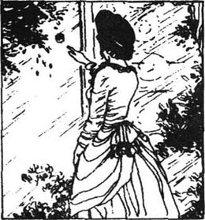
“苔丝，为什么？”她看到她女儿，不由得叫了起来，“我以为你结婚了！这次是真的结婚了吧！”
“是的，妈妈，结婚了。”
“那么，你的丈夫呢？”
“要离开一段时间。”
“离开！那么，你们是什么时候结婚的？如你说的，星期二？”
“是的，妈妈。”
“星期二结婚，今天才不过是星期六，他就已经走了。看来你是找了一个非常奇怪的丈夫啊，苔丝！”
“妈！”苔丝朝琼奔去，把她的头伏在琼的肩上，“你嘱咐我不要告诉他，但是我说了——我忍不住——然后他走了！”
“哦，你这个傻瓜，你这个小傻瓜！”她母亲喊道。
“我知道，我知道，”苔丝哭诉着，“可是他原来是那么好的人！我不能对他撒谎。如果你知道我是多么地爱他，多么地想嫁给他，你就会明白了！”
“唉，现在已经太迟了，”德北夫人说道，“真不知道你父亲会怎么说？他对你的婚姻非常自豪。他在酒店里跟他们说，你会帮忙把他的高贵家族重新振兴起来。哦，他来啦！”
苔丝跑到楼上去了。但是透过薄薄的墙壁，她听到了向约翰爵士叙述的整个事件。
“村里人会笑话我的！”他说，“你认为他真地跟她结婚了吗，琼？还是就像头一次那样？”
苔丝再也听不下去了，甚至她的家人都不信任她。她无法待在这儿了。她把克莱尔留给她的钱分出一半，给了她母亲，并告诉家里人，她打算去和他团聚。于是她又一次离开了马勒特，去找活儿干。
安吉尔·克莱尔也回到了家里。从婚礼之后，他花费了三周的时间试图让自己保持平静并继续学习，但他脑子里总不断地闪现出苔丝的影子，搅得他心神不安。他开始思索自己是不是对她做得太过分了。她曾是他未来生活计划中如此重要的一部分，以至于他现在还在考虑他们可以一起去哪些国家经营农场。巴西对他颇具吸引力。那儿的乡村、那儿的居民和风俗都与此地截然不同，也许他们可以一起在那儿开创新的生活。于是他返回爱敏斯特，告诉他父母他新的打算。
“亲爱的安吉尔，可是，你的妻子呢？”当他到家时，他母亲喊道。
“她这会儿在她娘家，我是相当匆忙地赶回家的，因为我已经决定了要去巴西。”
“巴西！但是那儿都是罗马天主教徒！”
“是吗？我还没想过这个呢。”
但是比起巴西的宗教来，克莱尔先生和克莱尔夫人对他们儿子的婚姻大事更为关切。
“安吉尔，我们真的想见见你的妻子。对你这次草率的婚礼，我们丝毫没有生气。那么，为什么你不把她带来？这显得有点奇怪。”
安吉尔解释说，在他单独赴巴西考察那个国家是否适合期间，她先住在娘家。他安排好了，在下次他和她一起去巴西之前，带她来见他的父母。但他的母亲对于没有见到苔丝非常失望。她看着儿子吃饭，还问了些问题。
“她很漂亮吗？”
“那是毫无疑问的。”
“自然是个少女喽？”
“自然是的。”
“我想你是她的初恋吧？”
“正是。”
他的父亲什么也没问，但是到晚上做祈祷的时刻，他从《圣经》里挑选了一段文章。
“安吉尔，这一段非常适合现在这个场合，这是赞美纯洁的妻子的。”
“当你父亲读这段话时，我们都会想到她。”他母亲加了一句。当他听着这些古老、优美的辞句时，安吉尔简直要哭了。
他的母亲说：“安吉尔，你看，《圣经》告诉我们，完美的女人是一个勤劳的女人，就像你的妻子那样的姑娘，一个用自己的双手、心灵和头脑为别人奉献的姑娘，而不是一位体面的小姐。安吉尔，我真希望我见过她了。我觉得她已经够好了，因为她是个纯洁的姑娘。”
克莱尔的眼眶里满是泪水。他迅速地道了声晚安，就到自己房间去了。他的母亲跟了过去，站在门口忧虑地看着他。
“安吉尔，你为什么这么快就要离去了？这三个星期里，你和你的妻子吵架了吗？安吉尔，她是……她是一个有经历的女人吗？”做母亲的本能发现了儿子忧虑的缘由。
“她是完全纯洁的！”他回答道，他觉得自己一定要撒那个谎，哪怕他要为此在此时此地下地狱。
“那就永远不要在乎别的方面。自然界里很难再有比一个纯洁的乡村姑娘更好的事物了。”
克莱尔对苔丝感到非常愤怒，因为她逼得他欺骗他的父母。随后，他又想起了她温柔甜美的声音，她的手指在他脸上轻轻触摸的感觉，还有她在他唇上温暖柔和的呼吸。但是这个本意善良的年轻人，尽管有先进的思想，在思维上却不免仍有局限。他不能看到，在本质上，苔丝与《圣经》中描述的圣洁的妻子是一样纯洁的。
第二天，克莱尔离开了爱敏斯特，开始为去巴西的行程做准备。一天，在同一位农场主了结了一些事情后，在返回途中，他碰巧遇上了塔尔勃塞的一个挤奶女工，伊茨·休爱特。他知道她心里的秘密，她爱他，是个诚实的姑娘，而且能成为一个和苔丝一样贤惠的农场主妻子。他从伊茨口中得知了一些其他女工的情况。蕾蒂病倒了，玛丽安开始酗酒。伊茨自己怎么样呢？
“伊茨，假设我请求过你嫁给我，会怎么样？”他问。
“我会说‘好吧’，然后你就拥有了一个爱你的女人！”
一种疯狂的愤怒占据了克莱尔的思想。社会和它的法则设下圈套把他逼到了死角，为什么他不向这个社会报复？
“伊茨，我将要去巴西了，苔丝不跟着去。我们因为一些私人的原因分手了。可能我永远也不会爱你，但是，你愿意和我一起去吗？”
“是的，我愿意，”沉默了一会儿，伊茨说道。
“你知道这在世人的眼里是不对的，是不是？你非常非常爱我吗？爱得比苔丝还深？”
“是的，我爱你，哦，我确实很爱你，但是爱得没有苔丝深。没人能这样！她可以为了你舍弃她的生命。”
克莱尔哑然无语，他的心在哭泣。他听到伊茨的话一遍又一遍地在脑子里响起：她可以为了你舍弃她的生命。
“我很抱歉，伊茨，”他突然说道，“请你忘掉我刚才说的话吧！我一定是疯了！”
“哦，带我去吗？喔，我不应该那么老实！”伊茨呜咽着说。
“伊茨，你的诚实挽救了我，使我避免了一件罪恶的事情。我要因此感谢你，也请你原谅我！”
于是安吉尔告别了这个可怜的姑娘。但他并没有转回到苔丝的村子。他继续按他的计划行事，5天之后，他离开这个国家到巴西去了。
就这样好几个月的时间过去了。春夏两季，苔丝就在牛奶场找点临时的活儿干。她把安吉尔留下的钱都寄给了家里，这个家像往常一样总有许多支出，却几乎没有什么收入。她的自尊不允许她向安吉尔的家人伸手要钱。那个冬天她转到另外一个农场干活。玛丽安就在那儿干活儿。这里土地贫瘠，活儿也很辛苦。但是苔丝并不介意在地里干那些繁重的活儿。当她们淋着倾盆大雨在地里挖菜时，她们就讲讲塔尔勃塞，讲讲阳光明媚的绿色牧场，还有安吉尔·克莱尔。苔丝没有把事情的来龙去脉都告诉玛丽安，所以玛丽安无法理解为什么这对夫妇会分开。
她们给伊茨写信，叫她来跟她们一起干，如果她没别的活儿干的话。这是几年来最冷的一个冬天，可是苔丝和玛丽安必须顶着雪花干活儿。苔丝意识到农场主就是那个在集镇上认出她来的纯瑞脊人，曾经被安吉尔击倒在地。他让她干的活儿比其他人的加重了一倍。
当伊茨到来时，苔丝见她跟玛丽安耳语着什么。苔丝感觉这一定是件重要的事。“是有关我丈夫的事吗？”之后，她向玛丽安问道。
“嗯，是的，伊茨说我不应该告诉你。可是，他叫她跟他一起私奔到巴西去！”
苔丝的脸变得像地上的雪一样惨白。
“后来呢？”
“他改变了主意。但是他原来是打算带她去的！”
苔丝放声大哭起来。“我必须给他写信！这是我的过错！我原不该把这事留给他去做的！他说过我可以给他写信！我一直都疏忽他了！”
可是到了晚上，她在房间里给他写信时，又写不下去了。她盯着她的结婚戒指，她在白天把它挂在脖子上，到了晚上就整夜把它戴在手上。与妻子分离后，这么快就叫伊茨和他一起去巴西了，这是什么样的丈夫呢？
但是这个新信息让她重新考虑起到爱敏斯特拜访安吉尔的家人。她想知道为什么他没有给她写信。她可以见见他的父母，在她孤苦伶仃的时候，他们一定会善待她的。于是她决定在一个她唯一空闲的日子，礼拜天，从弗林特石灰谷的农场出发，步行去那儿。单程的路就有15英里。在玛丽安和伊茨的怂恿下，她穿上了最好的衣服。她们在那天清晨4点钟把她送上了路。姑娘们都真挚地爱着她，由衷地希望她幸福。现在距她结婚的日子已有一年了，在那个晴朗寒冷的早晨，她那不曾说出口的愿望就是赢得她丈夫的家人，然后说服他回到她的身边。
虽然她出来时欢欣鼓舞，但是随着渐渐走近爱敏斯特，她却开始心慌了。教堂显得令人生畏。也许那位相当严格的牧师会不赞许她在礼拜日长途跋涉。可是，她只有往前走了。她脱下笨重的靴子，把它们藏到一棵树后面，然后，换上那双精致漂亮的靴子。她想在出镇的路上再把靴子捡回来。
她深深地吸了一口气，按响了牧师家的门铃。没有人答应。她又按了一次。还是没有动静。她几乎是松了一口气，转身离开了。然后她想起来他们一定都在教堂呢。于是她就在街上一个安静的地方等着，直到人们川流不息地从教堂出来了。她马上认出了安吉尔的哥哥们，甚至还远远地听到了他们的谈话。
“可怜的安吉尔！”其中一个说道，“默茜·钱特，那个好姑娘在那儿。到底为什么他不娶她，而是跟一个挤奶工仓促地结了婚？”
“这真是很奇怪。不过，他的想法一直是最古怪的。”
当默茜·钱特从教堂出来时，他们便上前陪同她一起沿着那条苔丝走进爱敏斯特的路走着。
“看，这儿有一双旧靴子，”兄弟中有一人说道，他发现了苔丝放在树后的靴子。
“我觉得，这是很不错的步行靴子。”钱特小姐说道，“这样就扔了，多差劲啊！把它们交给我吧。拿去送给穷人，会有人喜欢的。”
苔丝匆匆地超过了他们，泪水从她脸上潸潸滚下。她继续尽可能快地走着，离开了爱敏斯特。她是多么不走运啊，碰见的偏偏会是两个儿子，而不是父亲。安吉尔的父母会立即打心底里接受孤苦可怜的苔丝，就像他们对每一个迷失的人做的那样，而不会去考虑他的出身、学识或财富。
她返回弗林特石灰谷，在路上走了15英里，变得越来越疲惫沮丧，那儿只有繁重的活儿等着她干。可是在半路上，她注意到有一群人正在听一个传道士说着什么。她停下脚步，也去听了一会儿。这个传道士正热情高涨地讲述他多年来曾是如何地品行不端，而一个牧师又是怎样地给他指出来：这让他渐渐地从邪恶中转变过来。但是他的声音比他的布道更让苔丝震惊。她从人群后绕过去看他的脸，午后的阳光充沛地照在他身上，她认出来了，他是亚历克·德伯。
chapter-a135_ 17 A Changed Man
A Changed Man
Chapter 17
This was the first time she had seen or heard of d'Urberville since she had left Trantridge. And although he stood there openly as a preacher, as a religious man, she still felt afraid of him. He had changed his clothes, his hair, his moustache and his expression, but could she really believe that he had changed his most secret thoughts and beliefs?
As soon as she recovered from her surprise, she moved away so that he would not notice her. But he suddenly caught sight of her, and the effect on him was electric. His enthusiasm faded, his voice hesitated, his lips trembled, his eyes dropped in confusion. Tess walked rapidly away along the road.
However, as she walked she felt he must be looking at her back as she walked away. And now she knew she could never escape the past, as she had hoped. Reminders of her past would surround her until she died. As she walked uphill she heard footsteps behind her, and, turning, saw that it was the one person in the whole world she did not want to meet this side of the grave.
'Tess!' he said. 'I'm Alec d'Urberville!'
'I see you are,' she said coldly. They walked on together.
'You may wonder why I'm following you. Well, I feel you are the person I would most like to save from hell. So I have come to do that.'
'Have you saved yourself?' Tess asked bitterly.
'God has done it all, not me! I must tell you how I came to believe in Him. Have you ever heard of the parson of Emminster, old Mr Clare? A very strict, sincere man.'
'I have,' said Tess.
'Well, he came to Trantridge once and tried to show me how wicked my life was. I insulted him at the time. But later my mother died, and somehow I began to think about what old Mr Clare said. Since then my one desire has been to help others to understand God too...'
'Don't go on!' cried Tess. 'I can't believe in such a sudden change! I almost hate you for talking to me like this, when you know how you've ruined my life! You enjoy yourself for a while and then you make sure of your place in heaven!' As she spoke she looked him full in the face with her great beautiful eyes.
'Don't look at me like that!' said Alec. 'Your eyes remind me of—well, women's faces have too much power over me. Don't look at me! It might be dangerous for you!'
Eventually they came to a crossroads, where a strange stone stood. It was a lonely, unfriendly place, where people did not like to stay for long. Alec stopped here.
'I must go to the right here. I'm preaching at six this evening. Tell me, how has your life been since we last met?'
Tess told him about the baby. Alec was shocked.
'You should have told me! But before we part, come, put your hand on this stone. It was once a holy cross. I'm afraid of your power over me. Swear on the cross that you will never tempt me into wickedness!'
'Good God! How can you ask such an unnecessary thing! I don't want to see you ever again!'
'No, but swear it.'
Tess placed her hand on the stone and swore.
'I shall pray for you,' called Alec as he walked away. 'Who knows, we may meet again!'
Tess went on her way, feeling upset, and soon met a man on the road. He told her that the cross was not religious, but marked the place where a criminal was put to death and buried. Trembling a little at this information, she finally arrived at Flintcomb-Ash.
One day the following week when Tess was working in the fields as usual, Alec d'Urberville came to see her. He explained to her that he intended to sell his land at Trantridge and go to help poor people in Africa.
'Will you help me put right the wicked thing I did to you? Will you be my wife?'
'Oh no, sir!' she cried, horrified.
'Why not?' Disappointment was visible in his face. It was not only duty which pushed him to make this offer, but also his old passion for her.
'You know I don't love you,' answered Tess. 'In fact, I love somebody else.'
'Perhaps that is only a passing feeling...'
'No!'
'Yes! Why not? You must tell me!'
'Well, then... I have married him.'
'Ah!' he cried and looked hard at her.
'It's a secret here,' she begged. 'Please don't tell anybody.'
'Who is he?' asked d'Urberville. 'Where is he? Why isn't he here to look after you? What sort of husband can he be, leaving you to work like this?'
'Don't ask!' cried Tess, her eyes flashing.
'Your eyes!' whispered Alec. 'I thought I no longer felt anything for you, but when I look into your eyes...' He took her hand.
She pulled it quickly away.
'Go now, please, in the name of your new religion, go! Respect me and my husband!'
'Don't worry, I can control myself. I just hoped that our marriage would take away the bad in both of us. But that plan is no good now.' He walked slowly away, his head bent in thought.
The farmer approached at that moment and was angry with Tess for wasting time talking to a stranger. Tess preferred hard words from this man of stone to sweet ones from Alec d'Urberville. For a moment, however, she imagined escaping from her present hard life by marrying Alec, but rejected it immediately.
At home that night she began a letter to Clare, telling him of her great love for him. Reading between the lines he would have seen her secret fear for the future. But again she could not finish the letter, thinking of his offer to Izz, and so he never received it.
On a Sunday in February she was. eating her lunch in the cottage where she lived, when d'Urberville knocked at the door. He rushed in and threw himself into a chair.
'Tess!' he cried desperately. 'I can't help it! I can't stop thinking of you! Pray for me, Tess!'
Tess did not pity him. 'I cannot because I don't believe God would change His plans just because I asked Him.'
'Who told you that?'
'My husband.'
'Ah, your dear husband... Tell me what he believes.'
Tess explained, as clearly as she could remember, Angel's beliefs. Alec watched her closely.
'The fact is, you just believe whatever he says. That's just like you women!'
'Ah, that's because he knows everything!' Tess replied with enthusiasm. 'What is good enough for him is good enough for me.'
'H'm, interesting,' murmured d'Urberville. 'Perhaps he understands religion better than old Mr Clare. Perhaps he's right not to attach too much importance to the Bible and to fixed ideas. Perhaps I was wrong to become a preacher. Today I should be preaching at half-past two, and here I am! My passion for you was too strong for me!'
'You have let all those people down? They are waiting for you!'
'What do I care? You are the one woman I have always wanted. Why have you tempted me away from religion? I can't resist you!' His black eyes flashed passionately. He advanced towards her.
'I couldn't help your seeing me again!' cried Tess, moving nervously away from him. 'Please leave me! Remember I am married! Remember I can't defend myself!'
Alec stopped, turned, and went out without another word. But he went on thinking of Angel's religious logic, as explained by Tess. It seemed to make sense. 'That clever husband doesn't know that his ideas may lead me back to her!' he laughed to himself.
In March the threshing-machine came for a day to Flintcomb-Ash. It was a huge red machine which ate all the corn the farm-workers could feed it. Next to it stood the engine which ran it, and the engineer. He lived in a world of fire and smoke, and was permanently black, as if he came from hell. The farmer put Tess next to the threshing machine, so that she had the hardest and most tiring job of all. She had little chance to talk or rest, and at lunch time was about to start eating when she noticed d'Urberville approaching. He had changed his parson's clothes and now looked just like the young gentleman she had first met at Trantridge.
'I am here again, you see,' he said, smiling at her.
'Why do you bother me like this?' she cried.
'You trouble me! Your eyes look at me night and day. I can't forget them. Tess, when you told me about that child of ours, my feelings for you became strong again. I have lost interest in religion and it is your fault!'
'You have stopped preaching?' asked Tess, shocked.
'I have. What a lot of stupid people they are to listen to a preacher anyway! And I am convinced that your wonderful husband's views are better than old Parson Clare's. I don't know how I became so enthusiastic! So now, here I am, my love, just as in the old times!'
'Not like that at all, no, now it's different!' she said firmly. 'Oh why couldn't you stay religious?'
'Because you've explained your husband's ideas so well to me that I accept them! Ha ha! But seriously, Tess, you need help. I am here and this husband of yours is not. Come with me! My carriage is waiting the other side of the field! You have tempted me, now share my life for ever!' He put an arm round her waist. Tess was red with anger but said nothing. She picked up a heavy leather glove and hit him in the face with it. It was an action which her ancestors must have often practised. Alec jumped up and wiped the blood from his mouth.
'Remember one thing!' he said angrily, only just controlling himself as he held her by the shoulders. 'Remember, my lady, if you are any man's wife, you are mine! I will have you again! I'll come back for an answer later on!'
So he left, and the farm-workers started the afternoon's threshing. It went on until the evening, as the work had to be finished that day. Tess became more and more exhausted and was near to fainting when they finally stopped. Alec d'Urberville, who had been waiting for this moment, appeared at her side.
'You are so weak,' he said, holding her arm. 'I've told the farmer he should not use women for work with the threshing machine. It's too hard. I'll walk home with you.'
'Oh yes, please do!' murmured Tess, too tired to be afraid of him. 'You are kind sometimes. And at least you wanted to put right the wrong by offering to marry me.'
'If I can't marry you, at least I can help you. I have finished with religion. But you must trust me! I have enough money to help your family and make them comfortable.'
'Have you seen them lately?' asked Tess quickly. 'God knows they need help... but no—no, I can take nothing from you, either for them or for me! Please leave me alone!'
As soon as she reached her room she wrote a passionate letter to Angel.
My own husband,
I must call you that. I must ask you for help—I have no one else! I am so open to temptation, Angel! I cannot tell you who it is. Can't you come to me now, before anything terrible happens? I know you are far away, but I need help! I know I deserved the punishment you gave me, but please, Angel, please be kind to me! If you would come, I could die in your arms!
I live only for you. Don't think I shall be bitter because you left me. I am so lonely without you, my darling!
Haven't you ever felt one little bit of your love for me at the dairy? I am the same woman you fell in love with then, the very same. As soon as I met you, the past was dead for me. Can't you see this?
How silly I was to trust that you would always love me! I ought to have known I couldn't be so lucky.
People say I am still rather pretty, Angel. But I don't care about my looks because you are not here.
If you won't come to me, could I come to you? I'm so worried! I'm afraid I may fall into some wicked trap. Save me from what threatens me!
Your faithful heartbroken
Tess
recover v. regain control of oneself; become calm or normal. 变得平静。
electric adj. of, worked by, charged with, capable of developing, electricity. 电的。
hate v. have a strong dislike of or for. 憎恨；憎恶。
heaven n. home of God and the saints. 天堂；天国。
cross roads n. place where two roads meet and cross. 十字路口。
holy adj. of God. 上帝的；神圣的。
swear v. say solemnly or emphatically. 发誓。
upset n. being disturbed. 心乱。
visible adj. that can be seen. 可见的。
offer n. sth presented. 提供之物。
hope v. expect and desire. 希望。
look after sb. take care of. 照顾。
in the name of with the authority of. 凭……的权威。
however adv. although that may be, etc, so. 然而；依然。
great adj. well above the average in size, quantity or degree. 非常的。
rush v. go or come; do sth, with violence or speed. 冲进。
watch v. look at; keep the eyes on. 注视。
nervously adv. in a tense manner. 神经紧张地。
permanent adj. not expected to change. 永久的。
engineer n. skilled and trained person in control of an engine or engines. 技师。
threshing-machine n. machine for threshing grain. 打壳机。
bother v. be or cause trouble to. 烦扰。
leather n. material made by curing animal skins, used for making gloves, etc. 皮革。
glove n. covering of leather, knitted wool, etc for the hand, usually with separated fingers. 手套。
wipe v. clean or dry (sth) by rubbing with hands. 擦。
exhaust v. use up completely. 耗尽。
lately adv. in recent times. 近来。
remember v. have or keep in the memory. 记得。
terrible adj. causing great fear or horror. 可怕的。
very adj. itself and no other, truly such. 同一的。
threaten v. be a threat of sth to sb. 威胁。
第十七章 一个悔过自新的人
第十七章 一个悔过自新的人
自从离开纯瑞脊之后，这是她第一次见到或听说德伯。虽然他是以一个传道士、一个虔诚的基督徒的身份公然地站在那里，可是，她对他仍然感到恐惧。他已经改变了他的装束、他的发型、他的胡须和他的表情，可是她真的能相信他已经改变了他内心最深处暗藏的想法和信念吗？
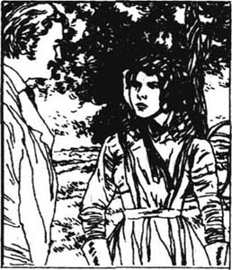
她一从惊异中缓过神来，就赶紧走开了，想避免让他注意到她。但是他突然看见她了，这一发现给他带来了触电般的震惊。他的激情消退了，他的声音含糊了，他的嘴唇哆嗦着，他的眼睛慌乱不安地瞟来瞟去。苔丝加快步伐上了路。
然而，她一边走一边觉得他在她离开时一定盯着她的背影看。现在她知道了，她永远都无法如她所希望的那样摆脱过去。在她死去之前，她过去经历的各种见证者重重包围着她。当她朝着山上走去时，她听到背后响起了脚步声，她掉过头去，看见的是那个只要她一息犹存，便最不愿意在这世上见到的人。
“苔丝！”他说，“我是亚历克·德伯！”
“我知道是你，”她冷漠地回答。他们一起朝前走着。
“你一定纳闷，为什么我要跟着你。嗯，我觉得你是我最想从地狱中拯救的一个人。所以我就来这么做了。”
“你拯救了你自己吗？”
“是上帝做了这一切，不是我！我得告诉你我是怎样渐渐地相信他的。你曾经听说过爱敏斯特的牧师，老克莱尔先生吗？一个严格、真诚的人。”
“我听说过，”苔丝说道。
“嗯，有一次他来到纯瑞脊，竭力给我指出我当时的生活是多么邪恶。那时候，我辱骂了他。可是后来，我母亲去世了，不知怎么地，我开始思考老克莱尔先生说过的话。打那以后，我唯一的愿望就是帮助其他人，还有了解上帝……”
“别再说下去了！”苔丝叫了起来，“我不能相信这样一个突如其来的改变！你这样跟我说话，我几乎要恨你了！你知道，你怎样地把我的生活给毁掉了！你寻欢作乐了一段时间后，又要确保在天堂里给你留个地方！”她用她那双美丽的大眼睛直直地盯着他的脸，说道。
“别这样看着我！”亚历克说，“你的眼睛让我回想起了——唉，女人的脸蛋对我的威力真是太大了。别看着我！这可能对你有危险！”
终于，他们来到了一处三岔路口，那儿竖着一块奇异的石头。这是个荒僻、险恶的地方，人们都不喜欢在此久留，亚历克在这儿停住了。
“我得在这儿右拐了，今晚六点钟我还要讲道呢。跟我说说，我们分手以后你的生活怎么样？”
苔丝跟他说了孩子的事。亚历克很震惊。
“你早该告诉我！那么，来，在我们分手之前，你把手放在这块石头上，这里有过一个神圣的十字架。我很害怕你对我产生的威力。对着十字架发誓你永远不会引诱我犯罪！”
“我的天哪！你怎么会要我做这种毫无必要的事！我连见都不想再见你！”
“没错，不过，发誓吧。”
苔丝把她的手放在石头上，发了誓。
“我会为你祈祷的，”亚历克一边走一边喊道，“谁知道呢，也许我们还会再见面的！”
苔丝怏怏不乐地继续她的路程，不久，她在路上碰见了一个人，他告诉她，那个十字架没有宗教的含义，而是给一个罪犯被判处死刑和埋葬的地方做个标记。听到这件事情让苔丝有些发颤。终于，她走到了弗林特石灰谷。
接下来的那个星期，有一天苔丝正像平常那样在地里干活儿，亚历克·德伯看她来了。他向她说明他打算把纯瑞脊的土地卖了，然后去非洲救助那儿的穷人。
“你愿意帮我挽回我对你犯下的罪过吗？你愿意做我的妻子吗？”
“哦，不，先生！”她惊骇地叫道。
“为什么不行？”他脸上的失望显而易见。不仅仅是他的责任促使他提出这个请求，还有他对她昔日的激情。
“你知道我不爱你，”苔丝回答说，“实际上，我爱上别人了。”
“也许那只是一时的感情……”
“不是！”
“是的！为什么不是？你一定得告诉我！”
“嗯，那么……我已经嫁给他了。”
“啊！”他惊叫起来，愕然地注视着她。
“在这儿，这是个秘密，”她请求道，“请不要告诉任何人。”
“他是谁？”德伯问道，“他在哪儿？他为什么不在这儿照料你？把你抛下干这样的活儿，他算哪门子的丈夫？”
“别问了！”苔丝叫道，她的眼睛闪着光。
“你的眼睛！”亚历克喃喃说道，“我原以为我对你已不再有什么感觉了，但是，当我看到你的眼睛……”他抓住了她的手。
她急忙抽了出来。
“走吧，请你走吧，以你的新信仰的名义，走吧！请尊重我和我的丈夫！”
“别担心，我能控制自己。我原来只是希望我们的结合能除去我们两个人身上的罪恶。可是这个计划现在看来已经不合适了。”他慢慢地走开了，低头沉思着什么。
这时，农场主过来了，他对苔丝浪费时间和一个陌生人交谈这事大为恼火。苔丝宁愿受到这个冷酷的人的严厉谴责，也不愿意听到亚历克·德伯的甜言蜜语。然而，有一刻她想象着与亚历克结婚来摆脱她目前艰难的生活，但是立即又打消了这个念头。
那晚，她在房子里开始给克莱尔写信，倾诉她对他深厚的爱情。从字里行间，他原可以体会她对未来暗藏的恐惧。可是她又想起了他对伊茨的请求，又一次没能把信写完，因此，他根本就收不到这封信。
2月的一个星期天，她正在她住的小房子里吃着午饭，德伯敲响了门，他冲了进来，一屁股坐在了椅子上。
“苔丝！”他声嘶力竭地喊道，“我无法克制自己！我无法停止想你！为我祈祷吧，苔丝！”
苔丝并不同情他。“我不能。因为我相信上帝不会因为我的请求就改变他的安排。”
“谁这么跟你说的？”
“我的丈夫。”
“啊，你亲爱的丈夫……告诉我，他都相信些什么。”
苔丝根据记忆，尽可能清楚地阐述着安吉尔的信念。亚历克密切地注视着他。
“事实上就是，你相信他说的每一句话。你们女人都是这样的。”
“哦，那是因为他知道一切事情！”苔丝充满激情地回答道，“对他足够好的东西对我同样足够好。”
“哼，真有意思，”德伯咕哝着，“也许他比老克莱尔先生更好地理解了宗教。也许他是对的，不要太受《圣经》和那些教条观念的束缚。也许是我错了，竟想成为一个传教士。今天，我应该在两点半的时候讲道，但是我在这儿！我对你的感情太炽烈了！”
“你让那些人都失望了？他们正在等着你呢！”
“我在乎什么？你一直是我想要的女人。为什么你把我从宗教信仰里诱惑出来了？我无法抵御你！”他的黑眼睛显露出心荡神驰的情欲，他一步步朝她靠近。
“我无法让你不再见到我！”苔丝叫着，神经质地从他身边闪开，“请离开我吧！记住我已经结婚了！记住我无法保护自己！”
亚历克不动了，一句话也没再说，转身走了出去。但是，他还在继续思考着苔丝阐述的安吉尔的宗教逻辑。它看起来合情合理。“那个聪明的丈夫不知道他的思想可能会把我重新牵回到她身边！”他在心里窃笑道。
3月的一天，弗林特库姆一带来了一辆打谷机。这是一台大型的红色机器，它可以吞掉农场工人们装进去的所有麦子。它的旁边放着一台开动它的发动机，还站着一个技师。他生活在一个烟与火的世界里，永远是黑乎乎的，好像从地狱里来的一般。农场主安排苔丝站到打谷机边上，这样她就得干最繁重最乏味的活儿。她几乎没有机会说话或休息。到了午饭时间，她正准备吃饭时，看见德伯过来了。他已经换掉了那身牧师的服装，现在看起来就与她在纯瑞脊初次遇到时的那个年轻的绅士一样。
“你看，我又来了。”他笑着对她说。
“你为什么老来烦我呀！”她大叫起来。
“是你扰乱了我的心！你的眼睛日日夜夜地注视着我。我无法忘记它们。苔丝，当你把我们的孩子的事跟我说了的时候，我对你的感情又变得炽烈起来了。对宗教我已经失去了兴趣，这是你的罪过。”
“你已经停止布道了吗？”苔丝震惊地问道。
“是的，停止了。总之，他们是多么愚蠢的一大群人啊，听一个传教士布道！我为你那伟大的丈夫的观点折服了，我确信他的观点比老克莱尔牧师的好。真不知道我怎么就变得热情高涨了！所以，现在，我来了，亲爱的，就像过去的日子一样！”
“一点儿也不像那样了，不，现在情况不同了！”她坚决地说道，“哦，为什么你不能保持你对宗教的虔诚？”
“因为你如此生动地向我解释了你丈夫的观点，我接受它们了！哈哈！不过，说正经的，苔丝，你需要帮助。我在这儿，而你的那个丈夫不在。跟我来吧！我的马车就在田那头等着！你已经引诱我了，现在，永远地和我一起共享生活吧！”他伸出一只手臂，揽住了她的腰。苔丝气得涨红了脸，可是一句话都说不出来。她抓起了一只笨重的皮手套，朝他的脸打去。这一定是她的祖先们经常要练习的动作。亚历克跳了起来，擦了擦嘴角渗出的血。
“记住一件事情！”他恼怒地说道，抓住她的肩膀，克制着自己。“记住，我的小姐，如果你是任何一个男人的妻子，你就是我的！我会再度拥有你的！晚些时候，我会再来听你的回音！”
于是他离开了，农场工人又开始了下午打谷的活儿。因为这活儿必须在今天干完，所以一直持续到晚上。苔丝越来越精疲力尽，等到他们终于干完时，她几乎快晕倒了。一直在等候着这个时刻的亚历克·德伯出现在她的身边。
“你太虚弱了，”他抓着她的手臂说道，“我已经告诉农场主了，他不应该让女人跟着打谷机干活。这活儿太累人了，我陪你走回去。”
“哦，是的，好吧！”苔丝喃喃地说道，她太累了，已感觉不到对他的惧怕。“有时候你的心肠挺好的，至少，你想弥补过去的过失，提出要跟我结婚。”
“如果我不能娶你，至少我可以帮助你。我已经跟宗教没有什么瓜葛了，但是你一定要信任我！我有足够的钱帮助你的家人，让他们都过得舒舒服服的。”
“你最近见过他们吗？”苔丝急切地问道，“上帝知道，他们需要帮助……但是，不——不，我不能从你这儿拿任何东西，不管是为他们还是为我自己！请让我一个人待着吧！”
她一回到房间，就给安吉尔写了一封感情深切的信。
我自己的丈夫：
我必须这样称呼你，我必须向你呼救了——我别无他人可求！我是这么毫无防卫地受到诱惑，安吉尔！我不能告诉你他是谁。你难道不能趁着现在，不等可怕的事情发生，立即赶到我身边来吗？我知道，你在很远的地方，但是我需要帮助！我理解你给我的惩罚，我罪有应得，可是请你，安吉尔，请你善待我！如果你来，我就可以在你怀里安息了！
我只是为了你才活着。不要以为你离我而去，我会怨恨什么。亲爱的，没有你，我是多么孤寂啊！
难道你没有感觉到过一丝一毫你在牛奶场时对我的爱吗？我没变，我还是你以前爱上的那个女人，一点也没变。当初，我一见到你，过去的事情对我就都消亡了。难道你看不出这一点吗？
我有多傻呀，我一开始相信您会永远爱我的！我早就应该知道，我是不可能这么幸运的。
安吉尔，人们说我依然是那么漂亮迷人。可是，因为你不在这儿，我不关心我的容貌。
如果你不能到我这儿来。我能上你那儿去吗？我是这么地担心！我怕我也许会落入某个可怕的陷阱，我面临危险，救救我吧！
你忠实的心碎的妻子
苔丝
chapter-a135_ 18
Chapter 18
This desperate cry for help eventually arrived at the parson's house in Emminster. Old Mr Clare was pleased.
'I think this letter is from Angel's wife. I hope this will bring him home more quickly. He did say he was planning to come home next month.'
'Dear boy, I hope he will get home safely,' murmured Mrs Clare. 'I still feel he should have gone to university like the other two. He should have had the same chance as them, Church or no Church.'
This was the only complaint she ever made to her husband. He too was worried that he had been unfair to Angel. They blamed themselves for this unfortunate marriage. If Angel had studied at Cambridge he would never have become a farmer and married a country girl. Still, his more recent letters showed that Angel was planning to come home to fetch her, so perhaps their quarrel, whatever it was, could be settled.
Angel himself was at this moment riding across Brazil towards the coast. He had never completely recovered from the serious illness he had had when he first arrived. He was not as strong as before, and looked much older. The country had been a disappointment to him. Many farmers had come here from England hoping to make their fortune, and had died in the fields or on the roads. He knew now he could not farm here.
His attitude to life had changed during this time. He began to look again at what was right and wrong. He began to see that a person should be judged not only on what he has done but also on what he wanted to do. He began to think that he had perhaps been unfair to Tess, and he thought about her with growing affection.
He wondered why she had not written. He forgot that he had told her not to write first. He did not realize that she was obeying his orders exactly, although it was breaking her heart.
On his journey, he travelled with another Englishman. They were both depressed and both told each other their problems. The stranger was older and more experienced than Angel. He had a different, more open approach to life. He told Angel clearly that he was wrong in parting from Tess.
The next day they got wet in a thunderstorm. The stranger fell ill and died a few days later. Death came as no surprise in that unfriendly land. Clare buried him, and continued his journey. The man's words were somehow given greater importance by his unexpected death, and suddenly Clare felt ashamed. Tess had committed no crime. He should believe in her character, and not object to a past action she could not avoid. He remembered the words of Izz Huett: She would have laid down her life for you. No woman could do more. How she had looked at him on their wedding day—as if he were a god! And during that terrible evening by the fireside, when she told him her story, how desperately sad she had been to realize he might not love her any more.
Meanwhile Tess was not hopeful that Angel would come in answer to her letter. The past had not changed, so he might not change either. Nevertheless she spent her spare time preparing for his possible return, practising singing the songs he used to like, tears rolling down her cheeks all the while.
One evening she was in the cottage as usual when there was a knock at the door. A tall thin girl came in and Tess recognized her young sister Liza-Lu.
'Liza-Lu!' said Tess. 'What's the matter?'
'Mother is very ill,' her sister said seriously, 'and father is not well either and says a man of such noble family shouldn't have to work. So we don't know what to do.'
Tess thought for a moment. She realized she had to go home immediately, although her time was not yet up at the farm. She left her sister to rest for a while, and she herself set off at once with her possessions in a basket.
Although it was night and she had a fifteen-mile walk, she felt quite safe. She was only worried about her mother, and did not notice the strange shapes of trees and hedges in the darkness. At three in the morning she passed the field where she had first seen Angel Clare, and felt again the disappointment when he did not dance with her. And when she saw the family cottage, it seemed to be part of her body and life, as it always did.
She found her mother recovering from her illness, and took over as head of the household. Her father did not seem ill, and had a new plan for earning money.
'I'm going to find all the historians round here,' he said, 'and get them to pay money to keep me going. After all, they pay to look after old ruins, and I'm of historical interest. I think they'll be pleased to do it!'
Tess did not have time to answer. She nursed her mother, fed the children, and worked in the garden, planting vegetables for next year. She enjoyed working outside, among her neighbours. One evening when it was almost dark, she was digging happily in the vegetable garden, some distance from the cottage. It was a clear, fresh night, with smoke blowing about from small fires in the gardens. Suddenly she saw a man's face in the light of a fire. It was d'Urberville! She gasped and stepped back, her face pale.
'What are you doing here?'
'My dear Tess, I just want to help you, to see you. Have you finished at that farm?'
'Yes, I have.'
'Where are you going next? To join your dear husband?'
'Oh, I don't know!' she said bitterly. 'I have no husband!'
'That is quite true in one way. But you have a true friend. When you go back to your cottage, you'll see what I've done for you.'
'Oh Alec, I wish you wouldn't give me anything! I—I have enough, I—I just don't want to live at all!' Her tears fell as she started digging again. When she looked round, d'Urberville had left.
On her way back one of her sisters rushed towards her shouting, 'Tess! Tess! Mother is much better but father is dead!'
'But father was only a little bit ill!' said Tess, trying to take in the news.
'He dropped down just now, and the doctor said there was no hope for him because it's his heart!'
Poor John Durbeyfield's death had more importance than his family realized at first. The cottage was in his name. On his death the farmer who owned it decided to put farm workers in it, and told the Durbeyfields to leave. They were not much respected in the village because of John's laziness. Tess also felt guilty that her presence might have influenced the farmer. The village people clearly thought she was not a good example for their children.
So on Lady Day the Durbeyfields had to leave their old home. The night before they left, d'Urberville came to visit Tess, to offer her and her family a little house on his land at Trantridge.Her mother could look after the chickens, and he would pay for the children to go to school. Tess firmly rejected his offer. But when he had gone, for the first time a feeling of anger rose in her against her husband. She had never intended to do wrong and he had punished her too hard! She passionately wrote these few words to him:
Oh why have you treated me so badly, Angel? I do not deserve it. You are cruel! I intend to forget you. You have been so unfair to me!
T
She ran out and posted it before she could change her mind.
'I see there's been a visitor,' said her mother, coming into the living room later. 'Your husband, was it?'
'No, it wasn't him. He'll never, never come,' said Tess hopelessly. She had said it was not her husband, but she was feeling more and more that d'Urberville was physically her husband.
Next day their possessions were put on a waggon and taken to Kingsbere. Mrs Durbeyfield had booked rooms there, as it was the family home of the d'Urbervilles, and she still hoped some good would come of belonging to the ancient family. But as they approached Kingsbere after a long and tiring day's journey, a man came to tell them there were no rooms available. Tess and her mother unloaded the waggon, and left the children and furniture near the churchyard wall, while they looked for somewhere to stay. But all the rooms were full.
Tess looked desperately at the pile of their possessions. In the cold sunlight of this spring evening the furniture looked old and the pots looked worn.
'Tombs belong to families for ever, don't they?' asked her mother brightly, having looked round the churchyard. 'Well, that's where we'll stay, children, until the place of your ancestors finds us some shelter!'
Tess helped her mother move the big bed against the church wall. Underground were the tombs of the d'Urbervilles, and at the head of the bed was a beautiful old window, in which the symbols on the Durbeyfield seal and spoon could be seen. The children were put to bed all together for warmth and comfort.
'Tomorrow we'll find somewhere better!' said Joan cheerfully. 'But Tess, what's the good of you playing at marrying gentlemen, if it leaves us like this!'
Tess went inside the ancient church and stared sadly at the tombs of her ancestors. She thought she saw a movement and turned to look again at a stone figure lying on a tomb. When she saw it was Alec d'Urberville lying there, she almost fainted.
'I'm going to help you,' he said, jumping up and smiling at her. 'You'll see that I'm more useful than a real d'Urberville. I'll see your mother. You'll thank me for this!' As he brushed past her, she dropped her head on to the cold stone of the tomb.
'Why am I on the wrong side of this stone?' she whispered.
Marian and Izz had seen Tess moving house with her family, and knew what a difficult position she was in. They generously hoped she would one day be happy with Angel again, and were afraid for her, knowing that Alec d'Urberville was constantly tempting her. They decided to write a letter to Angel Clare, to inform him of the dangerous situation his wife was in. This is what they wrote:
Dear Sir,
Watch out for your wife if you love her as much as she loves you. She is in danger from an enemy in the shape of a friend. A woman's strength cannot last for ever, and water, if it drops continually, will wear away a stone—yes, even a diamond.
From two well-wishers
worry v. give oneself no peace of mind. 使（自己）不安。
complaint n. statement of, grounds for, dissatisfaction. 抱怨。
unfair adj. not right or fair. 不公正的。
attitude n. way of feeling, thinking or behaving. 态度。
travel v. make a (especially long) journey or journeys. 旅行。
somehow adv. for some vague reason (or other). 说不上什么理由。
nevertheless conj. however; in spite of that. 然而；虽然如此。
spare adj. (of time) for leisure.（指时间）空暇的。
possession n. sth possessed; property. 所有物；财产。
thin adj. having not much flesh. 瘦的。
household n. all persons (family, lodgers, etc) living in a house. 同居在一家的人；全家的人。
earn v. get in return for work, as a reward for one's qualities or in payment for a loan. 赚。
gasp v. struggle for breath. 喘息。
shout v. speak or cry out in a loud voice. 大声喊。
laziness n. sb unwilling to work. 懒惰。
influence v. have an effect on. 影响。
visitor n. person who goes to a place for a time. 访问者，宾客。
physically adv. in a manner which is of the body. 身体地。
book v. give or receive an order for, eg seats at a theatre, tickets for a journey. 预订。
pot n. round vessel of earthenware, metal or glass, for holding liquids or solids, for cooking things in, etc. 锅；盆；罐。
churchyard n. burial ground round a church. 教堂墓地。
symbol n. sign, mark, object, etc looked upon as representing sth. 象征。
tempt v. try to persuade sb to do sth, wrong or foolish. 勾引。
inform v. give knowledge to. 通知；告诉。
第十八章
第十八章
这封绝望的求助信最终到了爱敏斯特牧师的家中，老克莱尔先生很高兴。
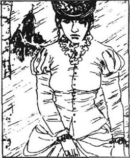
“我想这是安吉尔的妻子来的信。我希望这会让他更快地回家。他是说过，他计划下个月回家的。”
“亲爱的孩子，我希望他能平安到家。”克莱尔夫人低声说道，“我仍然觉得他应该像其他两个那样去上大学，他应该和他们有同样的机会，不管是不是到教会工作。”
这是她有史以来唯一一次向她的丈夫发牢骚。他自己也为他没有公平地对待安吉尔感到忧虑。他们为这桩不幸的婚姻责备自己。假如安吉尔在剑桥学习的话，他就永远不会成为一个农场主，也不会跟一个乡下姑娘结婚了。不过，安吉尔最近一次的来信表明他仍打算回家带她一起去，所以他们的争吵，不管是为了什么，也许可以解决了。
安吉尔自己这个时候正骑马横穿巴西到海岸。他一到这儿就生了场大病，以后再也没有彻底恢复过来。他已经不如以前那么健壮了，看起来也老了许多。这个国家让他失望了。许多从英国来的农场主，怀着发家致富的梦想到了这儿，却死在了地里或路上。他知道他无法在此经营农场了。
在这期间，他对生活的态度已发生了转变。他开始再度审视起是非曲直来。他开始明白，评判一个人不仅仅要根据他做过什么，还要根据他想做什么。他开始想到自己过去对待苔丝也许是不公平的，他怀着与日俱增的爱恋，回想着她。
他纳闷她为什么不给他写信。他忘了，他说过不要先来信的。他没有意识到她在完完全全地服从他的命令，尽管这叫她伤心欲碎。
在行程中，他和另外一个英国人结伴而行。他们都很沮丧，彼此倾诉着自己的问题。这位陌生人比安吉尔年长，阅历也更丰富。他对生活的态度有自己不同的、更为豁达开朗的一套。他明确地对安吉尔说，他离开苔丝是错误的。
第二天，他们赶上一场雷阵雨，被浇湿了。这个陌生人病倒了，几天之后便死去了。在那种环境恶劣的地方，死神的降临是不足为奇的。克莱尔将他安葬了，又继续自己的行程。由于这出人意料的死亡，他的话不知怎地显示出了更大的重要性，克莱尔突然感到羞愧了，苔丝并没有犯罪。他应该相信她的品质，而不是对她无法避免的一段过去横加指责。他回想起了伊茨·休爱特说的话：她可以为你舍弃她的生命。没有任何一个女人能付出更多了。在他们结婚的那天，她是带着怎样的眼神凝视着他呀——仿佛他是一个神！而在火炉边度过的那个可怕的夜晚，当她对他说了她的经历后，意识到他可能不再爱她时，她又是多么地伤心欲绝啊！
同时，苔丝对安吉尔会响应她的信而回来不抱什么希望了。过去并没有改变，所以也许他也没有改变。然而，她还是利用空闲的时间，为他可能的返回作着准备，练习唱他过去爱听的歌，每到这个时候，眼泪就会从她的双颊潸潸滚落。
一天晚上，像往常一样，她正待在小屋里，这时响起了一阵敲门声。一个高高瘦瘦的女孩走了进来，苔丝认出，是她的妹妹丽莎-露。
“丽莎-露！”苔丝说，“出什么事儿啦？”
“妈妈病得很重，”她的妹妹焦虑地说道，“爸爸的身体也不好，还说像这样一个高贵家族的人是不该工作的。所以我们不知道如何是好。”
苔丝想了一会儿。她意识到自己必须立即回家一趟，尽管她在农场的干活期未满。她让妹妹留下来休息一会儿，自己把行李装在一个篮子里，即刻启程了。
虽然是夜里了，她还有15英里的路要走，但她觉得十分安全。她只是担心她的母亲，根本注意不到黑暗中那些树木和篱笆怪异的影子。凌晨3点，她经过与安吉尔·克莱尔初次见面的田野，因他没有请她跳舞产生的失望又一次涌上心头。她看到她们家的房子，它就像她身体和生活的一部分。它总是这样的。
她发现她母亲正从病中恢复，又接管了一家的事务，她的父亲则不像生病的样子，还制定了一个挣钱的新计划。
“我打算找到周围地区的所有的历史学家，”他说道，“让他们出钱支持我的生活。毕竟，他们是要花钱照看那些历史古迹的，我也有历史价值，我认为他们会乐意这么做的！”
苔丝没有工夫回答他的话。她要看护母亲，喂养孩子，还要在园子里干活儿，为来年种点儿蔬菜。她喜欢跟左邻右舍一起，在户外干活儿。一天傍晚，天将黑时，她在菜园子里欢快地掘着土。园子离家有些距离。这是一个明朗、清新的夜晚。园子里的小火堆升起了一团团的烟雾，突然，她在火光中看到了一张男人的脸，是德伯！她惊得透不过气来，后退了几步，脸变得惨白。
“你在这儿干什么？”
“我亲爱的苔丝，我只不过想要帮助你，看望你。你在那个农场的活儿结束了吗？”
“是的，结束了。”
“下一步你要去哪里？和你亲爱的丈夫团聚？”
“哦，我不知道！”她愤愤地说，“我没有丈夫！”
“从某种意义上说，这是相当正确的，但是你有一个真正的朋友。当你回到你的屋子时，你会看到我为你做的事情。”
“哦，亚历克，我真希望你什么都不要给我！我——我已经有足够的了，我——我根本就不想活了！”当她重新开始掘土时，已是泪流满面了。她环顾四周，德伯已经走了。
在回家的路上，她的一个妹妹朝她飞奔而来，叫着：“苔丝！苔丝！妈妈好多了，可是爸爸死了！”
“可是爸爸只有一点小小的病！”苔丝说道，极力领会这个消息的涵义。
“他刚才跌倒了。医生说因为他心脏的毛病，他没有救活的希望了！”
可怜的约翰·德北的去世所带来的影响比他的家人最先意识到的更为重大。这座房子是以他的名义使用的。因为他死了，农场主——也就是房主人决定让农场工人们住到这里，叫德比一家都搬走。因为约翰的懒惰，他们家在村子里不太受敬重。苔丝也感到很愧疚，也许她的存在影响了那个农场主。村子里的人们都明确地认为她不是弟妹们的好榜样。
于是在圣母领报日那天，德北一家不得不离开了他们的老房子。离开的前一天晚上，德伯来看望苔丝，提出把在纯瑞脊他家土地上的一间房子给她和她的家人住。她的母亲可以为他养鸡，他则可以出钱供孩子们上学。苔丝严厉地拒绝了他的帮助。可是当他离开之后，她内心第一次产生了对她丈夫愤怒的感觉。她从来没有存心要做错事，他对她的惩罚太残酷了！她满怀激情地写了下面几句话：
啊，安吉尔，你为什么对我这么狠哪？这不是我应受的惩罚，你真是残酷！我要设法忘掉你。你对待我太不公平了！
苔
她跑出去，趁着她还没有改变心意赶忙寄了这封信。
“我看有人来拜访过了，”她母亲随后来到了起居室，说道，“是你的丈夫，对吗？”
“不，不是他。他永远、永远也不会来的。”苔丝绝望地说道。她说了来者不是她的丈夫，可是她却越来越感到，德伯是她实质上的丈夫。
第二天，他们的家当被装上了一辆运货马车，带到王陴那儿。德北夫人在那儿订了房间，因为那儿是德伯家族的房产，并且由于归属于这个古老的家族，她仍然抱着从中能出现什么好事的希望。可是经过一天漫长又疲惫的旅行之后，在临近王陴时，有个人来告诉他们这儿已经没有空余的房间了。苔丝和她母亲从货车上卸下东西，把孩子和家具留在教堂墓地围墙附近，她们自己则去寻找能住的地方。但是所有的房子都是满满的。
苔丝绝望地看着这一堆家当。在这春天傍晚冷冷的日光下，家具看起来很破旧，而锅碗瓢盆都是破破烂烂的。
“坟墓永远属于家族所有，是不是？”在环顾了教堂墓地之后，她的母亲欢快地问道。“好了，孩子们，在你们祖先的地位给我们找到避难所之前，这就是我们要待的地方。”
苔丝帮助她母亲把那张大床移到靠着教堂墙壁的位置。地下就是德伯家族的坟墓，床前有一个漂亮古老的窗格，里面可以见到德伯印章和银匙上的标记。为了保暖和舒适起见，孩子们统统上了床，挤在一起。
“明天我们会找到一个更好的地方！”琼乐观地说道。“可是苔丝，你随随便便地嫁给绅士先生们得到了什么好处，如果我们落到这个地步的话！”
苔丝走进了这座古老的教堂，忧伤地盯着她祖先们的坟墓。她觉得她看到了什么东西在动，掉过头去又看了一眼，坟墓上躺着一个僵硬的身子。当她认出是亚历克·德伯躺在那儿时，她几乎要昏厥过去了。
“我打算帮助你，”他跳起来，笑着对她说道。“你会看到我比一个真正的德伯家的人更有用处。我要去见你的母亲。你会为此感激我的！”当他从她身边擦肩而过时，她对着坟墓冰冷的石块垂下了头。
“我为什么不是在墓石的另一边？”她喃喃说道。
玛丽安和伊茨知道苔丝和她的家人搬家了，也了解她处在一个怎样的困境当中。她们宽厚地希望有一天她会重新和安吉尔幸福地生活在一起。她们也为她担心，因为她们知道那个亚历克·德伯在不断地诱惑她。她们决定给安吉尔·克莱尔写封信，通知他有关他妻子的危险处境。这是她们写的内容：
敬爱的先生：
如果您爱您的妻子也像她爱您那样深的话，请关心她吧。她正受到一个伪装成朋友的敌人的威胁。一个女人的力量是不能永无止境地持续下去的。如果不停地滴落，水都能穿石——是的，即使是钻石也会被磨光的。
两个好心人
chapter-a135_ 19 The End
The End
Chapter 19
It was evening in the parson's house at Emminster. Mr and Mrs Clare were waiting anxiously for Angel's return.
'He won't be here yet, my dear,' said old Mr Clare, as his wife went to the front door for the tenth time. 'Remember his train doesn't come in till six o'clock, and then he has to ride ten miles on our old horse.'
'But he used to do it in an hour,' said his wife impatiently. Both knew it was useless to talk about it, and the only thing to do was wait.
When they heard footsteps they rushed outside to meet the shape in the darkness.
'Oh my boy, my boy, home at last!' cried Mrs Clare, who at that moment cared no more for Angel's lack of religion than for the dust on his clothes. What woman, in fact, however firm her beliefs, would not sacrifice her religion for her children? Nothing was more important to Mrs Clare than Angel's happiness.
But as soon as they reached the living room, she saw his face clearly in the light of the candles. She gave a cry and turned away in sorrow. 'Oh, it's not the Angel who went away!'
Even his father was shocked to see the change in his son. They would not have recognized him if they had passed him in the street. The cruel climate and hard work had aged him by twenty years. He was like a shadow, thin and bony, with no spring in his step and no enthusiasm in his eyes.
'I was ill over there,' he said, noticing his parents' concern. He had to sit down, being weak after his journey.
'Has any letter come for me?' he asked eagerly. 'The last one...'
'From your wife?'
'Yes. I didn't get it until very recently, as I was travelling. If I had received it earlier, I would have come sooner.'
They gave him a letter that had been waiting for his arrival. Angel read it rapidly. It was Tess's last letter, short and desperate:
Oh why have you treated me so badly, Angel? I do not deserve it. You are cruel! I intend to forget you. You have been so unfair to me!
T
'It is all quite true!' cried Angel hopelessly, throwing down the letter. 'Perhaps she will never take me back!'
'Angel, don't worry so much about a country girl,' said his mother, anxious about her son's state of mind.
'You know, I've never told you, but she is actually a descendant of one of the oldest, noblest families in England, a d'Urberville in fact. And do you know why I left her? How could I be so narrow-minded! I left her because I discovered she was not the pure country girl I thought. She had been seduced by a so-called gentleman. But it wasn't her fault. And I know now that her whole character is honest and faithful. I must get her back!'
After this outburst Angel went to bed early and thought about the situation. In Brazil it had seemed easy to rush straight back into Tess's loving arms whenever he chose to forgive her. However, now he knew she was angry with him for leaving her for so long. He admitted she was right to be angry. So he decided to give her time to think about their relationship, and wrote to her, at Marlott, instead of going to see her. To his surprise he received in reply a note from her mother.
Dear Sir,
My daughter is not with me at the moment and I don't know when she'll come back. I will let you know when she does. I cannot tell you where she is staying. We don't live in Marlott any more.
Yours
J. Durbeyfield
At first Clare decided to wait for further information from Tess's mother, but then he re-read the letter sent on to him in Brazil, written from Flintcomb-Ash:
I live only for you. Don't think I shall be bitter because you left me. I am so lonely without you, my darling!
Haven't you ever felt one little bit of your love for me at the dairy? I am the same woman you fell in love with then, the very same. As soon as I met you, the past was dead for me...
He was so touched he felt he must go immediately to find her, however angry she and her family might be with him. While he was packing, the letter from Izz and Marian arrived, and made him hurry even more.
His search for Tess took him first to Flintcomb-Ash, where he discovered she had never used her married name. He began to realize, too, what hardship she had suffered rather than ask his family for money. Next he travelled to Marlott, but found the Durbeyfield cottage occupied by others. As he left the village he passed the field where he had first seen Tess at the dance. He could not bear to see it, because Tess was not there. In the churchyard he saw a new headstone, on which was written:
In memory of John Durbeyfield, rightly d'Urberville, of the once powerful family of that name, and direct descendant of Sir Pagan d'Urberville. Died March 10th, 18
A gravedigger noticed Clare looking at it, and called to him, 'Ah sir, that man didn't want to be buried here, but in his ancestors' tombs at Kingsbere.'
'So why wasn't he buried there?'
'No money. In fact, sir, even this headstone has not been paid for.'
Clare went immediately to pay the bill for the stone, and set out towards Shaston, where he found Mrs Durbeyfield and her children living in a small house. She seemed embarrassed to see him.
'I'm Tess's husband,' he said awkwardly. 'I want to see her at once. You were going to write and tell me where she is. Is she well?'
'I don't know, sir, but you ought to.'
'You're right. I ought to know that about my own wife. Where is she?'
Mrs Durbeyfield would not reply.
'Do you think Tess would want me to try and find her?'
'I don't think she would.'
He was turning away, and then he thought of Tess's letter: If you would come, I could die in your arms! I live only for you... I am so lonely without you, my darling! He turned back.
'I'm sure she would!' he said passionately. 'I know her better than you do!'
'I expect you do, sir, for I have never really known her.'
'Please, Mrs Durbeyfield, please tell me where she is! Please be kind to a miserable lonely man!'
There was a pause after this cry from the heart. Finally Tess's mother replied in a low voice, 'She is at Sandbourne.'
'Thank you,' he said, relieved. 'Do you need anything?'
'No, thank you, sir,' said Joan Durbeyfield. 'We are well provided for.'
Clare took the train to Sandbourne. On his arrival at eleven o'clock in the evening he took a room in a hotel, and walked around the streets, in the hope of meeting Tess. But it was too late to ask anybody.
It seemed a strange place to Clare. It was a bright, fashionable holiday town, with parks, flowerbeds and amusements. This new town, a product of modern civilization, had grown up near the ancient Egdon Woods, where the paths over the hills had not changed for a thousand years.
He walked up and down the wide streets, trying to admire the modern buildings. He felt confused. The sea murmured, and he thought it was the trees. The trees murmured, and he thought it was the sea. He could not understand what had brought Tess here. This was a town for relaxation, for pleasure, not for a working girl like Tess. There were no cows to milk here, and no vegetables to dig. He looked at the lights in the bedroom windows, and wondered which one was hers.
Before going to bed he re-read Tess's passionate letter. He could not sleep that night. At the post office next morning they knew nothing of the names of Clare or Durbeyfield.
'But there is the name of d'Urberville at Mrs Brooks',' said the postman.
'That's it!' cried Clare, pleased to think she had taken her ancestors' name, as he had suggested.
He made his way quickly to Mrs Brooks' house, following the postman's directions. It was a large, impressive house, and he wondered if he should go to the back door, as Tess was probably a servant here. But he rang at the front. Mrs Brooks herself appeared.
'Is Teresa d'Urberville here?' he asked.
'Mrs d'Urberville?'
'Yes.' He felt pleased that she was known there as a married woman. 'Please tell her that a relation wants to see her. Say it's Angel.'
'Mr Angel?'
'No, just Angel. She'll know.'
Angel waited in the sitting room, his heart beating painfully.
'Whatever will she think of me?' he thought. 'I look so different, so much older!' He was still weak after his illness. He could hardly stand, and held on to the back of a chair, as she entered the room.
He was not prepared for what he saw. Tess was wearing fashionable clothes, and looked even more beautiful than he remembered. He had held out his arms, but they fell to his side, because she stood still in the doorway. He thought she could not bear his changed appearance.
'Tess!' he whispered. His voice was low and breaking with emotion. 'Can you forgive me for going away? Can't you... come to me? Why are you... so beautiful?'
'It is too late,' she said, her voice hard and her eyes shining unnaturally.
'I didn't see you as you really were! Please forgive me, Tessy!' he begged.
'Too late, too late!' she said, waving her hand impatiently. 'Don't come close, Angel! Keep away!'
'But is it that you don't love me, my dear wife, because I've been ill? I've come to find you. My parents will welcome you! I've told them everything!'
'Yes, yes! But it is too late.' Every moment seemed like an hour to her. She felt as if she was in a dream, trying to escape, but unable to. 'Don't you know what has happened? I waited and waited for you. But you didn't come! And I wrote to you, and you didn't come! He kept on saying you would never come back again, and he was very kind to my family after father's death. He...'
'I don't understand.'
'He has won me back to him.'
Clare stared at her. He saw her fashionable clothes. He saw her relaxed, well-fed body. He saw her white, delicate hands. At last he understood, and fell into a chair, as if hit on the head.
She continued, 'He is upstairs. I hate him now, because he told me a lie, that you would never return, and you have returned! Will you go away now, Angel, please, and never come back?'
They looked at each other without joy and without hope, desperately wanting to be sheltered from reality.
'It's my fault!' said Clare. But talking did not help. The Tess he had first loved had separated her body from her soul. Her soul remained and would remain faithful to him for ever. But what happened to her body no longer interested her after he had rejected it.
After a few moments of confused reflection, he realized Tess had left the room. His mind was in a fog. He felt very cold and very ill. Somehow he found himself in the street, walking, although he did not know where.
Mrs Brooks was not usually curious about her guests. She was too interested in the money they paid her, to ask many questions. However, Angel Clare's visit to her wealthy guests, Mr and Mrs d'Urberville, as she knew them, was unusual enough to interest her. She could hear parts of the conversation between the two lost souls, and when Tess went back upstairs, Mrs Brooks crept quietly up to listen outside the bedroom door. She heard Tess sobbing, and through the keyhole could see her half lying over the breakfast table.
'And then my dear husband came home to me... And it's too late! Because you persuaded me, you with your fine words! As you did when you seduced me! You told me he would never come back! But he did! And you helped my family—that's how you persuaded me so cleverly. But when I believed you and came to live with you, he came back! And now I've lost him a second time, and this time for ever! He will hate me now!' She turned her tear-stained face and Mrs Brooks could see how she was suffering. 'And he's dying, he looks as if he's dying! It will be my fault if he dies! You have destroyed my life and his! I can't bear it, I can't!' The man spoke sharply, and after that there was silence.
Mrs Brooks went back downstairs to wait until she was called to take their breakfast away. She could hear Tess moving about, and then saw Tess leave the house, fully dressed in her fashionable clothes. Perhaps Mr d'Urberville was still asleep, as he did not like getting up early. Mrs Brooks wondered who this morning's visitor was, and where Mrs d'Urberville had gone so early.
Just then she noticed a mark on the ceiling. It seemed to be spreading. It was red, and when she stood on the table and touched it, it looked like blood. She ran up to listen at the bedroom door again. The dead silence was broken only by a regular drip, drip, drip. She ran wildly out into the street and begged a man she knew to come back with her. Together they hurried upstairs and pushed open the bedroom door. The breakfast lay untouched on the table, but the large knife was missing. They found it in Alec d'Urberville's heart. He lay on the bed, pale, fixed, dead, still bleeding. Soon the news spread all over Sandbourne that Mrs Brooks' guest had been killed by his young wife.
lack n. want, need, shortage. 缺乏；不足。
dust n. dry earth or other matter in the form of fine powder, lying on the ground or the surface of objects, or blown about by the wind. 灰尘；尘土。
climate n. weather conditions of a place or area. 气候。
bony adj. having big or prominent bones. 骨骼突出的。
eager adj. full of, showing, strong desire. 热切的；渴望的。
seduce v. by charm, knowledge of the world, etc persuade sb less experienced to have sexual intercourse. 勾引；诱奸。
so-called adj. called or named thus but perhaps wrongly or doubtfully. 所谓的；号称的。
outburst n. bursting out (of energy, anger, etc). （能量，怒气等的）爆发；突发。
pack v. get ready for a journey by putting things into a box, bundle, bag, etc. 整理行装。
hardship n. severe suffering. 痛苦；苦难。
headstone n. stone set up at the head of a grave. 墓碑。
awkward adj. embarrassed. 困窘的，局促不安的。
ought to (indicating duty or obligation) should. 表示应该或合理。
in fact as a matter of fact, really. 事实上；实际上。
too…to in a higher degree than is allowable, required, etc. 太……以致不……。
flowerbed n. plot of land in which flowers are grown. 花坛；花床。
amusement n. state of being amused. 娱乐。
up and down backwards and forwards. 前后地；来回地。
servant n. person who works in a household for wages, food and lodging. 仆人；用人。
enter v. come or go into. 进入。
low adj. not high in pitch; not loud. （指声音）不大的；不高的；不尖的；低的。
unnatural adj. not natural or normal. 不自然的；反常的。
welcome v. show pleasure or satisfaction at sth, at the arrival of sb or sth. 欢迎。
win v. get by means of hard work, perseverance, struggle, as the result of competition, gambling, etc. 赢。
reality n. the quality of being real, real existence; that which underlies appearance. 真实；现实；真相。
reject v. put aside, throw away, as not good enough to be kept. 抛弃。
guest n. person staying at or paying a visit to another's house or being entertained at a meal. 客人。
stain v. change the colour of; make coloured patches or dirty marks on. 改变……的颜色；玷污。
ceiling n. top inner surface of a room. 天花板。
regular adj. happening, done, again and again at even intervals. 有规律的；不变的。
drip n. the drop-by-drop falling of a liquid. 滴；滴落。
第十九章 结局
第十九章 结局
一天晚上，在爱敏斯特的牧师家，克莱尔先生和夫人正焦急地等待着安吉尔的归来。
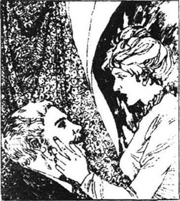
“亲爱的，他还到不了，”老克莱尔先生说道。他的妻子已经第十次到前门探望了。“记住他的火车直到六点才能抵达，然后他还得骑着咱们那匹老马走上十里路呢！”
“可是，以往他在一个小时内就骑到了，”他的妻子焦躁地说道。两个人都知道谈论是没有用的，唯一能做的就是等待。
他们听到脚步声，急忙冲到了门外，迎接那个黑暗中的身影。
“哦，我的孩子，我的孩子，终于到家了！”克莱尔夫人叫道。在这个时候，她关切的仅仅是安吉尔身上的尘土，而不会在乎他缺少宗教信仰。实际上，哪一个女人，不管她的信仰多么坚定，不会为了她的孩子们牺牲她的信仰？对克莱尔夫人来说，没有任何东西比安吉尔的幸福更重要。
可是当他们进到了起居室，她在烛光映照下端详起他的脸庞时，她不禁惊叫了起来，痛苦地转过头去，“哦，这不是离开时的安吉尔！”
甚至他的父亲在看到儿子的变化时也很震惊。如果他们在街道上经过他身旁，他们会认不出他来的，恶劣的气候和艰苦的劳动让他苍老了二十岁。他瘦骨嶙峋，步伐沉重，目光黯然失神，简直不成人样了。
“在那边我一直生病，”注意到父母的忧虑，他说道。旅程之后，他已很虚弱，不得不坐下来了。
“有我的什么信件吗？”他急切地问道，“最近的一封……”
“从你妻子那儿来的？”
“是的，我直到最近，当我在旅行的时候才收到。如果我早点儿收到信的话，我会更快赶回来的。”
他们给了他一封一直等他回来看的信。安吉尔快速地浏览了信，这是苔丝最近一封信，写得简短、迫切：
啊，安吉尔，你为什么对我这么狠哪？这不是我应受的惩罚，你真是残酷！我要设法忘掉你。你对待我太不公平了！
苔
“说得一点儿不错！”安吉尔绝望地叫道，信掉到了地上，“也许她永远不会再接受我了！”
“安吉尔，不要对一个乡下姑娘过分担心了，”他母亲说道。她对儿子的心理状态非常忧虑。
“你们知道吗，我从来没有告诉过你们，可是她实际上是英国最古老、最高贵的一个家族的后裔，事实上就是德伯。你们知道我为什么会离开她吗？我怎么会这般心胸狭窄！我离开她是因为我发现她并不是我认为的那样，是个纯洁的乡下姑娘。她曾被一个所谓的绅士先生诱奸过。可是这不是她的过错。现在我知道了她全部的品质就是诚实和真挚。我必须让她回到我的身边！”
这一番倾诉之后，安吉尔早早地上了床，他考虑着现在的情形，他在巴西时以为，无论什么时候，只要他宽恕了她，他都可以轻而易举地返回她爱的怀抱。然而，现在他知道因为自己离开她过于长久，她对他愤怒了。他承认她的愤怒是合情合理的。于是，他决定给予她时间来思考他们之间的关系。他没有去看望她，而是给她写了封信，寄往马勒特。意外地，他收到了她母亲回复的一张便条。
敬爱的先生，
我女儿现在没有和我住在一起。我不知道她什么时候能回来。若她回来，我会设法让您得知。我不能告诉您她现在住在哪里，我们不再住在马勒特了。
你的
J·德北
起先，克莱尔决定等着从苔丝母亲那里获得进一步的消息。可是之后他又重读了那封写于弗林特库姆地区、他在巴西时收到的信：
我只是为你才活着，不要以为你离我而去，我会怨恨什么。亲爱的，没有你，我是多么孤寂啊！
难道你没有感觉到过一丝一毫你在牛奶场时对我的爱吗？我没变，我还是你以前爱上的那个女人，一点也没变。当初，我一见到你，过去的事情对我就都消亡了…．
他被深深地触动了，他觉得自己必须立刻去找到她，不管她和她的家人可能会对他有多气愤。他正收拾东西时，又收到了伊茨和玛丽安的信，这让他心情更为迫切了。
他寻找苔丝的第一步是到了弗林特库姆地区。在那儿，他发现她从来都没用过她婚后的名字。他同时也意识到，不管她遭受多么艰难的处境，她都不愿向他的家人要钱。接下来他又辗转到马勒特，可是他发现德北家的房舍住着别人。当他离开村子时，他经过了他第一次在舞会上见到苔丝的地方。他不忍再看下去，因为苔丝不在那儿了。在教堂墓地，他看到一块新墓碑，上面写着：
纪念约翰·德北，恰当地说，是德伯，这个姓氏的家族曾经非常强大，他是培根·德伯先生的直系后裔，死于3月10日，18××年。
一个掘墓人注意到克莱尔正盯着墓碑看，便对他喊道：“啊，先生，那个人可不想埋在这儿。他想葬在王陴那边他祖先们的坟墓里。”
“那么，为什么不把他葬到那儿去？”
“没有钱呀。实际上，就连这块墓碑的钱还没付呢。”
克莱尔马上掏钱付了墓碑的账，又动身朝夏斯顿去了。在那儿，他发现德北夫人和她的孩子们住在一间狭小的房子里。看到他，她显得有些局促不安。
“我是苔丝的丈夫，”他窘迫地说道，“我想立刻见到她，您本来是要写信告诉我她在哪里的。她还好吗？”
“我不知道。可是，先生，您应该知道呀。”
“您说得对，我应该知道我自己妻子的情况，她在哪儿？”
德北夫人不愿回答。
“您认为苔丝愿意让我努力找到她吗？”
“我认为她不会。”
他转身欲走，这时，他想起了苔丝的信：“如果你来，我就可以在你怀里安息了！我只是为了你才活着……亲爱的，没有你，我是多么孤寂啊！”他又转回身来。
“我确信她会的！”他充满热情地说道：“我比您更了解她！”
“我希望您是对的，先生，因为我从来没有真正了解过她。”
“请您，德北夫人，请您告诉我她在哪儿！请您对一个可怜又孤独的男人仁慈一点吧！”
他从心里发出了这声呼唤，此后，是片刻的沉默。苔丝的母亲终于低声地回答道：“她在桑德伯恩。”
“谢谢您，”他说道，并感到宽慰了些，“有任何需要吗？”
“不用了，谢谢您，先生。”琼·德北说，“我们被供养得很好。”
克莱尔搭乘了一班火车赶往桑德伯恩。在晚上11点到达之后，他在旅馆里订了个房间，之后就到街上四处逛，抱着能碰到苔丝的希望。可是已经太晚了，连个可问的人都没有。
对于克莱尔，这是个陌生的地方。它是个光鲜、时新的度假城镇，有公园、花圃和各种娱乐休闲设施。这个新城镇，作为现代文明的产物，在古老的埃格登森林附近渐渐发展了起来，而那里山峦上的小径千年来都不曾改变过。
他在宽阔的街道上走来走去，极力想去欣赏这些现代的建筑。他觉得思想很混乱。大海的潺潺细语被他听成是树木的声音；而树叶的沙沙作响又被认作是大海的声音。他不能理解是什么把苔丝带到了这里。这是一个休闲、消遣的城镇，不适合像苔丝这样要干活儿的姑娘。这儿没有奶牛可以挤，也没有蔬菜可以挖。他透过卧室的窗子看着万家灯火，急于想知道哪一盏是属于她的。
上床之前，他又读了苔丝那封热情洋溢的来信。那一晚，他辗转难眠。第二天早晨，他来到了邮电局，可是他们不知道有叫克莱尔或德北的人。
“可是在布鲁克斯夫人那儿住着个叫德伯的，”邮递员说道。
“就是它了！”克莱尔叫道，他很高兴，认为苔丝采纳了他的建议，使用了她祖先的姓氏。
顺着邮递员指引的方向，他急忙奔向布鲁克斯夫人的房子。这是一座宽敞、奢华得令人惊叹的房子，他怀疑他是否应该走后门，因为苔丝也许在这儿做佣人。可是，他在前门按响了铃，布鲁克斯夫人亲自开门来了。
“苔莉莎·德伯住在这儿吗？”他问。
“德伯太太吗？”
“是的。”他感到很高兴，因为苔丝是以已婚妇女的身份住在这里的。“请转告她有一个亲戚想要见她，就说是安吉尔。”
“安吉尔先生吗？”
“不，就是安吉尔，她会明白的。”
安吉尔在起居室里等候，他的心在痛苦地跳动着。
“她对我到底会有什么看法呢？”他在想，“我看起来完全不同了，老了这么多！”病后他的身子还很虚弱。当她走进房间时，他几乎无法站立，紧紧地抓着椅子的靠背。
对他所见的情景，他没有心理准备，苔丝穿着时髦簇新的衣服，看起来比他记忆中的她更为楚楚动人。他伸出双臂，可又垂落下来，因为她木然不动地站在门口。他心想，她不能接受他改变了的模样。
“苔丝！”他轻轻叫道。他的嗓音低沉，因情绪激动而断断续续。“你能宽恕我离你出走吗？难道你……不能向我走过来吗？为什么你……如此漂亮？”
“太晚了，”她说。她声音有些刺耳，眼睛的光芒也是躲躲闪闪的。
“我过去没有看出你真正的本质，请你宽恕我，苔丝！”他请求道。
“太晚了，太晚了！”她焦躁地挥着手，说道，“别靠近我，安吉尔！站开！”
“可是，我的好妻子，是因为我生了病，你就不爱我了吗？我是来找你的，我的父母也会欢迎你！我把一切都告诉他们了！”
“是的，是的！可是，太晚了。”每一秒钟对她都像一个小时那样难捱，她觉得自己如同在梦中，想要逃，却不能。“你还不知道发生了什么事吗？我把你等了又等。可你没有来！后来我给你写了信，你还是没有来！他老是说，你永远不会再回来了，父亲去世后，他待我们家非常好，他……”
“我听不懂。”
“他重又把我拉过去了。”
克莱尔盯着她看。他看到了她时新的衣服，他看到了她松弛的、保养得很好的身子，他看到她白皙娇嫩的双手。终于，他领会了她的意思，一下子瘫倒在椅子上，像是被人在头上击了一下。
她继续说着：“他在楼上。我现在恨他，因为他向我撒了谎，说你再也不会回来了，可你却已经回来了！安吉尔，现在请你走开吧，永远别再回来，好吗？”
他们面面相觑，没有欢乐也没有希望，只是竭力地希望躲避这严酷的现实。
“这是我的错呀！”克莱尔说。可是这已经无济于事了。他最初爱过的苔丝已把她的身躯从她的灵魂中分离开了，她的灵魂保持着，而且将永远保持着对他的忠诚。可是在遭受他的拒绝之后，她已不再关心她的身躯所要承受的一切了。
一阵胡思乱想之后，他发现苔丝已经离开了。他的心被迷茫的大雾笼罩着。他觉得很冷，极其不舒服。不知不觉中，他来到了街上，走着，尽管他并不知道要走向何处。
布鲁克斯夫人平常不太爱管客人们的闲事。她太关心他们付给她的钱了，顾不上问许多问题。然而，安吉尔·克莱尔对德伯先生和太太的拜访——据她所知，他们可是非常富有的客人——有些太不寻常，引起了她的兴趣。她能断断续续地听到一点儿这两个失魂落魄的人之间的谈话。当苔丝返回到楼上时，布鲁克斯夫人也蹑手蹑脚地摸上来，偷偷地在卧室门外听着。她听到苔丝啜泣的声音，贴着钥匙洞眼，她看到她半瘫在早餐桌上。
“后来，我那亲爱的丈夫回家找我来了……可是，太晚了！因为你用你的花言巧语劝诱我！就像你诱奸我时做的那样！你对我说，他将永远不回来了！可是，他回来了！你帮助我的家人——你聪明地利用这个劝诱我，可是当我相信了你，来和你一起生活时，他回来了！现在我又一次失去了他，这次是永远失去他了！他现在会恨我的！”她转过那张泪痕满面的脸，布鲁克斯夫人能够明白她正遭受多么大的痛苦。“他命不长了，他看上去是命不长了！如果他死了，那是我的罪过！你毁了我的一生，也毁了他的！我受不了啦！我受不了啦！”那个男人尖声说了句什么，之后，一阵沉寂。
布鲁克斯夫人返回楼下等着，等着被召唤去端走他们的早餐。她听到苔丝发出了些响动，然后看到苔丝齐全地穿着那身时新的衣服，离开了房子。也许德伯先生还睡着呢，因为他不喜欢早起。布鲁克斯夫人暗自纳闷早上的来访者到底是谁，而德伯太太这么一大早又要去哪儿。
就在这时，她注意到天花板上有什么痕迹，看起来正在扩散。是红色的，她爬上桌子，摸了摸，像是血。她跑上楼，又在卧室门边偷听。死一般的寂静被这有规律的一滴、一滴、又一滴的声响给打破了。她疯狂地跑到大街上，请求一个她认识的男人同她一起回去。他们一起急急地上了楼，推开了卧室的门。早餐一动未动地摆在桌子上，可是那把大刀子不见了。他们发现它插在亚历克·德伯的心脏上。他煞白地、僵硬地躺在床上，已经死了，还在流血。布鲁克斯夫人的房客被他年轻的妻子杀死了。这个消息很快传遍了整个桑德伯恩。
chapter-a135_ 20
Chapter 20
Meanwhile Angel Clare returned to his hotel, and sat for a while over breakfast, staring into space. A note arrived from his mother, saying that his brother Cuthbert was going to marry Mercy Chant. Clare threw away the paper. At last he got up, paid the bill and went to the railway station. But he could not sit patiently and wait for the next train, in an hour's time. He had nothing to wish for in life, and nobody to love. He was m no hurry, but just wanted to get out of that town as soon as possible.
So he started walking along the road out of town. The road was open, and dropped down to cross a valley. When he was climbing the far side of the valley, he stopped for breath, and something made him turn round. There was a small black figure in the distance—a human figure, running. Clare waited. It looked like a woman, but he never imagined that it could be his wife until she came close and he saw it was Tess.
'I saw you—turn on to the road—from the station—and I've been following you all this way!' She was pale, breathless and trembling. He did not question her but took her arm and helped her along. They took a footpath under some trees, to avoid being seen.
'Angel,' she said, 'do you know why I've been running after you? To tell you that I've killed him!' There was a pitiful smile on her white face as she spoke.
'What!' he cried, thinking her mind was disturbed.
'I don't know how I did it,' she said. 'I had to do it, for you and me, Angel. I was afraid long ago, when I hit him in the mouth with that heavy glove, that I might kill him one day. He has come between us and ruined our lives. I never loved him at all, Angel. You believe me, don't you? Oh, why did you go away, when I loved you so much? But I don't blame you, Angel. Only, will you forgive me now? I could not bear losing you any longer, I had to kill him. Say you love me now, say you do!'
'Oh, I do love you, Tess, I do. It has all come back!' he said, holding her tightly in his arms. 'But what do you mean, you've killed him?'
'He is dead. He heard me crying about you, and he called you rude names. I couldn't bear it. So I killed him.'
Eventually Angel came to believe that she probably had killed d'Urberville. He was amazed at the strength of her feeling, and this, it seemed had made her forget the difference between right and wrong. She did not seem to realize what she had done, and laid her head on his shoulder, crying with happiness. He wondered if the bad blood of the d'Urbervilles was to blame for this moment of madness.
However, he knew he could not leave her now. She expected him to protect her. And at last, Clare felt nothing but love for this passionate, loving wife of his. He kissed her again and again, and held her hand.
'I won't leave you! I'll protect you as well as I can, my dearest love, whatever you may or may not have done!'
They walked on, Tess turning her head occasionally to look at him. For her he was still perfection, despite his thinness and pale face. He was the one man who had loved her purely, and who believed in her as pure. Their arms around each other's waists, they walked through the woods on lonely footpaths, taking care not to meet anybody. They did not talk much, being content to be together at last.
'Where shall we go?' asked Tess.
'I don't know. Perhaps we could find a cottage to stay in tonight. Can you walk a long way, Tessy?'
'Oh yes! I could walk for ever with your arm around me!'
At midday Angel went to a public house and brought food and wine back to where Tess was waiting in the woods for him. Her clothes were so fashionable that the country people would have noticed her.
'I think we should keep walking inland, away from the coasts,' said Clare, as they finished eating. 'We can hide there for a while. Later on, when they stop looking for us, we can go to a port and get right out of the country.'
But their plans were vague. They were like two children, who think only of the moment. The weather was warm and they enjoyed walking together. However, in the afternoon they did not find any suitable cottages to stay in, and it was too cold to sleep outside. They had walked about fifteen miles, when they passed a large empty house in the middle of the woods.
'All those rooms empty!' said Tess, 'and we have no shelter!'
'We can stay the night there,' said Clare. 'Look, there's a window open. The caretaker probably airs the rooms in the daytime. We can climb in. Nobody will know.'
And so they did. They chose a bedroom with heavy old fashioned furniture and a huge old bed. They kept quiet while the caretaker came to shut the windows in the evening. Then the house was theirs. They ate some of the food they had brought, and went to bed in total darkness.
During the night she told him about his sleepwalking just after their wedding.
'You should have told me at the time!'
'Don't think of the past! Think of the present. Tomorrow may mean the end of our happiness.'
But when tomorrow came it was wet and foggy. It seemed that the caretaker only came on fine days, so they were alone in the house. They had enough food and wine, and stayed there for the next five days. It was the honeymoon they had never had. They had no contact with people, and only noticed changes in the weather. Neither mentioned the depressing period from their wedding-day to the present. They lived for the moment, and were completely happy. When Angel suggested leaving their shelter and travelling to a port like Southampton or London, Tess was unwilling.
'Why put an end to sweetness and happiness? Outside, everything is confused and sad. Here, we are quite content.'
Angel agreed. Inside was forgiveness and love: outside was eventual punishment.
'And...' she said, putting her cheek against his, 'I want you to go on loving me. I'm afraid you might reject me one day for what I've done. Then I would rather be dead. I must have been mad to kill him! But I don't want to be alive when you reject me for it.'
They stayed for one more day, but the caretaker came early that fine sunny morning. She wanted to open the windows in the bedrooms, which she did not usually do, and opened their bedroom door. She saw the young couple lying in the big bed, fast asleep, and hurried away to tell her neighbours.
Tess and Angel woke soon after, and decided to leave immediately. They dared not stay any longer. When they were in the woods Tess turned to look at the house.
'So much happiness in that house!' she whispered. 'My life can only be a question of a few weeks. Why couldn't we have stayed there?'
'Don't say that, Tess! We'll go northwards and get to a port. They won't find us.'
They kept going all day and most of the night, passing the cathedral city of Melchester and reaching open land. It was a windy, cloudy night. They walked on grass, so as not to make any noise on the road. They were alone and in darkness.
Suddenly, Clare almost bumped into a great stone rising up in front of him. Moving forwards carefully, they found other stones, standing tall and black against the night sky.
'What on earth is this place?' Clare asked.
'Listen!' cried Tess.
The wind, playing on the huge stones, produced a strange tune, like the notes of a great harp. The couple walked slowly into the middle of the great circle of stones.
'It's Stonehenge!' cried Clare.
'The pagan temple?'
'Yes. Older than the centuries; older than the d'Urbervilles!'
'Let's stay here tonight, Angel,' said Tess. lying down on a flat stone which was still warm from the day's sunshine.
'We'd better not. This place can be seen for miles in daylight.'
'I feel at home here,' murmured Tess. 'You used to say at Talbothays that I was a pagan, do you remember?'
He bent over her and kissed her.
'Sleepy, are you, dearest?'
'I love it here,' she said. 'I have been so happy with you. And here I have only the sky above my face. There is nobody in the world except us two.'
Clare thought she could rest a while here. He put his coat over her, and lay down beside her.
'Angel,' she asked presently, as they listened to the wind among the stones, 'if anything happens to me, will you take care of Liza-Lu?'
'I will.'
'She is so good and pure. Oh Angel, I wish you would marry her if you lose me, as you will do soon.'
'If I lose you, I lose everything.'
'She has all the best of me without my bad side, and if she were yours, it would almost seem as if we were not separated by death. Well, I won't mention it again.'
There was silence for a while. Angel could see the first light in the east. They had nor much time.
'Did they sacrifice to God here?' she asked.
'No, to the sun.'
'That reminds me, dear. Tell me, do you think we shall meet again after we are dead? I want to know.'
He kissed her to avoid replying.
'Oh Angel, that means no!' she almost sobbed. 'And I so wanted to see you again—so much, so much! Not even you and I, Angel, who love each other so much?'
He could not answer. Soon she fell asleep on the stone of sacrifice. The night wind died away, and the stones looked black in the half-light. Something seemed to move in the distance. It was a figure approaching Stonehenge. Clare wished they had gone on, but it was too late. He turned, and saw another, and another. They were uniformed men, closing in on Tess with slow purposeful steps. Clare jumped up wildly, looking round for a way to escape.
'It's no use, sir,' said the nearest policeman. 'We've surrounded the place.'
'Let her finish her sleep!' he begged in a whisper, as the men gathered round the stone. He held her hand. She was breathing more like a trapped animal than a woman. All waited in the growing light, their faces and hands silver, the stones grey. When the light was strong, she awoke.
'What is it, Angel?' she said, sitting up. 'Have they come for me?'
'Yes, dearest, they have.'
'That is right. I am almost glad. This happiness could not have lasted!'
She stood up and went towards the waiting men. 'I am ready,' she said quietly.
One July morning the sun shone on two figures climbing the hill leading out of the fine city of Wintoncester. They were young but they walked bent in sorrow. One was Angel Clare, the other Tess's younger sister, Liza-Lu. Hand in hand, with pale, tear-stained faces, they walked in silence.
When they reached the top of the hill, they heard the town clocks strike eight. They turned quickly and looked back at the city. They could see the cathedral, the college and the prison very clearly. A tall post was fixed to the prison tower. A few minutes after eight, as they watched, a black flag moved slowly up the post.
The gods had finished playing with Tess. Society had seen 'justice' done. Her d'Urberville ancestors slept on in their tombs, uncaring. The two silent watchers dropped to the ground and stayed there without moving for a long time. The flag waved in the wind. As soon as they had strength, they stood up, joined hands again, and continued slowly on their way.
valley n. stretch of land between hills or mountains, often with a river flowing through it. 山谷。
imagine v. form a picture of in the mind; think of (sth) as probable. 想象；认为（某事物）可能发生或存在。
footpath n. path for the use of persons on foot, especially one across fields on open country, or at the side of a country road. （田野中的）小径；小路。
disturb v. break the quiet, calm, peace or order of; put out of the right or usual position. 使紊乱。
tightly adv. in a fastened, fixed manner. 紧紧地。
madness n. the state of being mad; mad behaviour. 疯狂；疯狂的行为。
content adj. not wanting more; satisfied with what one has. 满足的；满意的。
midday n. noon. 中午。
inland adv. in or towards the interior. 在内陆地；向内陆地。
public house n. house licensed to sell alcoholic drinks to be consumed on the premises but not offering accommodation. 酒馆。
caretaker n. person paid to take care of a building during the owner's absence. （房主不在时）受雇替房主看管房屋之人。
contact n. meeting with a person. 与人接触。
sleepwalk n. an unusual action in which a person walks while asleep. 梦游。
couple n. two persons or things, seen together or associated. 一对，一双。
port n. harbour. 港；港口。
cathedral n. chief church in a diocese, in which is the bishop's throne, under the charge of a dean. 总教堂；大教堂。
bump v. come against with a blow or knock. 碰到；撞到。
harp n. free-standing musical instrument with vertical strings played with the fingers. 竖琴。
alone adj. without the company or help of others or other things. 孤独的。
lose v. no longer have; have taken away from one by accident, carelessness, misfortune, death, etc. 丧失；失去。
uniform n. dress worn by all members of an organization, eg the police, the armed forces. 制服；军服。
surround v. be, go, all round, shut in on all sides. 包围。
silver n. the colour of silver. （用作定语）银色。
justice n. just conduct; the quality of being right and fair. 公正。
第二十章
第二十章
同时，安吉尔·克莱尔回到了他的旅馆，整顿早餐他就坐在那儿，死死地盯着前方。他的母亲来了封短信，说他的哥哥卡斯伯特就要同默茜·钱特结婚了。克莱尔把信扔掉了。最后他站了起来，付清了账，走到了火车站。可是他无法耐心地坐在那里等下一趟火车，那得花一个小时。他对生活已不抱任何希望，也没有人可以爱了。他有充裕的时间，但只想尽快地离开这个城镇。
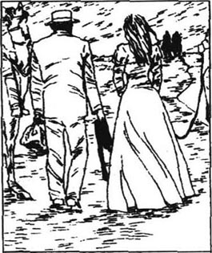
于是他开始沿着出城的马路走着。这条路很开阔，顺着下来，横穿过一座山谷。当他在山谷远处的那头爬行时，他停下来喘口气，有什么东西促使他转过身去。远处有个小小的黑影——是一个人的身影，正在跑着。克莱尔等待着。像是一个女人，可是克莱尔一点都没想到这可能是他的妻子。直到她走近了，他才认出来，那是苔丝。
“我看到你——转身上了马路——从火车站——我一直跟了你这么远！”她脸色苍白，上气不接下气，还有些发抖。他没有问什么，挽着她的胳膊，扶着她一起走。他们挑了一条树下的小路走，以免被人看见。
“安吉尔，”她说，“你知道我为什么一直追赶着你吗？我要告诉你，我杀死他了！”她说话时，苍白的脸上漾出一丝令人怜悯的微笑。
“什么！”他尖叫道，认为她神志不清了。
“我不知道我是怎么做的，”她说，“我必须这么做，安吉尔，为了你，也为了我。很早以前，当我用那只笨重的手套抽他的嘴巴时，我就怕有一天我也许会杀了他。他插在我们中间，毁了我们的生活。我根本就不爱他，你相信我，是不是？哦，当初，我那么爱你的时候，你为什么离开我啊？不过，我现在并不责怪你，安吉尔。我只是想问你，安吉尔，现在你会宽恕我吗？我不能忍受再失去你，我不得不杀死他。现在，说你爱我吧，说你爱我！”
“啊，我是爱你的，苔丝，我确实爱你。一切都回来了！”他说着，把她紧紧地搂到怀里。“可是，你的意思是，你杀死他了？”
“他死了。他听见我在哭喊你，就粗鲁地叫骂你的名字，我忍无可忍，于是杀了他。”
终于，安吉尔渐渐相信她也许真地杀死了德伯。他对她感情的力量感到惊愕，而这，似乎让他忘记了是非的区别。她像是根本没有认识到自己做过了什么，把她的头埋在他的肩上，幸福地哭着。他怀疑是否德伯家族的罪恶血统该为这一刻的疯狂遭受谴责。
然而，他知道，现在他不能离开她，她期待着他来保护她。到最后，克莱尔除了对他热情、忠诚的妻子满怀爱意之外，已感觉不到其他了，他对她吻了又吻，抓起了她的手。
“我不会离开你的！我会尽我所能来保护你，最亲爱的宝贝，无论你做过还是没做过任何事情！”
他们继续走着，苔丝不时地转过头看看他，尽管他的脸庞瘦削苍白，但对她而言，他仍是完美的。他是唯一一个不掺杂质地爱过她、并相信她的纯洁的男人。他们互相揽着对方的腰，在树林中孤寂的小径上穿行，小心翼翼地避开任何人。他们谈得不多，对于终于能够团聚感到心满意足。
“我们要去哪儿？”苔丝问道。
“我不知道。也许我们能找到一间今晚住的小屋，苔丝，你能走远路吗？”
“哦，我能！有你的手臂搂着我，我可以永远地走下去！”
到了中午时分，安吉尔到一个酒店买了些食物和酒回来，苔丝就在树林里等着他。她的衣服这么时新，会引起乡下人注意的。
“我认为我们应该继续朝内地走，离开海岸。”当他们吃完东西时，克莱尔说道。“我们可以在那儿躲藏一段时间。之后，等他们停止搜寻我们的时候，我们可以到一个港口，径直逃离这个国家。”
可是他们的打算是含糊的。他们就像两个孩子，只考虑到眼前的情况。天气暖洋洋的，他们乐于一起走着。然而，到了下午，他们还没找到一间可以住的房子，睡在外面又太冷了。当他们大约走了十五英里时，他们在树林中央经过了一幢空荡荡的大房子。
“所有的房间都是闲置着的！”苔丝说，“而我们连个可以遮蔽的地方都没有！”
“我们今晚可以待在这儿！”克莱尔说道。“看，那儿有个窗户开着。看管人可能在白天让房子通通风。我们可以爬进去，没有人知道的。”
于是他们爬了进去。他们选择的那间卧室摆放着式样古老的家具和一张宽大的旧床。晚上，当看管人来关窗户时，他们就保持安静，没有发出声响。之后，这幢房子就属于他们了。他们吃了一些带来的食物之后，就在一团漆黑中上床睡觉了。
夜里，她对他说了婚礼后他梦游的事。
“那个时候你就应该告诉我！”
“别想过去的事了，想想现在吧！明天也许就是我们幸福的终结。”
可是第二天的天气很潮湿，雾气蒙蒙的。看来那个看管人只在天气晴朗的日子才来，因此，他们单独住在房子里。他们有足够的食物和酒，接下来又住了五天。这段时间成了他们以前没有享受过的蜜月。他们和外界没有任何联系，能注意到的只是天气的变化。他们谁也不提婚后到现在那一段忧郁的日子。他们为眼前活着，非常非常地幸福。安吉尔提议离开这个临时的避难所，前往像南安普顿或伦敦这样的港口城市，可苔丝不愿意。
“为什么要结束甜蜜和幸福？在外面，一切都是那么混乱和悲伤。在这儿，我们十分满足。”
安吉尔同意了。里面只有宽恕和爱情；而外面是最后的惩罚。
“还有……”她把她的脸颊贴着他的，说道，“我要你继续爱我。我害怕有一天你会因为我所做的事抛弃我。那样，我情愿死去。我一定是疯了，我把他杀死了！可是如果你因此抛弃我，那我也不想活了。”
他们又待了一天。但是在那个阳光明媚的早晨，看管人来了。她想把卧室的窗户打开——她平时不经常这么做——就打开了他们卧室的门。她看到这对年轻的夫妇躺在那张大床上，酣睡着，就赶紧去告诉她的邻居们。
苔丝和安吉尔很快就醒了，决定立即离开。他们不敢再多停留一会儿。他们到了树林里，苔丝回头看了看那幢房子。
“那座房子里有那么多的幸福！”她轻声说道，“我的性命也不过是几个星期的事情了，为什么我们不能留在那儿？”
“别这么说，苔丝！我们朝北走，到达一个港口，他们不会找到我们的。”
他们赶了整整一个白天和几乎整个晚上的路程，经过了教堂城市梅尔切斯特，到了一片开阔的平原。这是一个多云、有风的夜晚。他们为了避免在路上发出任何声响，就在草地上走。黑暗中只有他们两个人。
突然，安吉尔几乎猛地撞上了一块竖在他面前的巨石。他们小心翼翼地朝前移动着，又发现了其他石头，在夜晚的苍穹下，高高地、黑黑地矗立着。
“这到底是什么地方？”克莱尔问。
“听！”苔丝叫道。
风在这些巨石上弹奏着，发出一种奇怪的音调，就像一架巨大的竖琴演奏出的乐章。这两个人慢慢地走到了这些石头环绕着的一个大圆圈的中央。
“这是巨石阵！”克莱尔叫道。
“异教徒神庙？”
“是的，比世纪还要古老，比德伯家族还要古老！”
“安吉尔，我们今晚就待在这儿吧！”苔丝说着，躺在了一块平坦的石头上，石头还留有白天日照时吸收的余温。
“最好不要。白天，几英里外都能看见这个地方！”
“在这儿我觉得很自在，”苔丝低声说，“你过去在塔尔勃塞常常说我是个异教徒，你记起来了吗？”
他俯下身，亲吻她。
“亲爱的，困了，是吗？”
“我喜欢这儿，”她说，“和你在一起，我是这么幸福。在这儿，我的上方只有天空，在这个世界里，只有我们两个人。”
克莱尔心想，她可以在这儿休息一会儿，他把自己的外套盖在她的身上，在她身边躺了下来。
“安吉尔，”后来，在他们倾听着石头之间的风声时她问道，“如果我有什么不测，你愿意照顾丽莎-露吗？”
“我愿意。”
“她是那么贤惠纯洁，哦，安吉尔，如果你失去我——你不久就会失去我的，我希望你能娶她。”
“如果我失去你，我就失去了一切。”
“她具有一切我最好的东西，却没有我坏的一面。如果她属于你了，那么几乎就好像死亡没把我们分开一样。好了，我不再提它了。”
有一会儿，他们都默不作声。安吉尔能看到东方亮起了第一道曙光。他们没有多少时间了。
“他们是在这儿祭献上帝吗？”她问。
“不，祭献太阳。”
“这倒提醒我了，亲爱的，告诉我，你认为我们死后还会相遇吗？我想知道。”
他吻她，想避开这个问题。
“哦，安吉尔，那就是说不能！”她几乎要哭了。“我是那么地想要再见到你——那么强烈，那么强烈！安吉尔，连你和我，两个爱得这么深的人都不能吗？”
他无法回答，很快，她在那块祭礼石上睡着了。夜里的风渐渐消逝了，从蒙蒙的光线中，那些石头看起来黑乎乎的。远处，像是有什么东西在移动。是一个朝巨石阵靠近的身影。克莱尔真希望他们已经上路了，可是太晚了。他转过头，看到了另外一个人，还有一个。这些穿着制服的人，有目的地缓缓地向苔丝靠近。克莱尔疯狂地跳了起来，环顾四周，想找条逃脱的路。
“这没用，先生。”离得最近的那个警察说，“我们已经包围了这个地方。”
“让她睡完觉吧！”当警察们聚集到石头周围时，他低声请求道。他抓住她的手，她的呼吸更像一只落入陷阱的动物发出的，而不是一个女人发出的。所有的人都在越来越明亮的曙光中等待着，他们的脸和手成了银白色的，石块是灰色的。当光线强烈起来时，她醒了。
“什么事呀，安吉尔？”她说着，坐了起来。“他们来找我了吗？”
“是的，宝贝，他们来了。”
“那就对了。我简直感到很高兴，这种幸福本来就不可能持久。”
她站了起来，朝那些等候的警察走去，“我准备好了。”她平静地说。
7月的一个早晨，在一座从美好的温顿塞斯特城延伸出来的小山上，阳光正照耀在两个爬山人的身上。他们很年轻，但是因悲痛而伏下身去走着。一位是安吉尔·克莱尔，另一位是苔丝的妹妹，丽莎-露，他们手牵着手，脸色苍白，泪痕满面地默默前行。
当他们到达山顶时，他们听到教区的钟声敲打了八下。他们迅速转身，眺望着这个城市。他们可以清楚地看到教堂、大学，还有监狱。一根高高的旗杆竖立在监狱塔楼上方。8点过了几分，他们看到一面黑旗缓缓升上旗杆。
神明对苔丝的戏弄就此告终了，世人看到正义得到了伸张。她的德伯祖先沉睡在他们的坟墓中，漠不关心。两位沉默的观众跌倒在了地上，久久地没有动弹。旗子在风中飘展着。一有了力气，他们就站了起来，重新手挽着手，继续慢慢地走上了他们的路程。
Exercises
Exercises
A Checking your understanding
Chapters 1–5 Write answers to these questions.
1 Why was John Durbeyfield sure that he was a descendant of the d'Urberville family?
2 Why was Tess sad at the village dance?
3 Why did Prince die?
Chapters 6–7 How much can you remember? Check your answers.
1 How long did Tess stay at the d'Urbervilles' home?
2 What were the words painted in red on the gate?
3 What name did Tess give to her baby?
4 What was the name of the dairy where she decided to work?
Chapters 8–11 Are these sentences true (T) or false (F)?
1 Mr Crick knew the old d'Urberville family well.
2 Angel Clare had wanted to be a farmer all his life.
3 He could not go to university because he was not clever enough.
4 He fell in love with Tess because of her freshness and innocence.
Chapters 12–16 Write answers to these questions.
1 What was Angel Clare's character like?
2 Why did Tess refuse to marry Angel at first?
3 Why didn't she tell him the truth about her past?
4 What did Angel think her guilty secret was?
5 What was Angel's guilty secret?
6 Why could Angel no longer love Tess?
7 What would have happened if Tess had met Angel's parents, not his brothers, at Emminster?
Chapters 17–20 Find answers to these questions in the text.
1 How did Angel's attitude change after living in Brazil?
2 Why did the Durbeyfield family have to leave their cottage?
3 Why did Marian and Izz write to Angel Clare?
4 Why did Tess go back to Alec d'Urberville?
5 Where did Tess and Angel have their 'honeymoon'?
6 What happened at Stonehenge?
B Working with language
1 Choose the best linking word and complete these sentences with information from the story.
1 Because/although the other dairymaids also loved Angel, they...
2 Angel was not depressed by Tess's refusal as/although...
3 Tess wrote a letter to Angel in order to/in case...
4 Tess thought that Angel would forgive her unless/since...
5 Angel's attitude towards Tess changed before/as soon as...
2 Combine these sentences into longer sentences, using linking words and making any other necessary changes.
1 Tess was working on a farm at Flintcomb-Ash.
2 Alec d'Urberville came to see her many times.
3 Alec asked Tess to go away with him.
4 Tess rejected Alec again and again.
5 Tess's mother became ill.
6 Tess went home to look after her mother.
7 Tess's father died.
8 Tess's family had to leave their cottage.
9 Tess's family had nowhere to live.
10 Alec d'Urberville offered to help the family.
11 Tess went back to Alec.
C Activities
1 Write the speeches for the defence and the prosecution at Tess's trial in Wintoncester. If possible, act out the trial in class and call witnesses to support both cases.
2 What clues can you find throughout the novel that prepare the reader for a sad end?
3 Write a letter to the author of the book and give a critical view of it, with particular attention to the characters of Tess, Angel and Alec.
封底
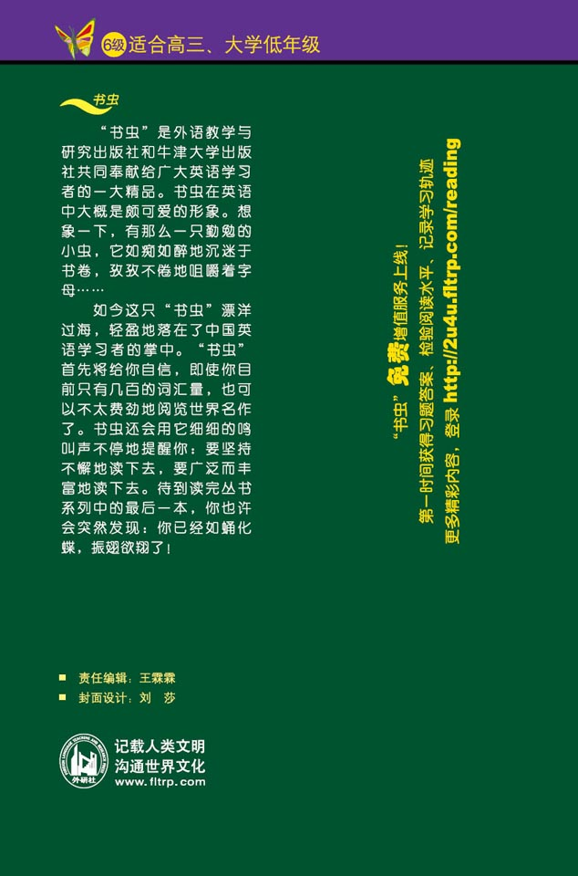